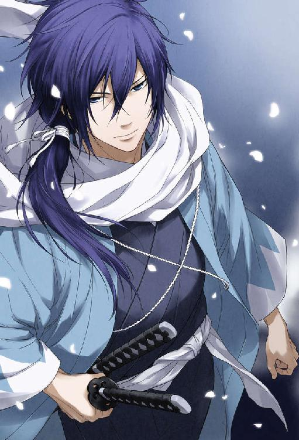
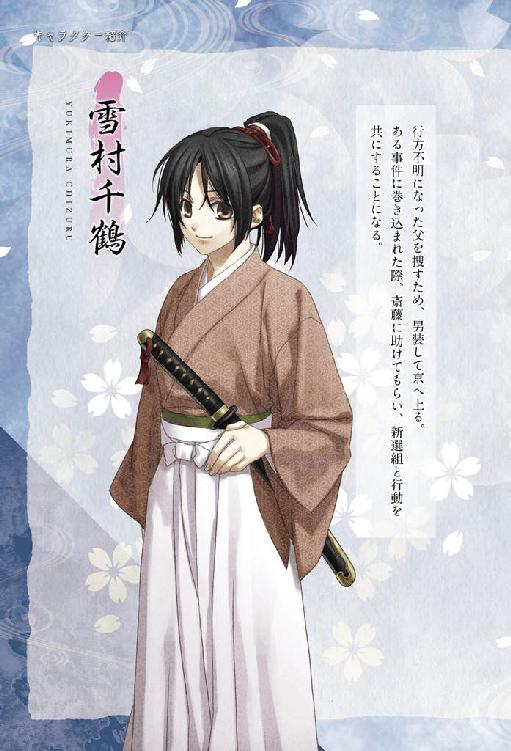
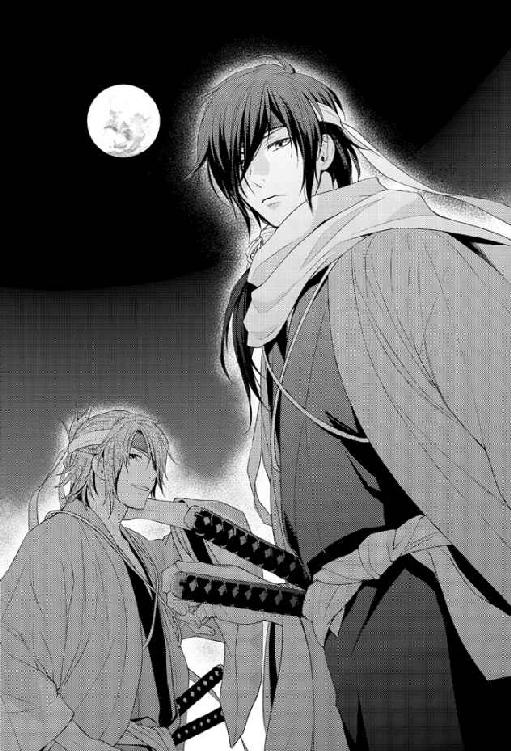

| オトメイトノベル 薄桜鬼 斎藤一編 第一巻 | |
| 長野和泉 | |
| (2015) | |


序 章
文久三年、冬──
吐く息も凍てつきそうな底冷えの中、京の町並みを物珍しそうに眺めながら、大通りを歩く姿があった。
年の頃は十四、五だろうか。あるいはもっと若いかもしれない。長い睫毛に縁取られた瞳と、白くふっくらとした頬と、細身で小柄な体躯は、どこか少女めいていた。
桃色の着物に白の袴を穿いており、腰には護身用の小太刀を差している。編笠をかぶり風呂敷を背負っていて、いかにも旅の最中といった風体だ。
「ここが、京の都......」
柔らかそうな唇から、溜め息交じりの言葉がもれた。
（京は、治安がよくないと聞いていたけど......）
歓声を上げながら通りを走り回る子供達や、町家の店先で談笑している人々、そして簪を挿し、帯を可愛らしく結んでしゃなりしゃなりと歩く町娘の姿は、江戸とさして変わりがない。
口からこぼれるふんわりとした上方訛りがなければ、京にいることを忘れてしまいそうなほどだ。
（駄目、本来の目的を忘れては。私は、京見物をする為にここに来たわけじゃないんだから）
旅姿の少年は、意を決して、近くにいる商人風の男に声をかけた。
「あの、すみません。道をお尋ねしたいのですが──」
冬の日没は早い。ぼんやりと見上げた空は、いつの間にか黄昏れ始めていた。
「どうしよう......かな......」
京の人々は、当初警戒した様子ではあったものの、親切に道を教えてくれたのだが......、少年は落胆した。
（まさか、お留守だなんて）
閉ざされたままの戸を見上げながら、旅姿の少年は目元を曇らせる。
（京で頼れる人は、松本先生だけなのに......）
松本良順。幕府に仕えている蘭方医で、彼の父の友人でもある。
「私が留守にしている間、何か困ったことがあれば松本先生を頼りなさい」そんな父の言葉を頼りに、少年はこうして京まで上ってきたのだが──
間が悪いことに、松本良順は少し前から京を離れているらしいと隣家の住人から聞かされた。
江戸を発つ前、来訪を知らせる手紙を送ったのだが、この様子を見ると入れ違いになってしまったようだ。
（先生から返事を頂けるまで、待つべきだった？）
そんな後悔が、彼の心にきざした。
（でも、これ以上待つわけにはいかない。だって父様が──）
彼の脳裏に浮かんだのは、父・雪村綱道が江戸を発つ直前のあの晩のことだった。
──遡ること、数ヶ月前。
亥の刻（午後十時）を過ぎ、聞こえてくるのは虫の鳴き声だけとなった頃。
少女が音を立てないように木戸を開けると、部屋の中から、古い本や薬の匂いが漂ってきた。文机の脇に立ててある油皿の仄明かりが、時折じじっと音を立てながら揺れ、本棚に詰め込まれているおびただしい数の本を頼りなげに照らしている。
机の前には、剃髪の年老いた男の姿があった。この部屋の主である雪村綱道だ。
彼は瞑目したまま眉間に皺を寄せて、何やら思案している様子だった。
その背中に、少女はそっと声をかける。
「父様、そろそろお休みになっては？」
すると綱道はゆっくりと後ろを振り返り、目を細めた。
「......千鶴」
彼がそう呼びかけた相手は、綱道のたった一人の家族、愛娘の雪村千鶴だ。
人目を引く派手な容貌でこそないものの、整った目鼻立ちや潤んだ黒い瞳、そして全身から漂う清楚な雰囲気には、どこか小動物を思わせる愛くるしさがある。
いつもなら、なごやかな笑みで娘に応える綱道だが、今夜はなぜか浮かない様子だ。眉根を寄せ、沈痛とさえ取れる表情を浮かべている。
「どうかしたの？」
千鶴が違和感を覚えて問いかけると、綱道は視線を合わせぬまま言った。
「......実はな、しばらく、京の都へ行くことになったんだ」
「お仕事で？」
その問いに、綱道は難しい顔のまま頷く。
千鶴はうなだれた。
折りしも、綱道が仕事で頻繁に家を空けるようになっていた矢先だ。
以前父に、今どんな仕事をしているのかを尋ねてみたことがあったが、彼からは曖昧な返事が返ってくるだけだった。千鶴に聞かせても理解はできないと思ってか、はたまた──娘には聞かせられないような仕事に関わっているのか。
気がかりではあったが、詳しく語ろうとしない父から強引に事情を聞き出すのは、千鶴もさすがに気が咎めた。
だから、父が答えてくれそうなことだけを遠慮がちに問う。
「しばらくって、どれくらいなの？」
すると彼は、静かに首を横に振った。
「それはわからん。一月になるか、二月になるか......」
「そう......」
千鶴の長い睫毛が伏せられた。
（「行かないで」なんて我侭を言うような年じゃないけど......）
寂しさ以外に、心に引っかかっていることがあった。
「気を付けてね、父様。京の都は治安が悪いと聞くから」
十年前の黒船来航以降、この江戸でも異国の公使館が焼き討ちにされたり、異人が斬られたりする事件が頻繁に起きているが、京の治安の悪さはそれを上回る程らしい。
何でも、尊王攘夷派（尊攘派）の浪士達が、今、続々と京に集まってきているそうだ。彼らの多くは藩や主家を捨てており、禄を得られぬ立場にある為、強盗や押し借り、火付けを働いて金を調達することも珍しくないらしい。
（父様が、そんな所へ行ってしまうなんて......）
心配でないはずがない。千鶴の胸は不安で震えた。
だが、その時。
「安心しなさい」
枯れ木のような手が伸びて、娘の細い肩をぽん、と優しく撫でた。
「おまえに心配をかけないよう、京にいる間は出来る限り手紙を書くようにするよ」
その言葉で、少女の胸にわだかまった懸念が少しだけ溶けてくれる。
「......うん。約束ね」
千鶴はそう言って、愛する父に微笑みを返したのだった。
旅姿の少年──いや、身の安全の為に男の装いをしている雪村千鶴は、別れ際の父の表情を思い出して溜め息をつく。
綱道は京に上った当初、千鶴が返事を書くより早く、それこそ毎日のように文を送ってくれていた。
その文面からは、娘を案ずる気持ちが痛いほど伝わってきた。足りない物はないか、生活に不便はないか、心配し過ぎるほど心配してくれていた。
（それなのに......）
やがて綱道の便りは途絶え、千鶴の方から幾度手紙を書いても、返事が来なくなってしまったのだ。
便りが絶えてふたまわり（二週間）が経とうとした頃、千鶴はいても立ってもいられなくなって家を飛び出し、こうして京へ上ってきたのだった。
「父様......」
我知らず、その言葉が千鶴の唇からこぼれる。
無謀だと思わなかったわけではないが、あのまま黙って家で父の帰りを待つことなど出来そうになかった。
（もしかしたら、浪士達のいさかいに巻き込まれて、便りを出せない状況にあるのかも知れない。いえ、ひょっとするとそれだけではなくて──）
最悪の想像がとっさに脳裏をよぎり、即座に打ち消す。
（......ううん、まだ決まったわけじゃない。父様はただの蘭方医なんだから、浪士の恨みを買うことなんてないはず）
贅沢さえしなければ、一月ほど京に滞在出来るだけの持ち合わせはある。その間に松本良順と会うことが出来れば、綱道の行方も判るかも知れない。
（もし松本先生とも父様とも会えなかったら、一人で江戸に帰らなくてはいけないけど......）
渦巻く不安を、千鶴は懸命に胸の奥へと押し込めた。
もう、こうして京へ来てしまったのだ。今更、後戻りなど出来はしない。
（ひとまず、今夜の宿を探さなくては）
そう思って歩き始めた矢先だった。
「おい、そこの小僧」
剣呑な声に呼び止められ、千鶴は身をすくめる。
（まさか......）
恐る恐る後ろを振り返ると、柄の悪い総髪の男と目が合った。
擦り切れた着物に、しばらく髪結いへも行っていなさそうな無造作な髷、そして何より、凶暴な光を宿した鋭い眼差し──。
一目で判った。彼らは京で悪事を働く不逞浪士だろう。
千鶴はこわばった喉で唾を呑み下した。そして、声の震えを懸命に抑えながら尋ねる。
「......何かご用でしょうか」
江戸にいた頃に護身術を習っていたから、戦えぬわけではなかったが──
（さすがに、三人を相手にするのは分が悪い）
係わり合いになりたくないのだろう。近くにいる町人達は、浪士達と目を合わせないようにしながら通り過ぎていくばかり。助けを求めることは出来そうにない。
浪士の一人は、嘲弄するような笑みと共に顎をしゃくる仕草をした。
「お前、子供のような形の癖に、なかなかの品を持っているではないか」
その視線の先には、千鶴が腰に差している小太刀がある。
浪士達は遠慮会釈なく彼女との距離を詰め、取り囲むようにしながら言った。
「小僧には過ぎた品だな。それを寄越せ」
「うむ。我々が国事の為に有用に使ってやる」
「これは......」
相手の怒りを買わぬよう、いつもより殊更丁寧な口調で千鶴は言う。
「私の家に伝わる大切な品なのです。お譲りするわけにはいきません」
記憶も朧になるほどの昔、綱道が千鶴に託してくれた宝刀だ。どのような事情があろうとも、渡すことなど出来ない。
だが──
「貴様！ 天子様の御為にはるばる京まで参った我ら尊攘志士に、協力出来ぬと申すか！」
浪士の一人はいきり立って一気に距離を詰め、手を伸ばしてこようとする。
千鶴は身を翻して、何とかその手を躱し──
「待たぬか、小僧！」
追いすがる浪士達から逃れ、脱兎の如く走り出した。
京の通りは碁盤の目のようになっていて、似たような家並みが続く為、角を曲がって逃げ回るうちに勘を狂わされてしまう。
（ここ、さっきも通ったような......。どこまで逃げればいいの？）
千鶴は息を切らせながら逃げ回るが──
「おのれ小僧、どこに逃げた！ さっさと姿を現せ！」
隙のない目で辺りを見回しながら、執拗に彼女を探し続ける。
（もう、しつこいなあ）
狭い路地や物陰に身を隠してやり過ごそうとするが、浪士達は諦める気配を見せず、草鞋を履いた足音がしきりに近くを行き来していた。
気が付くと日はとうに沈み、墨色の空からはいつしか粉雪さえ舞い始める。
（寒......）
『京の底冷え』と形容される通り、骨が軋むほどの冷え込みだ。かじかむ手に白煙のような息を吐きかけて、わずかな暖を取っていると......。
（あれ？）
さっきまで周りにあった浪士達の喧騒の声や足音が、いつの間にか止んでいるのに気付く。
（諦めてどこかへ行ってしまったの？ でも、さっきはあんなに執拗に探し続けてたのに）
そう思った時だった。
「ぎゃああああああっ──!!」
今まで聞いたこともないほどの大音声が、夜の帳を切り裂きながらこだました。
先刻の浪士達の声だと千鶴は直感する。
（でも、一体何が？）
少女は息を殺しながら耳をそばだてた。今の叫び声は、明らかに尋常ではない。
そして、再び。
「おのれ、やりおったな！」
叫び声に続いて、争うような物音が千鶴の耳に届いた。
他に聞こえてくるのは剣戟の音と、柔らかい何かを刃物で切り裂く時の音。絶叫。咆哮。そして動揺、驚愕、狼狽する息遣いと声音。
真剣を用いての斬り合いは、ほとんどの場合、一瞬で勝負がつくものだ。
それなのに......。
「くそ、なぜ死なぬ！ この化け物が！」
浪士の叫び声は、明らかな驚愕と震えを含んでいる。柔らかい物を刺し貫く時の嫌悪感をもよおす音が、幾度となくこだました。そして、大量の血が飛散する音も。
あれだけ続けざまに斬られていたら、とっくに絶命していてもおかしくないのに。
「駄目だ、こやつら──刀が効かぬ！」
浪士がそう叫んだ時、持っていた刀が弧を描いて宙を舞い、地面へと突き刺さるのが見えた。
（何が起きているの？）
千鶴には判らない。だが、人の命を狩り取る可能性を秘めた得体の知れない何かが間近にあることだけは、理解出来た。
呼吸を忘れるほど緊張しながら、少女は首を伸ばし、物音が聞こえてきた方を覗き見る。
その時、彼女の黒瞳に映ったのは──
「......！」
月光に照らされた白刃の閃きと、鮮やかに翻る浅葱色の羽織。その袖口には、山型の染め抜き模様が施されている。
そして足元には、既に絶命している浪士が二人。近くに、震えながら地面に座り込んでいる浪士が一人。
（もしかして、あの浅葱の羽織を着た人が......私を助けてくれたの？）
千鶴の胸の内に生じた甘い考えは、次の瞬間吹き飛んだ。
「ひ、ひひひ......」
墨染めの闇夜の中、人魂のように白く浮かぶ何かがある。
否、あれは髪だ。浅葱色の羽織をまとった白髪の何者かが、薄気味悪い笑い声を漏らしているのだ。しかもそれは、一人ではない。
狂気を露わにした視線の先には、震え上がる浪士の姿があった。
「あ、あ......」
散々返り血を浴びて鬼気迫る姿となった浪士が、今は刀を構えることも忘れ、絶望の光だけを瞳に宿し、ただ恐怖に震えている。
「た、助け──」
奥歯がぶつかり合う音が、千鶴の耳まで届きそうだった。
斬り合いには慣れているはずの彼をここまで恐怖させるものは何なのか、千鶴は息をするのも忘れて見入るばかりだ。
そして数瞬後、浅葱の羽織を着た白髪の男達が、何の躊躇もなく刀を振るった。
尋常な剣技ではない。いや、もはや剣技とすら呼べまい。殺戮、誅殺、虐殺──獣が狩りをする時より数段おぞましい、ただ派手にぶちまけられる血の匂いと感触だけを愉しんでいる、そんな屠り方だった。
「うぎゃああああああっ！」
「ひゃはははははははは！」
浪士の断末魔に、甲高い哄笑が重なる。
続いてこだまするのは、もはや耳慣れた──人の肉を切り裂く時の音。粘り気のある何かが、塀や地面に飛び散る音。
「うぐ......ぐっ、ぐ、ぶ......」
絶叫は次第に弱々しくなり、やがて何も聞こえなくなる。
（──ああ）
千鶴の身体の芯から、力が抜けていく。
（今、目の前で......人が殺された）
間近で起きている出来事のはずなのに、まるで実感が湧かなかった。目の前に広がっている光景はさながら無残絵のごときおぞましさで、現世の出来事とは到底思えない。
その間も、肉を突き刺す音、そして濡れた何かを啜る音はひっきりなしにこだましていた。
浅葱の羽織をまとった彼らが、目の前に転がっている浪士の骸を同じ人間だと思っているかすら怪しい。他の者の命を力で侵し、冒涜したい、その狂気だけが彼らを突き動かしているように見える。
やがて彼らは、もはや一塊の肉片と化した浪士の骸へと手を伸ばし──
（......！）
掴み取った肉の塊を口へと運ぶ。そして口の周りを血で濡らしながら、ぺちゃぺちゃと音を立てて嘗め始めたのだ。
（血を、啜ってる......？）
その所業はもはや、人間のものとは思えなかった。
背格好や立ち姿は、普通の人間とまったく変わらないのに──
（......こんなの、人間じゃない）
喉がこわばって息が出来なくなり、しゃっくりのような声が漏れそうになるのを、すんでのところでこらえる。ここにいることを彼らに気取られてしまえば、恐らく生きてはいられまい。
少女の鼻先をかすめる濃い匂いは、今しがた流されたおびただしい量の血の匂いだ。
（逃げなきゃ......）
懸命に気力を振り絞り、何とか息を吐き出そうとするが、全身の関節が抜けたようになって動けない。
恐怖に支配された身体は思うように動いてくれず、誤って、手元にある木の板を倒してしまう。
──がたん！
「......っ！」
闇の向こうで、息を呑む気配があった。
そして、血染めの羽織を纏った白髪の生き物達が、ゆっくりと音が聞こえた方を振り返る。
たった今流された血のような赤い瞳が、怯える少女の姿を捉えた。
「あ......」
まさに万事休す。千鶴の姿を目にした途端、彼らの表情が歓喜に歪む。
（逃げなくちゃ）
そう思うものの、総身から震えが抜けない。手も足も全く意のままにならなかった。
「ひひひひひっ──」
白髪の化け物は地を強く蹴り、一瞬で間合いを詰めてくる。千鶴に身構える暇すら与えぬほど、その足さばきは常人離れしていた。
（殺される......！）
死を覚悟した千鶴は目を閉じることすら忘れ、身を強くこわばらせる。人食い熊と対峙した時でさえ、これほどの恐怖は感じまい。
その時だった。
先程、幾度となく耳にした音──人の肉を切り裂く音が、今度は間近からこだまする。
もしや今のは、己の肉を斬られた音だろうか。そう思いかけたが......。
「え......？」
不思議なことに、痛みは全くなかった。
化け物が振りかざした血染めの刀の切っ先は、千鶴の鼻先でぴたりと静止している。
「ぐ、う......？」
白髪の化け物はその赤い目を大きく見開き、瞼をぴくぴくと痙攣させ始めた。彼自身、たった今何が起こったのかを理解出来ていない様子だ。
「ぐ、ぶっ......ごふっ」
赤黒い血が、蒼白となった唇から吐き出される。
（一体、何が起きているの？）
目の前で繰り広げられている出来事を呑み込めず、千鶴が震えていると。
ずぶっ、という身の毛もよだつ音が聞こえた。彼の身体を刺し貫いていた刀が抜き去られた音だと、ぼやけた頭で理解した。
白髪の男の身体はそのまま地面へと突っ伏し、動かなくなる。
倒れた化け物の背後に、誰かが立っているのが見えた。
彼が纏っている浅葱の羽織の袖口の模様を目にした瞬間、千鶴は危うく叫び声をあげそうになる。
（同じ羽織を着ているということは......）
先程の化け物達の仲間だろうか。震えながら息を呑み、恐る恐る、その人物の顔を確かめる。
──そこには、抜き身の刀を手にした一人の侍がいた。
彼は眉一つ動かさぬまま、刀身にべっとりとこびりついた血糊を払ってから、刀を鞘へと収める。慣れた仕草だった。
（この人......人を斬り慣れている）
わずかな所作からでも、それははっきりと感じ取れる。
その矢先。
「──っ」
切れ長の瞳と目が合って、千鶴は思わず身をすくめる。
だが不思議と、恐怖は感じなかった。
先刻の、狂気を剥き出しにした赤い瞳とは違って、彼の濃紺の眼差しからは、確かな理性の光が感じ取れたからだろう。
（あ......）
人ならぬ何かを斬った直後だというのに、彼が纏っている黒の着物には乱れ一つ生じていない。その立ち姿や、癖の強い髪ながらきちんと結われた髷からは、几帳面な内面が窺えた。
年の頃は、二十才そこそこのようでもあったし、もう少し年を重ねているようにも見えた。どこか生気に欠けるその姿は、墓守か暗殺者を想起させる。
彼が唇をうごめかせ、何かを言おうとした時。
「あーあ、残念だな」
この殺伐とした光景にそぐわない弾んだ声音が、やや離れた所から飛んできた。
「僕一人で始末しちゃうつもりだったのに。一君、こんな時に限って仕事が早いよね」
からかうように言って暗がりから姿を現したのは、二十才そこそこの、柿茶色の着物を着た青年だった。浅葱の羽織を身に着けており、右手には先程『一』と呼ばれた黒衣の青年と同じく、血にまみれた刀がある。
やや離れた所で、白髪の化け物が事切れていた。
（人を斬った後なのに......）
彼らの様子はまるで、魚釣りでもしてきた後のように事もなげだ。
京は危険な場所だと聞かされていたが、それでもたった今起きた出来事は現実からかけ離れ過ぎていて、悪い夢としか思えなかった。
「俺は務めを果たすべく動いたまでだ。あんたと違って、俺に戦闘狂の気は無い」
黒い着物の青年がどこまでも静かな声音で言うと、柿茶色の着物の彼はからからと笑い声を上げる。
「うわ、ひどい言い草だなあ」
「......否定はしないのか」
一と呼ばれた青年は呆れるような溜め息をついた後、改めて千鶴へと視線を送ってくる。敵意こそ含まれてはいないものの、隙が全くない、微塵も心を許していない目だ。
千鶴が戸惑ったまま身をすくめていると、柿茶の衣の青年が、嘲弄するような眼差しで彼女を見やりながら言った。
「でもさ、あいつらがこの子を殺しちゃうまで黙って見てれば、僕達の手間も省けたかも知れないね」
無邪気なその言葉で、千鶴は今、己が置かれている状況を改めて思い知る。
命の危機こそ去ったものの──異様な状況はまだ続いているのだ。
だが黒衣の青年は、彼の言葉に興味なさそうなそぶりで言った。
「さあな。少なくとも、その判断は俺達が下すべきものではない」

「え......？」
彼の言葉に、少女は戸惑いを覚えた。
（まだ、他に仲間がいるということ？）
その時不意に、影がさした。
雪雲がある晩なのに、と奇妙に思って影の方へ視線を向けると──
「あ......」
なびく漆黒の髪に、少女は息を呑んだ。
「......運の無い奴だ」
役者のように整った面立ちの男が、抜き身の刀を構えて立っている。その刀の切っ先は、確かに千鶴へと向けられていた。
錦絵のような現実感がない風景の中、粉雪が音もなく降りしきる。その様はなぜか、少女に、舞い散る桜の花弁を思い起こさせた。
まるで、狂い咲きの桜のような──
「いいか、逃げるなよ。背を向ければ斬る」
決して脅しではない、静かな警告。もし少しでも逃げるそぶりが垣間見えれば、彼は即座に千鶴を斬り殺してしまうに違いない。
少女は声を呑み、そして震えながら頷く。
彼は眉間に軽く皺を刻んだ後、苦々しげな溜め息を吐いた。
そして千鶴に向けていた刀を、静かに腰の鞘へと納める。
「え......？」
突然の行動に、千鶴は戸惑いを感じずにはいられなかった。
驚いたのは、彼女だけではなかったらしい。
「いいんですか、土方さん。この子、さっきのを見ちゃったんですよ」
柿茶の着物の青年が問うと、土方と呼ばれた男は低い声で答える。
「余計な事を言うんじゃねえ。下手なことを聞かせちまうと、こいつを始末せざるを得なくなるだろうが」
だが、そんな言葉に怯む様子も見せず、青年はせせら笑う。
「『始末せざるを得なくなる』ってことは、いくらかは、この子を助けてあげるつもりがあるってことですか？ 土方さん、優しいなあ」
その問いに、土方は答えない。ただ、警戒した瞳で千鶴を見つめるだけだ。
だがそんな反応など気にも留めない様子で、青年は冷淡な瞳で千鶴を一瞥しながら言った。
「生かしておいても、厄介なことにしかならないと思いますけどね」
少女の腹の奥が、ひやりと冷たくなる。
（この人達は、私を生かすべきか殺すべきかを話し合ってるんだ......）
それも、休みの日に「寄席でも聞きに行こうか？」と話し合うかのごとき気楽さで。
もし、千鶴が彼らにとって邪魔な存在だと判断されてしまえば、恐らく先程の白髪の化け物達と同じような末路を辿ることに──
寒さからくるものとは明らかに別種の震えが、彼女の細い背を撫で上げる。
やがて口を開いたのは、あの土方という男だった。
「......殺せばいいってもんじゃねえだろ。こいつの処分は、帰ってから決める」
その言葉を聞いて、それまで口を閉ざしていたあの黒衣の青年が顔を上げた。
「副長の判断に賛成です。長くここに留まれば、人目につくでしょう」
周りの様子に注意を払いながら、彼は言った。
そしてその後、先程自らが斬り伏せた白髪の化け物の骸へと目を落とす。
「こうも血に狂うとは、到底、実戦に使える代物ではありませんね」
「頭の痛え話だ。うちに持ち込まれたばかりの頃に比べりゃ、だいぶましになったって聞いてたんだがな」
彼は何か言いたげな眼差しで、物言わぬ骸を見下ろしていた。
そして、ふと何かを思い出した様子で、後ろの二人を振り返る。
「つうかお前ら、土方だの副長だの呼んでんじゃねえよ。伏せておけ」
「ええっ？ 伏せるも何も、この隊服を着てる時点で、僕達の正体なんてばれちゃってるんじゃないですか？」
柿茶の着物の青年がそう言って、「ね？」と千鶴に同意を求めてくる。
この様子だと、彼らは京ではかなり名の通った集まりなのだろうが、上洛してきたばかりの千鶴には見当がつかない。
ただ、彼らが市井の人でないことだけは、はっきりと判った。
死体が足元に何体も転がっているというのに、平然とした様子で話を続ける彼らの姿を見ていれば。
「......死体の処理は如何様に？ 肉体には、特に異常は現れていないようですが」
短い思案の後、土方は口を開く。
「羽織だけ脱がせとけ。後は、山崎が何とかしてくれるだろ」
「御意」
「隊士が斬り殺されたなんて、他の人に知られるわけにはいきませんしね」
くすくすと笑いながら言ったのは、あの柿茶の着物の青年だった。
「無駄に騒がせる必要はねえさ。俺達が黙ってりゃ、世間は勝手に解釈してくれる」
人の死など、今の京ではありふれたことなのかも知れないが......。
（こんなことって......）
千鶴は慄然としたまま、立ちすくむばかりだった。
先程、浪士達や白髪の化け物が斬り伏せられた瞬間を目にしてもなお、目の前で人が殺されてしまったなんて信じたくない。
これが日常だというのなら、京という場所は狂っているとさえ思った。
だが......。
「さて、それじゃ行こうか」
不意に手首を掴まれ、千鶴は「ひっ」と声を漏らす。手を握ってきたのは、あの柿茶の衣の青年だった。
手に込められた力の強さから、今一度、少女は思い知る。
──千鶴を生かすか殺すかは、彼らの考えひとつなのだと。
歯を食いしばって前を向くと、血染めの羽織を抱えた、あの黒衣の青年と目が合った。
彼は表情を変えないまま、淡々とした声音で告げる。
「最悪の事態を想定しておけ。......恐らく、あんたが望むような結末にはならぬ」
その警告は、千鶴の胸に深々と突き刺さった。
（私、殺されてしまうの......？）
音もなく雪が降り積もる夜の京の町を歩いていると、麻痺していた恐怖が、今更ながらに蘇ってきた。
先行きに対する不安はもちろんあったが、それ以上に......。
（私は、人が斬られるところを初めて目にして、その死体の傍らで、彼らと言葉を交わした）
これから先どんな目に遭わされるのか、この京で父の綱道や松本良順と再会することは果たして出来るのか。
どちらも見当さえつかないが──千鶴の運命が狂い始めた瞬間があるとすれば、それは恐らくこの夜だったに違いない。
第一章
襖を隔てて聞こえてくる雀の鳴き声で、千鶴は瞼を開けた。
「ん、ん......？」
日が昇っているところを見ると、どうやら寝過ごしてしまったらしい。
半ば眠りの中にあるまま身を起こそうとして、手足の自由が利かないことに気付く。声も出なかった。どうやら猿轡を噛まされているらしい。
動きを封じられたまま、千鶴は視線を巡らせた。
（ここは、確か......）
朝の光に目が慣れるにつれ、昨夜の出来事が脳裏に蘇る。
──悪夢の中に迷い込んだような、あのおぞましい出来事が。
あの後、千鶴は彼らの屯所へと連れてこられ、背負っていた荷物と腰の小太刀を取り上げられてしまった。
（......全部、悪い夢ならよかったのに）
ここが江戸の家で、父が傍に居てくれればどれだけいいか。少女の胸は不安と恐怖で震えた。
（あの人達、私をどうするつもりなの？）
恐らくあの後、彼らの間で、今後の千鶴をどう処するかが話し合われたのだろうが......。
浅葱の羽織を着た彼らは、明らかに、あの白髪の化け物を他人の目に触れさせたくない様子だった。
（私は、それを見てしまったのだから......）
真冬の早朝だというのに、少女の全身からは汗が噴き出す。まさか、こんな怪談のような出来事に巻き込まれてしまうなんて、江戸を出た時は想像すらしていなかった。
やがて、背後の襖が静かに開く気配があった。
誰かが部屋に入ってきたようだったが、両手足を縛られている為、振り向いて確かめることは出来ない。
入ってきたのは誰だろう。恐怖で身体をすくめた、その時。
「目は覚めたかい？」
ややしわがれた温もりのある声が、そう問いかけてきた。昨晩聞いた三人の誰とも違う声だ。
きつくつぶった目を開け、入ってきた人物が誰なのかを確かめる。目尻に笑い皺が刻まれた優しそうな中年の男が、千鶴を見下ろしているのが目に入った。
彼は、少女の姿を目にして、気の毒そうに眉尻を下げる。
「すまないね、こんな扱いをしてしまって。今外してあげるから、待っていてくれ」
両手首を戒めている縄が、ぱらりと音を立ててほどかれた。猿轡も外され、呼吸が一気に楽になる。
（まさか......解放してくれるの？）
戸惑い、緊張しながら男を見上げると、彼はどこか申し訳なさそうに口を開いた。
「これから、ちょっと一緒に来てくれるかい？」
「え？」
「今朝から、皆であんたの処遇について話し合ってるんだが......。あんたが昨夜何を見たのか、確かめておこうってことになってね」
やはりそうなってしまうのか、と千鶴は気落ちした。
だが、仕方ないことだとも思った。昨夜目にした光景は、明らかに普通の斬り合いではなかったし、彼らがあれを外部の者の目に曝したいはずがなかったから。
「............わかりました」
固い表情のまま頷くと、男は困ったように笑う。
「そんな顔をしなくても大丈夫さ。形は怖いが、気のいい人達だからね」
「はあ......」
確かに悪人ではなさそうだったが、それでも彼らは昨晩、眉一つ動かさずあの白髪の化け物たちを斬り殺しているのだ。人の命というものに対して抱く感覚は、千鶴が抱くものとは違うのだろうと推測できた。
場合によっては、彼らは──その場で千鶴を殺すことも厭わないだろう。
少女は絶望的な気分のまま、井上源三郎と名乗ったその男に連れられて部屋を出たのだった。
部屋に向かう途中、井上は千鶴に、彼らの素性を簡単に明かしてくれた。
彼らは『新選組』という集まりで、この京の治安を乱す不逞浪士の取り締まりを行っているらしい。昨晩目にした揃いの浅葱の羽織は、彼らの隊服なのだそうだ。
今はこうして京で、幕府や彼らを預かっている会津藩の為に働いているが、元々は、千鶴と同じく江戸からやってきたのだという。
そしてここは新選組屯所。京の外れの壬生村に暮らす郷士、八木源之丞、そして前川荘司の邸宅に間借りさせてもらっているのだそうだ。
「トシさん、連れてきたよ」
井上が障子越しに声をかけると、中から「入れ」というぶっきらぼうな声が返ってきた。
井上に促され、板張りの部屋の中へ足を踏み入れると、室内にいる全員の視線が千鶴へと集まった。彼女は身を固くする。
「おはよう。昨夜はよく眠れた？」
そう声をかけてきたのは、昨晩会った三人の内の一人──柿茶の着物を着た青年、沖田総司だった。
あの状況で安眠出来る筈もないのだが、彼は、それを知っていて尋ねている様子だ。口元に独特の、皮肉を孕んだ笑みを浮かべている。
「......寝心地は、あまり良くなかったです」
言葉を選びながら答えると、沖田は笑みを消さぬまま言う。
「あれ、そうなんだ？ さっき僕が声をかけた時はぐっすり眠ってて、全然起きてくれなかったんだけどなあ」
「えっ......」
まさか、寝顔を見られてしまっていたのだろうか。いや、それ以前に、護身術の心得がある身なのに、部屋に人が入ってきた気配にさえ気付けなかったというのは──
千鶴が、恥ずかしさと混乱で絶句していると。
「からかわれているだけだ。総司は、あんたの部屋になど行ってはいない」
呆れるような溜め息と共に言ったのは、昨晩会った黒い着物の青年、斎藤一だった。
千鶴が、せめてもの抗議のつもりで沖田を軽く睨むと、彼は悪びれる様子もなく大きな肩をすくめる。
「つまんないの。もう少し、反応を見たかったんだけどな。一君もひどいよね、すぐばらしちゃうなんてさ」
「おいてめえら、無駄口ばっかり叩いてんじゃねえ」
呆れ返った様子で言ったのは、昨晩会った三人のうちの残りの一人、土方歳三だった。
だが沖田は毒を含んだ笑みを口元に浮かべているだけで、まったくこたえていない様子だ。
やがて、上座に座っている剛毅な風貌の中年の男が口を開く。
「手荒な真似をして、すまなかったな。俺は新選組局長、近藤勇という」
先程の井上と同じく、実直で素朴な人柄がその声音や居住まいから滲み出ていた。
この人は、悪い人ではない──声を聞いただけでもそのことが直感できて、千鶴の緊張も少しだけやわらいだ。
やがて彼は表情を引き締め、斎藤へと目配せする。
「......さて、早速本題に入ろうか。まずは改めて、昨晩の話を聞かせてくれるか」
斎藤はかしこまった仕草で頷き、話し始めた。
「昨晩、巡察中に不逞浪士と遭遇。相手が刀を抜いた為、斬り合いとなりました。不逞浪士は隊士達の手によって仕留められましたが、その折、彼らが『失敗』した様子を目撃されています」
斎藤の視線が、同意を促すように千鶴へと注がれた。
この問いに対する答えは己の生死を左右すると本能的に直感し、彼女は必死に答える。
「私、何も見てません」
その言葉を聞いた土方の表情から、少しだけ緊張が解けた。
昨晩あの場に居合わせた斎藤は無表情。そして沖田は、何か言いたげな笑みを浮かべたままだ。
「本当に、何も見ていないのですか？」
近藤の隣に座っている眼鏡の男性が、落ち着いた声音で尋ねてきた。
彼のことは先程、この部屋に連れてこられる途中で井上から聞かされた。確か山南敬助という名で、土方と同じく、この新選組の副長を務めているという。
「見てません」
眼鏡の向こうにある目をまっすぐ見返しながら、千鶴はもう一度答える。
すると山南は、意外そうな表情で小首を傾げながら言った。
「おや、沖田君の話では、あなたが隊士達を助けてくれたということでしたが......」
「ち、違います！」
千鶴は沖田の表情をちらりと覗き見たが、彼は相変わらず真意の見えない笑みを浮かべているだけだ。
彼がどういうつもりで山南に先程のような説明をしたのかはわからないが、返答如何ではどんな目に遭わされるかわからない。
千鶴は内心の動揺を抑えながら言った。
「私がその浪士達から逃げている時に、新選組の人達が来て......。ですから、助けられたのはむしろ私の方です」
「......ふむ、なるほど」
山南は穏やかな笑みを絶やさないまま頷く仕草をした後、こう続けた。
「つまりあなたは、隊士達が不逞浪士を斬り殺している所を一部始終目にしていたと、そういうことですね？」
その一言に、千鶴の全身の血が凍った。
「あ......」
即座に否定しなくてはならないのに、言葉が出てこない。
そんな彼女の反応で、山南は全てを悟った様子だ。眼鏡の向こうにある目が、静かに細められる。
「君は素直なのでしょうね。それ自体はむしろ、美徳ですらあるでしょうが」
「わ、私......」
喉がこわばり、声が出てこない。
千鶴の脳裏に、昨晩の光景が生々しく蘇った。
あれは、外部の人間には決して見られてはならぬものだったはず。だとすると、それを目にした千鶴の運命は──。
「私、誰にも言いませんから！」
彼女は懸命に言ったが、山南は表情を崩さない。
「君に言うつもりがなかったとしても、先程のように、相手に誘導されて明かしてしまったらどうするのです？」
少女の全身から、冷えた汗が噴き出した。頭の中が白く塗り潰され、言葉が出てこない。
そんな二人の様子を眺めていた斎藤が、静かな声音で口を挟む。
「......あんたには、我々の為に口をつぐんでいる義理などあるまい」
「この子が約束を守ってくれるかどうかなんて判らないですし、解放してあげるのは難しいですよねえ」
揶揄するような軽い調子で言ったのは、沖田だった。彼は浮かれた調子で、さも楽しそうにこう続ける。
「やっぱり、殺しちゃいましょうよ。口封じなら、それが一番じゃないですか」
「そんな──」
千鶴が思わず声を上げると、近藤は、たしなめるようにぴしゃりと言った。
「総司、物騒なことを言うのはやめなさい。お上の民を無闇に殺して何とする」
すると沖田は、先程までとは別人のように神妙な態度になる。
「......ごめんなさい、近藤さん。今のは、ただの冗談ですから」
「冗談に聞こえる冗談を言え」
斎藤がぼそりと言うが、沖田の方は意に介する様子もない。どうやら彼は、近藤以外の人間の言葉には何ら価値を見出していない様子だ。
やがて、それまで無言のまま皆の話し合いに耳を傾けていた井上が、見かねた様子で口を挟む。
「何とかしてあげることはできんのかね？ ......まだ、こんな子供だろう？」
「私も、気は進みませんがね。隊の秘密が外に漏れてしまえば、我々だけで責任を取ることは難しくなります」
山南の冷徹な言葉に、井上は困った様子で眉尻を下げた。
そして今度は、土方の方を振り返って尋ねる。
「トシさんは、どう思う？」
問われた土方は軽く腕組みをして、視線の端で千鶴を見やった。強い視線で射抜かれ、千鶴の腹の奥に重いものがわだかまる。
やがて彼は、落ち着いた声音のまま答えた。
「......俺達は昨晩、士道に背いた隊士を粛清した。そしてこいつは、その場に居合わせた」
その言葉を聞いた山南の表情から、笑みが消えた。
「それだけだ、と言いたいのですか？」
「実際、このガキの認識なんざ、その程度のもんだと思うんだが......」
それきり、会話が途切れた。
痛いほど張りつめた空気の中、時間だけがただ過ぎていく。
（私、どうすればいいの？ 一体これから、どうなるの？）
心臓が、壊れそうなほど激しく鼓動している。一呼吸する間が、まさに永遠のように長く感じられた。
やがて口を開いたのは、斎藤だった。
「副長。すぐには結論も出ぬ様子ですし、一旦この者を部屋に戻しては」
「そうだな、頼めるか」
土方も、さしてこだわる様子を見せずに斎藤の提案を受け入れる。
「御意」
短く言った後、斎藤は立ち上がるよう千鶴に促した。
「部屋に戻るぞ。こちらだ」
「は、はい......」
──ひとまず、助かった。そのことに、千鶴は脱力するほど安堵する。
まだ処遇が決まったわけではないが、それでも、今すぐこの場で殺されることだけは避けられたのだ。
部屋に戻された千鶴は、再び両手首を縄で縛られ、畳の上へと寝かされた。
先程の部屋では引き続き、近藤や土方、山南が、千鶴を今後どう遇するかを話し合っているに違いない。
（思ったよりも、人間味がある人達みたいだったけど......）
それでも、彼らが千鶴の存在を疎んじているのは、はっきりと感じ取れた。
出来れば生かしておいてやりたいが、殺すしかないかも知れない──あの場に居合わせていた面々の内心には、その考えがあったはずだ。
（どうしよう......）
父や松本良順に再会する前に、殺されるわけにはいかない。だとすれば、何とかしてこの場を切り抜けるしかないのだが──
（京に来た事情や私の身元を明かせば、もしかしたら見逃してもらえるかも？ 少なくとも、彼らと敵対する立場ではないってことを判ってもらうことができれば......）
甘い想像ではあったが、それにすら縋りたくなるほど、今の彼女は追い詰められていた。
その時、すっと音を立てて襖が開く。
「詮議が終わった。先程の部屋へ戻るぞ」
斎藤の声だった。
（詮議が終わったということは、私を生かすか、それとも......殺してしまうかが決まったということ？）
少女の頭の中で、心臓の鼓動の音が響く。
（もしかしたらこのまま引っ立てられて、首を落とされてしまう......？）
不安ではあったが、その問いを口にした時点で己の運命が決まってしまいそうで、千鶴は言葉を発することさえできなかった。
その間にも、斎藤は慣れた手つきで、両手を戒めている縄をほどく。
やがて、ぱらりと音を立てて縄が畳の上へと落ちた、その時だった。
「なあ、一君達が昨夜連れてきたのって、そいつ？」
耳慣れぬ甲高い声が、背中の向こうから聞こえてくる。
後ろを振り返ると、高い位置で髷を結った若い侍が立っていた。年は、千鶴とさほど変わらないくらいだろうか。あどけなさが多分に残った大きな吊り目が、物珍しそうに彼女を眺めている。
「ちっちゃいし、細っこいなあ。まだガキじゃん、こいつ」
彼の姿を目にして、千鶴は先程、井上が挙げていた名前を思い出す。
（この人は多分、藤堂さん......？）
彼女が戸惑っていると、藤堂の後について二人の青年が部屋へと入ってきた。どちらも、藤堂よりは頭一つ大きい。
「お前がガキとか言うなよ、平助」
そう言ったのは、髷を結わぬ短髪に鉢巻きという風変わりな格好をした男だった。
彼の名は、永倉新八。剣の腕前は新選組の中でも一、二を争う程だと、先程井上が言っていた。
「だな。世間様から見りゃ、お前もこいつも似たようなもんだろうよ」
永倉に同意したのは、原田左之助。すっきりした目元に整った面立ちの青年だ。やや赤みがかった硬そうな総髪を、後ろで無造作に纏めている。
藤堂はしばらくの間、興味深そうに千鶴を見つめていたが、やがて皆の方を振り返って言った。
「......なあ、こいつ、本当に殺しちまうつもりなのかな？」
『殺す』という言葉に、千鶴の身が我知らずすくんだ。
その場にいる誰も言葉を発しないが、藤堂の言葉を否定もしない。充分にあり得る決定だと内心考えているのが見て取れる。
「ま、それは俺らが決めることじゃねえからな」
そう答える永倉の声音には、諦めが内在しているように見えた。
わずかなやり取りから、彼らがこういった事態に慣れているのが伝わってくる。今まで幾度となく、今回のような決定が下されてきたのが感じ取れた。
「でもさ、こんなガキだぜ？ 昨夜、目の前で何が起きたのかもよく判ってねえだろうし、殺す必要はねえんじゃねえかな......」
藤堂は同意を求めるように、永倉、原田、そして斎藤を見つめる。
気まずそうに頭をがりがりと掻く原田に代わって答えたのは、斎藤だった。
「......この者を気の毒に思う気持ちも、わからぬではない。寄る辺もなしに、女一人で旅をしてきたのだろうからな」
「へっ？ 女ぁ!?」
素っ頓狂な声をあげたのは、永倉だった。
「こ、こいつ、女なの？」
藤堂も、大きな目をしばたたかせながらもう一度千鶴をまじまじと見つめてくる。
斎藤は、千鶴を見やりながら確認を取った。
「......そうだな？」
彼の声音には、はっきりとした確信が込められていた。
ごまかすのは無理だと悟り、千鶴は素直に頷く。
「はい。女の姿では道中危険だと思ったので、こうして......。皆さん方を騙すつもりはなかったんですけど」
その答えに、藤堂は息を大きく吐いた。
「言われてみれば確かに、男にしちゃ線が細いような気がしなくもねえけど......」
「つうか、普通一目で気付くだろ。どう見たって女にしか見えねえだろうが」
三人の中でただ一人、動揺する様子もなく言ったのは、原田だった。
「......いつから気付いてたんです？ 斎藤さん」
千鶴が小声で尋ねると、斎藤は表情を変えないまま答える。
「少し見ていれば、わかる。あんたの仕草は女のものだろう」
ということは、昨夜会った時から気付かれていたのだろうか。千鶴は、下手な芝居を見抜かれてしまったような、何とも気まずい心持ちになった。
藤堂はしばらくの間、物珍しそうに千鶴を見ていたが、やがて語気を強めながら言った。
「女だってんなら尚のこと、殺すわけにはいかねえだろ。オレ達の役目は京を騒がせる不逞浪士を取り締まることで、人を殺すことじゃねえし」
「......それを決めるのは、我々ではない。行くぞ」
斎藤はそう言って顎をしゃくり、千鶴に、部屋を出るよう促したのだった。
再び新選組の幹部隊士達が居並ぶ広間へ呼ばれて聞かされたのは、意外な話だった。
「......父様を、ご存知なんですか？」
その問いにまず頷いたのは、山南だった。
「我々も驚きましたよ。まさか、君が綱道さんの娘さんだったとはね」
先程、没収していた千鶴の荷物を検めた際、荷物の中から綱道の手による文を見つけ、千鶴が彼の娘だということを知ったらしい。
新選組の面々が語るところによると、千鶴の父・雪村綱道はとある幕命を果たす為、つい数ヶ月前までこの屯所に出入りしていたとのことだ。
『とある幕命』とだけ説明しているところを見ると、千鶴には明かしたくない役目なのだろうと漠然と察せられる。
彼女も敢えて、詮索しようとは思わなかったが──
「父様は、今どこに？ 無事なんですか？」
そう尋ねると、山南は少しの間黙り込んだ。
そして、慎重に言葉を選びながら答える。
「......我々も現在、綱道さんの行方を探しているところです」
「探している、というのは......」
もしや何らかの事情で恨みを買い、命を狙われているのだろうか。そんな懸念が、少女の胸を締め付ける。
「安心して。僕達は、綱道さんを狙ってるわけじゃないから」
相変わらず内心が窺えぬ口調で、沖田は呟いた。
その言葉に少しばかり安堵して、千鶴は次の言葉を待つ。
「綱道さんは、会津藩の紹介でここに出入りしてたんだけど......実は、ちょっと前から行方知れずでさ」
「えっ......？」
千鶴の胸の内で、心臓が大きく跳ねた。
（行方知れずって、どういう......）
その疑問を口にするのがためらわれて沈黙していると、後を引き継ぐように斎藤が言った。
「......幕府を良く思わぬ者達が綱道さんに目を付けたのだろうと、我々は見ている」
「っ──」
千鶴は目を大きく見開き、声を呑んだ。
（父様が、幕府に敵対する勢力に狙われているとしたら......）
最悪の結末がとっさに浮かんで、目の前が暗くなりかける。
そんな内心を慮ってか、斎藤はこう付け加えた。
「生きている公算も高い。蘭方医は利用する値打ちがあるからな」
不安で潰れそうになっていた千鶴の胸に、わずかながら希望が差す。
（そうよね。まだ、父様が危険な目に遭っていると決まったわけじゃない）
心の中で己に言い聞かせ、不安を押し込めた。
重苦しい沈黙が立ち込める中、山南が口を開く。
「光明が見えてきましたね」
「えっ？」
唐突な言葉に、千鶴は瞠目した。
すると山南は、穏やかな笑みを浮かべながらこう説明する。
「君が協力してくれれば、綱道さんを見つけ出すことが出来るかも知れません」
「それって、どういう......」
「我々が京にやって来てから、まだ一年足らず。そしてその間、綱道さんがここを訪れたのはわずか数回です。もし変装などをして風体が変わってしまっていたら、恐らく我々には見分けがつかない。ですが......」
一旦言葉を切った後、彼は意味深な視線を千鶴へと送ってきた。
「娘である君ならば、たとえ身形が変わっていようと看破出来ますね？」
柔らかい物言いではあったが、彼の声音には有無を言わせぬような響きが込められている。
千鶴は俯いたまま、深く頷いた。
「......はい」
その様子を見届けた近藤は、いかにも人の良さそうな笑みを浮かべながら言った。
「いや、まさか綱道さんの娘さんだとはなあ！ 世の中というのは意外と狭いものなのだな。これも、神の思し召しというやつか？」
ほっとしたように言った後、彼はいかにも人の好さそうな瞳で、千鶴をしっかりと見つめながら続ける。
「君の父上を見つけ出す為ならば、我々は協力を惜しまんからな！ 大船に乗ったつもりで、どんと構えていてくれたまえ」
そんな近藤の姿を見ていると千鶴は、先程、死を覚悟していた身の上だったことすら忘れそうになってしまう。
「だよな、トシ？」
近藤は、同意を求めるように土方へと目配せした。
土方は近藤を軽く睨んだ後、改めて千鶴を見やる。
「......綱道さんの娘ってことなら、殺しちまうわけにはいかねえか」
独り言のように言った後、彼は念押しするように言った。
「判ったよ。綱道さんを見つけ出すまで、お前の身を預からせてもらう。ただし──」
そう言った後、声を低めながら付け加える。
「昨夜見たことは、絶対に他言無用だ。出来るだけ早く忘れろ。いいな」
「......はい」
この言い付けを破ればどうなるかは、明白だった。
元より千鶴は、昨夜見たものを誰かに明かすつもりなどない。あれは決して目にしてはならぬものだと、誰に言われるまでもなく理解していたから。
「殺されずに済んで良かったね。とりあえずは、だけど」
相変わらず含みのある表情で言ったのは、沖田だった。
「......はい」
色々と思うところはあったが、千鶴はその一言だけを返す。
不安や懸念が完全に払拭されたわけではない。だがとりあえず、すぐに殺されることだけはなくなったのだ。
（それに、ここにいれば父様の行方をつかめるかも知れない）
少なくとも、少し前まで綱道がここに出入りしていたのは間違いないのだ。右も左も判らぬ京で、たった一人で父の行方を捜すよりは、まだ手がかりを得られる公算は高いはず。
やがて近藤は腕組みをしながら、眉をハの字の形にして言った。
「本来であれば君の身柄は、このような男所帯ではなく、所司代や会津藩に預けてやりたいんだが......」
この口振りだと、どうやら千鶴はしばらくこの屯所に身を置くことになるらしい。
近藤の後を引き継ぐように、斎藤が言う。
「不便があれば遠慮なく言え。その都度、可能な範囲で対処しよう」
言葉足らずではあるが、どうやら千鶴を気遣ってくれている様子だ。
先程まで、もしかしたら命を奪われるかも知れないと不安で震えていただけに、彼女も不思議に思ったけれど。
「......ありがとうございます」
千鶴は丁寧に礼を言った。
やがて、気まずそうに咳払いをしながら、永倉が言う。
「ま、まあ、女の子となりゃ、手厚くもてなさねえといけねえよな」
すると藤堂が、呆れた様子で呟く。
「新八っつぁん、女の子に弱いもんなあ......。だからって、手の平返すの早過ぎじゃね？」
「う、うるせえな！ 手の平なんて返してねえよ！」
そう言いつつも、永倉の頬にはわずかに赤みが差していた。
「ま、これで屯所が華やかになると思えば、はしゃぎたくもなるよな」
二人のやり取りを眺めていた原田が、からかうように口を挟む。
（華やかになるって言われても......）
当の千鶴は、戸惑うばかりだ。
すると山南が、三人をたしなめるように告げる。
「......言っておきますが、他の隊士の前では、雪村君が女性だということを決して明かさぬように。男所帯で、間違いがあっては大変ですからね」
そう言った後、山南は顎に手を当てて思案顔になりながら言った。
「とはいえ、彼女の隊内での立場をどうしたものでしょうかね。平隊士として扱うのも問題でしょうし」
「誰かの小姓にすりゃいいだろ。近藤さんとか、山南さんとか──」
土方が面倒くさそうに言うと、沖田は底意地の悪さを窺わせる笑みと共に言った。
「そういう時は、言い出しっぺが責任を取るものなんじゃないですか？ 土方さん」
「へっ......？」
予想外の切り返しに、土方は面食らった様子だ。
「確かに、トシの傍なら安心だな！」
近藤も無邪気な笑みを浮かべながら、沖田に同意する。
「ちょ、ちょっと待て。俺にこいつの面倒を見ろってのか？」
土方がうろたえながら、皆を見回すが──
「......まあ、土方さんが一番だよな。何だかんだで面倒見いいし」
「俺達じゃ、うっかり余計なことを喋っちまいそうだしな」
「適材適所ってやつじゃねえ？」
永倉、原田、藤堂はあっさりと近藤に同意する。
土方は、助けを求めるように山南の方を振り返るが......。
「そういうことで土方君、彼女のことをよろしくお願いしますね」
いかにも優しげな声音ながら、反論を許さぬ口調で、そう言ったのだった。
千鶴が新選組屯所に身を置くことになって、ひとまわり（一週間）が過ぎようとした頃。
「今日も、寒くなりそう......」
冷えきって赤くなった手を、吐く息で暖めながら、千鶴は独りごちた。
細く開いた障子戸から見上げる空は、分厚い灰色の雲に覆われている。雪こそ降ってはいないものの、庭に生えている冬枯れの木が、芯まで冷え切っているのが見て取れた。
あの後、千鶴は一室を与えられ、日中はここで過ごすようにと命じられた。一般隊士との接触はなるべく避けるように、とも。
（殺されずに済んだのはありがたいけど......）
心の中で呟きながら、彼女は穿いている袴へと視線を落とす。
（いつまで、この格好でいなきゃいけないんだろう？）
心の中でそう呟きながら、千鶴は、彼女の処遇が決まったあの日の夜のことを思い出していた。
「いいか、お前の身柄は新選組預かりとする。が、女として屯所に置くわけにはいかねえ」
苦りきった表情で決定を告げたのは、土方だった。
隊の風紀を保つ為、この屯所へ女性を連れ込むことは禁じられているらしい。
それなのに、新選組屯所に匿われている女がいる──。そんな話が広まってしまえば、隊士の間に良くない憶測が生まれてしまう。
もう一つ別の理由として、新選組の敵である尊攘派の浪士達が、隊内に間者（スパイ）を送り込んでいるかもしれないとのことだった。もし千鶴の存在を彼らに気付かれてしまえば、要らぬ危険を招き寄せてしまうことにもなる。
「だから、おまえには男の格好のまま過ごしてもらう。面倒だろうが、辛抱してくれ」
「......はい」
江戸ではずっと、ただの町娘として過ごしてきた千鶴だ。男の格好を続ける自信などなかったが、そんなことを言っていられる状況ではない。
幸い、一般隊士達とは出来るだけ接点を持たずに済むよう、うまく取り計らってくれるとのことだ。
個室も与えてもらえるらしい。大部屋で雑魚寝している隊士達に比べると、破格とも言える待遇だった。
「とはいえ、まだまだ手が足りねえからな。もしかしたら雑用やら何やらで、お前の手を借りることもあるかも知れねえ。その時は声をかける」
「わかりました」
千鶴が土方の目を真っ直ぐ見上げながら頷くと、沖田はおどけながら言った。
「なーんだ。この子、誰かさんの小姓になるんじゃないんですね」
「......総司、てめえは余計な口出しをせずに黙ってろ」
土方はたしなめるように沖田を睨みつけるが、沖田はまったくこたえる様子がない。「叱られちゃった」と言わんばかりに大きな肩をすくめるだけだった。
こうして、当面の暮らしに関する懸念こそなくなったのだが──
（父様、今、一体どこにいるの？）
小太刀の柄にそっと手を添えながら、千鶴は心の中で尋ねたが、当然ながら応えはない。
（せっかく京に来たのだから、早く父様の行方を捜しに行きたいのに......）
せめて外出の許しを得たいのだが、折り悪しく、今は土方が公用で大坂へ出張している時だ。
（とりあえず、隊士のどなたかに聞いてみよう）
そう思った千鶴は、軽く息を吸い込んでから自室を後にしたのだった。
一般の隊士の目に付かないよう、気を付けながら縁側に出てみると......。
「......あ」
どうやら今日は運が向いているらしい。中庭で、沖田と斎藤の姿を見かける。
見知った顔にほっとしながら、千鶴は声をかけた。
「沖田さん、斎藤さん、おはようございます」
すると二人は、静かに彼女の方を振り返る。
「おはよう。明るいような暗いような、微妙な顔してるね」
「えっ？」
千鶴は慌てて自分の顔を手で押さえた。まったく自覚がなかったからだ。
「な、何か顔に出てますか......？」
おずおずと尋ねると、沖田は悪びれる様子もなく答える。
「そりゃあ、お父さんが行方知れずになってるのに、明るい気分でいられるような薄情な子にも見えないしね、君」
「............」
千鶴がうなだれていると、斎藤は無表情のまま、淡々とした声で尋ねてきた。
「綱道さんを捜しに行きたいのか？」
やはり彼は、察しがいい。
目的を見抜かれているのなら、今更隠し立てをしても始まるまい。そう思った千鶴は、意を決して頷いた。
「......お願いします。どうしても、父様を捜しに行きたいんです」
だが斎藤の口から出たのは、色よい返事ではなかった。
「残念だが、希望には添えぬ。あんたの護衛に割く人員を確保出来ぬからな」
「人手不足だしね。可哀相だけど、諦めて」
「う......」
斎藤や沖田から返ってきた厳しい返事に、千鶴はやや萎縮しかける。
だが彼女の側にも、引けない事情があった。
「......何とかなりませんか？ 別に、遠出したいわけじゃないんです。近所の人から、話を聞くだけでも」
すると沖田は灰色の空を見上げ、考える仕草をした後に言った。
「んー、僕達が巡察に出る時に同行してもらうって方法もあるけど」
「......！」
沖田の言葉を聞いて、千鶴の瞳に希望が宿る。
だが彼は、試すような表情で彼女の顔を覗き込みながら言った。
「でも、巡察って命がけなんだよ？ 僕達が下手を打てば、大怪我をしたり、死ぬ隊士が出ることもある」
彼の言葉で、あの晩──浪士や白髪の化け物と遭遇した時の出来事が、とっさに脳裏をよぎった。
そんな彼女の内心を見透かしてか、わずかに声を低めて彼は言った。
「殺されたくないなら、最低限、自分の身ぐらいは自分で守ってもらわないとね」
意地悪な笑みが、その口元に宿っている。「まあ、無理だろうけど」と言外に告げているようだった。
そんな態度を見せられると、千鶴も悔しくなって──
「わ、私だって、護身術くらいなら......」
咄嗟に、もごもごと反論してしまっていた。
目の前で爆ぜる血の華、鼻先にべっとりとまとわりつく血の匂い、酸鼻を極める光景、断末魔の叫び。
もし斬り合いになれば、あの光景をまた目にすることになるのだ。
出来ればあんなもの、二度と見たくはなかったけれど。
（だからって、父様の行方を捜すのを諦めるわけにはいかない）
見下ろすような沖田の視線を、真っ向から睨み返したその時だった。
「......護身術の心得があると言ったな」
斎藤の口から不意に、その一言が飛び出す。
「え......？」
千鶴は驚いて、彼の方を振り返った。
斎藤の濃藍の瞳が、まっすぐに千鶴へと注がれている。少女の胸の内にある決意を、試すような眼差しだった。
「どうなのだ？」
やや語気を強めて促され、千鶴は慌てて頷く。
すると斎藤は、なぜか右腰に差している刀に手をかけながら言った。
「ならば、試してやろう。腰のものが飾りでないと証明してみせろ」
「えっ──」
意外な申し出に、千鶴は絶句した。
そんな少女の動揺をよそに、沖田はおかしそうに笑う。
「一君、本気なの？ 殺しちゃったらどうするのさ」
「問題ない。加減はする」
「加減するって言ってもさ......」
失笑交じりの沖田の言葉には答えず、斎藤は、真剣な眼差しを千鶴へと注いだ。
「遠慮は無用だ。どこからでも、全力で打ち込んでこい」
だが彼女は小太刀の柄に手をかけたまま、ただ震えるばかりだ。
「............」
その様子を目にして、斎藤は眉をひそめる。
「父の行方を知りたいのではなかったのか。それとも、その小太刀は単なる飾りか」
冷徹な声に、千鶴は目をぎゅっとつぶって唇を噛む。
（確かに、一刻も早く父様を見つけ出したいと思っているのは本当だけど......）
護身術の心得がある、という言葉も嘘ではない。
だが道場では木刀を用いた稽古が主だったから、人を相手に真剣を振るったことなどないのだ。
「......雪村」
斎藤の声音が詰問するような響きを帯びた時、千鶴はようやく顔を上げた。そして、叫ぶように言う。
「斬りかかるなんて出来ません！ だって──刀で刺したら、人は死んじゃうんですよ？」
その言葉を聞いた瞬間、斎藤の切れ長の瞳が大きく見開かれた。
沖田も、絶句した様子で目を丸くしている。
そして......。
「ぷっ──あは、あはははははっ！」
遠慮会釈なく腹を抱えて笑い始めたのは、もちろん沖田だった。
その反応に、千鶴も一瞬面食らう。
だがやがて、真剣な思いで発した言葉を馬鹿にされているような心持ちになって、頬を紅潮させながら言った。
「何も、笑うことないじゃないですか......」
だが彼は、腹を押さえながら笑い続ける。
「いや、笑うに決まってるじゃない。まさか、一君相手に『殺しちゃうかも』なんて不安になれる人がいるなんてね。意外な所に、すごい達人がいたもんだなあ」
確かにあの晩、白髪の化け物を一瞬で斬り伏せてしまった斎藤に勝てるとは思っていないが――
「うう......」
こうして情け容赦なく笑い飛ばされると、千鶴もさすがに悲しくなってくる。
彼女は小さくなりながら言った。
「刀って、人を斬るものでしょう。死ななかったとしても、怪我をしてしまったらどうするんですか」
人を助ける為、あるいは己の身を守る為に、小太刀を抜くことにためらいはなかったが......。
今の状況は、そのどちらにも当てはまらないのだから、刀を抜く時ではないはず。
「私は医者の娘ですから。理由もなく、人を傷付けるかも知れない刃物を抜くなんて出来ません」
沖田はそんな彼女を、どこか冷めた表情で眺めていたが、やがて......。
「君の気持ちは判らなくもないけど、今ここで自分の腕前を示しておけば、いいことがあるかも知れないよ」
「えっ？」
意外な申し出に、千鶴は小首を傾げる。
「それなりに戦えるってことが判れば、僕達も君の外出について、少しは前向きに考えてあげられるかも知れないし」
「それって......」
どこまで信じていいのか迷ったが、確かに、彼の言葉は道理にかなっているように思えた。
それでも踏ん切りがつかない千鶴に、斎藤はこう提案する。
「どうしても刃を使いたくないと言うのであれば、鞘を刀代わりに使うか、峰打ちで来い」
千鶴は無言のまま、再び己の小太刀へと視線を落とした。
たとえ鞘で打ったとしても、峰打ちでも、当たり所が悪ければ骨折することはある。
だが、彼らなりの道理で、千鶴に便宜を図ってくれようとしているのだとすれば──
少女は小さく目を閉じて、斎藤に向き直った。
そして、折り目正しい仕草で一礼する。
「......よろしくお願いします」
斎藤が頷く気配があった。
それから千鶴は小太刀に手をかけ、しゃらんと音を立てて抜き払った。
正眼の構えを取り、切っ先を斎藤へと向けるが、彼は刀の柄に手をかけたまま微動だにしない。
（どうしたんだろう？ 抜かないのかな）
わずかな疑念が頭をかすめたが、すぐにそれを振り払った。
（今するべきことは、私の小太刀の腕前がどれほどのものかを確かめてもらって、父様を捜しに行く許可をもらうこと。それ以外のことは、考えてはいけない）
小太刀を構えて呼吸を整え、臍の下三寸のところにある場所──丹田へと意識を集め、他の全てのことを頭の中から追い出す。
斎藤は未だ、身じろぎひとつしない。
「──行きます！」
千鶴はかけ声と共に、一気に間合いを詰めた。斎藤はまだ、動かない。
峰を向けたままの小太刀が、無防備な斎藤の身体に触れそうになった、その矢先。
刀同士がぶつかる硬い音がこだまして、強く拳を殴りつけられたような衝撃を受ける。
それから、ほんの一刹那。
「あ......」
いつの間に踏み込んできたのか、斎藤の顔が目の前にあった。
ごくり、と唾を飲み下すと、冷ややかな何かが喉元に突きつけられている気配があった。
確かめるまでもない。喉に宛がわれているのは、鋭く冷えた刀だ。
全身を流れる血が冷えて固まったような錯覚があった後、今度は一気に汗が噴き出す。
そんな千鶴の動揺を知ってか知らずか、斎藤は息一つ乱さぬまま、鮮やかな手付きで刀を鞘へと収めた。
「太刀筋には、心が表れる。あんたは、師に恵まれたのだろうな」
「......え？」
言葉の意味が判らず、ぽかんとしたまま立ち尽くしていると。
「師を誇れ。あんたの剣には、曇りがない」
その一言を聞いてようやく、千鶴は褒め言葉をもらったのだということに気が付いた。
見逃してしまいそうなほど微かではあったけれど、斎藤の口元には確かに笑みが浮かんでいる。
（抜刀する瞬間が見えなかった。気付いた時には小太刀を弾き飛ばされてて、そして......）
人間業とは思えない剣筋に、千鶴が呆然としていると。
「これ、いい小太刀だね。随分、年代物みたいだけど」
「え？」
沖田の言葉に振り返ると、彼は、弾き飛ばされた千鶴の小太刀を手に取って、まじまじと眺めていた。
「すみません！ 拾って下さって、ありがとうございます」
彼が差し出した小太刀を受け取ろうとして、思わず取り落としそうになる。
「あっ──と」
「す、すみません」
そこでようやく、千鶴は自分の手が痺れてしまっていることに気付いた。
先程刀を弾き飛ばされた時の衝撃が、まだ腕に残っているのだ。斎藤が放った一刀の重さを考えれば、無理からぬことだった。
「大丈夫？ 無茶だよね。一君の居合いを受けるなんてさ」
「居合い、というのは......」
呆然としたまま千鶴が尋ねると、斎藤がこう告げる。
「帯刀した状態から、抜き打ちの一刀を見舞う技だ。抜刀直後の刃が上向いているのは、あんたも知っているだろう」
「あ、はい」
剣術が発達する以前は、刀を腰から紐で吊るす形で差すのが普通だった。その為、刃が下を向く形で帯刀するのが習いだったとされている。
だが時代が下り、剣術が発達するのに伴って、刃が上を向く形──いわゆる『打刀』の形で刀を帯びるのが普通となったのだと、以前、護身術の師が雑談の最中に話していたことがあった。
「居合いは片手で抜き打つことが多いから、結果的に威力が下がって実用性は低くなる、なんて言われることもあるんだけどね」
沖田が、どこか自慢げにそんな講釈を述べた。
「威力が低いどころか......」
もし先程のが本気の斬り合いであれば、恐らく一瞬で首を落とされてしまっていたはずだ。先刻、喉元に突きつけられた刀の存在感を思い出して、千鶴は身震いする。
（でも、さっきのような結果になってしまったということは......）
外出の許可は恐らく得られまい。少女が気落ちしてうなだれた、その時だった。
「......落胆することはあるまい。少なくとも、外を連れ歩くのに不自由する程ではない」
「え？」
千鶴が問うと、沖田は得意の人を食った笑みを浮かべながら言った。
「一君って、意外と甘いんだなあ。それとももしかして、この子が相手だから？」
すると斎藤は若干気分を害した様子で、眉を寄せる。
「......つまらぬ冗談はよせ。俺は、剣に関することで手心を加えたりはせぬ」
彼に睨みつけられ、舌を出す沖田をしばらく見つめた後、千鶴は言った。
「じゃあ私......外に連れて行ってもらえるんですか？」
すると二人は顔を見合わせ、ごまかすような表情になる。
「外出禁止令を出した人が許してくれれば、いつでも連れて行ってあげるんだけどね」
「......ですよね」
決定を下す裁量は、今、屯所を空けている土方にあるのだ。
仕方ないことだと思いつつも、歯痒さが募った。
そんな千鶴を慮ってか、斎藤は言う。
「副長が大坂出張から戻られるまで、しばし待たせることになる。......すまない」
「斎藤さんが謝ることじゃないです。気にしないで下さい」
千鶴は微笑みを作りながら言ったが、斎藤の心は晴れない様子だった。
しばらく目を伏せて考え込んだ後、こう付け加える。
「あんたの希望については、俺の方から副長に進言させてもらう。あんたにとって、いい結果になるようにな」
「だから、もう少しだけ屯所で大人しくしててね。遊び相手ぐらいになら、なってあげるからさ」
「はあ......」
沖田が一体何をして遊んでくれるつもりなのか、若干気にかかったが――
（早く、外出許可が出るといいな。そうすれば、父様の行方を捜すことが出来る......）
そんなことを思いながら、千鶴は空を見上げた。
いつの間にか灰色の冬雲は途切れ、空には鮮やかな晴れ間が覗いていた。
それから数日後の、とある夕刻。
空はいつしか濃紫色に染まり、日は、西の山端にその名残を残すのみとなった。
「......いつまで、こんな生活が続くのかな」
後ろ向きな言葉が、千鶴の唇からこぼれた。
土方はまだ出張から戻ってきておらず、従って、外出の許可は未だ得られていない状況だ。
一人で鬱々と考えても仕方ないことではあるのだが、他にすべきことも見当たらない以上、こうして思索を巡らせるより他ない。
「ここに閉じこもっている限り、父様が無事かどうかなんて判らないし、土方さんがお戻りになるまでは外出許可も得られないし......」
時と共に、不安は増していくばかりだった。
「でも......」
ささやかな救いが、ないわけではない。
「皆さん、良くしてくれるし」
新選組の面々を全面的に信用していいものか、迷っている部分がないわけではない。
彼らの何気ない会話の端々から穏やかでない気配を感じ取ったのは、一度や二度ではなかったけれど。
「でも......きっと、根はいい人達なんだよね」
少なくとも千鶴は、そう信じたかった。
「君さ、騙されやすい性格だって言われない？」
「──!?」
慌てて振り返ると、そこには沖田の姿があった。
「ど、どうして沖田さんが──」
慌てながら尋ねると、彼は口角を引き上げ、揶揄するような笑みと共に言った。
「もしかして気付いてなかった？ この時間帯は、僕が君の監視役ってことになってるんだけど」
「............」
そういえば、監視されていたのだった。千鶴はそのことを、彼の言葉でようやく思い出す。
「ということは、今の私の独り言も全部......？」
千鶴は、恐る恐る尋ねる。
だが沖田は「聞いた」とも「聞こえなかった」とも言わず、ただ満面の笑みを浮かべているだけ。
（これ、絶対聞かれてた......）
千鶴が声にならない悲鳴を漏らし、恥ずかしさでその場に崩れ落ちそうになった時だった。
「総司、無駄話はそれくらいにしておけ」
廊下の陰から姿を現した斎藤が、静かな声でたしなめる。
その姿を目にして、千鶴の頬はますます赤みを増した。
「も、もしかして、斎藤さんも聞いてました？」
「......つい先程、来たばかりだが」
斎藤の答えに、ほっと胸を撫で下ろす。
「そうですか、良かった......」
それから、はたと我に返る。
「あ、その、すみません。私......」
先程の己の振る舞いを恥じて、そう言った時だった。
「気にするな。別に、聞かれて困るような独り言でもあるまい」
「っ──」
どうやら先程の独言は、斎藤の耳にも届いてしまっていたらしい。
（確かに、隠さなきゃいけないような内容じゃなかったけど、それでも......）
独り言を言っていたということを知られるのも、千鶴にとっては大問題だった。
今度こそ床に膝をついてしまった彼女を目にして、斎藤は少し困ったような表情になる。
「夕飯の支度が出来たから、呼びにきたのだが......もしや、邪魔だったか？」
「いえ、そういうわけではないですけど......」
力なく首を横に振ってから答えた後、千鶴ははたと気付いて、顔を上げた。
「私が同席してもいいんですか？」
ここに来てから数日間は、部屋に膳を運び込んでもらい、一人で食事をとっていたのに。
「一人で食事をとるのも、味気なかろう。あんたは咎人というわけではないのだからな」
「囚われの身で、いつ殺されるか判らない身の上ではあるけどね」
冗談めかして付け加える沖田を、斎藤は軽く睨みつけた。
そして再び、千鶴の顔へと視線を戻してこう告げる。
「......勿論、あんたが一人で食事したいというのであれば、無理にとは言わぬが」
千鶴は、首を横に振った。
「いえ、そんなことないです。ありがとうございます、斎藤さん」
「礼には及ばぬ」
斎藤が短く端的に言った、その時だった。
「おーい、一君、総司！ 呼びに行くまで、どんだけ時間かけてるんだよ！」
ばたばたと足音を立てながら、藤堂が走り出てくる。
「すまぬな、平助。今行く」
藤堂は短く「おう」と返事をした後、千鶴を見やりながら言う。
「えっと、千鶴、だっけ？ 急いだ方がいいぜ。早くしねえと、食う物なくなっちまうからな」
「ごめんなさい、藤堂さん。すぐに行きます」
千鶴がそう言うと、彼は居心地悪そうな様子でこう言った。
「あー......その『藤堂さん』ってやめねえ？ 皆『平助』って呼ぶから、そう呼んでくれていいよ」
「え、でも......いいんですか？」
まさか二本差しの侍からそんな言葉をかけられるとは思わず、千鶴は問い返す。
「いいよ。年も近いから、その方がしっくり来るし。敬語もなしな」
藤堂は鷹揚な笑みと共に、そう言った。
その反応に若干戸惑いつつも、千鶴は言う。
「じゃあ......平助君で」
「そそ、それでいいよ。んじゃ、早く行こうぜ」
彼に促され、皆と連れ立って広間へと向かった。
入り口の戸を開けた時、いかにも不機嫌そうな表情で千鶴達を出迎えたのは、永倉と原田だった。
「ったく、遅えよ。何やってんだか」
「まったくだ！ この俺の腹の高鳴りをどうしてくれんだ？」
永倉は空腹も限界と言わんばかりに腹を押さえ、恨みがましい目で主に藤堂を睨みつける。
「それって、ただ腹が鳴ってるだけだろ？ 困るよな、こういう単純な人って」
藤堂は呆れるように言った後、同意を求めるように千鶴を振り返る。
まさか頷くわけにもいかず、千鶴が戸惑っていると......。
「何を〜！ お前らが来るまで待っててやったんだぞ？ この俺様の寛大な腹に感謝しやがれ」
「それを言うなら、寛大な心だろ」
慣れた調子で永倉に突っ込みを入れる原田を尻目に、斎藤が、一つの膳へと顎をしゃくった。
「そこに座れ」
「あっ、はい......」
言われるまま、斎藤が指し示した膳の前に座ると、斎藤もその隣へと腰掛ける。
膳には、雑穀のご飯や味噌汁、香の物、そして焼いた小魚といった質素な食事が載っていた。
軽く手を合わせ、食事に箸を付けようとすると──。
「言い忘れていたが......『己が飯は己が手で守る』。それがこの場の掟だ」
「え？」
言葉の意味が判らず、千鶴が戸惑っていると。
「ったく、今日も相変わらずせこい夕飯だよなあ。たったこれだけで満腹になるはずねえだろ。ってわけで、突撃だ！」
言うが早いか、永倉は箸で藤堂の膳へと突撃する。
藤堂はその箸を、己の箸で抑えて素早く弾いた。箸同士が、目にも止まらぬ早さでぶつかり合う。
「新八っつぁん！ 何でオレのおかずばっかり狙うんだよ！」
「決まってんだろ、身体の大きさだよ！ この肉体を維持するにゃ、それなりの食事量が必要なんだよ！」
「そんじゃ、育ち盛りのオレはもっと食わねえとな！」
二人は真剣試合さながらに互いの隙を窺い、箸による攻防を繰り返す。わずかな隙を見つけては電光石火の刺突を見舞おうとして、弾かれる。
千鶴が呆気に取られながら見入っていると、斎藤は味噌汁を軽く啜ってから言った。
「ここでの掟が、理解出来たか」
「あ、はい......」
「そうか、それならば──」
不意に、斎藤の眼光が鋭さを増した。
そして、目にも止まらぬ早さで動いた箸が千鶴の膳の上へと伸び、おかずの小魚を捕らえる。
「このおかず、俺がいただく」
「あっ......」
阻止する暇さえなかった。小魚はあっという間に、斎藤の口の中へと収まってしまう。
「油断したね。自分の食事は自分で守れって、言われたばっかりなのに」
おかしそうに笑いながら言ったのは、沖田だった。
「......気を付けます」
少しだけ拗ねながら、千鶴は言った。
大丈夫、漬物だけでも充分腹は膨れると、こっそり自分に言い聞かせる。
「それより、沖田さんはもういいんですか？」
「うん。お腹一杯食べると馬鹿になるっていうしね」
しれっとした様子で言う沖田の言葉に反応したのは、永倉だった。
「おいおい、馬鹿とは聞き捨てならねえな──罰としてその飯、俺がいただく！」
「どうぞ。僕はお酒をちびちびやってるから」
「んじゃ、俺も酒にするか」
原田がそう言って、沖田へと盃を差し出した。沖田は心得た様子で、その盃に酒を注ぐ。
やがて沖田は、酒で軽く唇を湿らせた後、千鶴に笑顔を向けた。
「ただ飯とか、気にしなくていいからね。お腹一杯食べるんだよ」
千鶴も、この言葉をそのまま受け取るほど鈍感ではない。
「......わかってます。ちゃんと、感謝してますから！」
「気にしたら負けだ」
ぽりぽりと音を立てながら漬物をかじり、斎藤はぼそりと呟いた。
「は、はい！」
伸びてくる箸から懸命に皿を守りながら、千鶴は何とか食事を続ける。
永倉と藤堂の争いはどんどん収拾がつかなくなり、もはや彼らの周りだけ戦場と変わらぬ殺気が漂う始末だった。
そんな彼らの、いかにも賑やかな食事風景を目にしていると、ふと心によぎるものがある。
「どうした？」
千鶴の様子に気付いたのか、斎藤が小声で尋ねてきた。
「あ、いえ......こうして誰かと食事をするのは、久し振りだったので。父様がいた頃は、一緒に食べていたんですけど」
そこまで答えて、千鶴ははっと口をつぐむ。
「......ごめんなさい。気にしないで下さい」
明るい表情を装って食事を続けようとすると、斎藤が、己の膳の上の香の物を取った。
そしてその小皿を、千鶴の膳に載せてくれる。
「斎藤さん......？」
不思議に思って呼びかけると、彼は千鶴の方を見ないまま言った。
「余った物だ。遠慮なく食べるといい」
「でも......」
先程までは殺気を漂わせながら食事の取り合いをしていたのに、と考えて、これが彼なりの心遣いだということに気付く。
斎藤という人は、無口でぶっきらぼうではあるけれど、不思議と物事に聡い性分であるらしい。
「ありがとうございます、斎藤さん」
千鶴は一言礼を言って、漬物を口へと運んだ。絶妙の塩加減で漬けられた香の物は、雑穀のご飯によく合った。
胸の内に、何とも言えない温かいものが満ちてきて、ひとりでに頬が緩んでしまう。
その時だった。
入り口の戸が開き、あの優しそうな中年の男──井上源三郎が姿を現す。
「ちょっといいかい、皆」
口調こそいつものように穏やかだったが、その声の端々に、尋常ではない緊張感がにじんでいる。
それまで場に満ちていた和やかな空気が、一瞬で硬いものへと変じた。
井上は、居並ぶ全員と視線を合わせてから、慎重にこう切り出す。
「大坂にいるトシさんから手紙が届いたんだが......同行していた山南さんが、隊務中に重傷を負ったらしい」
「えっ!?」
千鶴も思わず息を呑んだ。
井上が説明したところによると、どうやら大坂のとある呉服屋に、強盗目的の浪士達が無理矢理押し入ったという知らせが入ったらしい。
駆けつけた土方と山南で何とか浪士を退けたのだが、その際、山南が怪我を負ってしまったとのことだった。
「それで、山南さんは？」
斎藤が声を低めて尋ねると、井上は静かに首を横に振りながら答える。
「相当の深手だと手紙には書いてあったが......傷は、左腕とのことだ。剣を握るのは難しいが、命に別状はないらしい」
「それって......」
『命に別状はない』という一言に安堵したものの、別の懸念が千鶴の胸に生まれた。
他の幹部隊士達も、同じ思いらしい。皆の表情が悲痛に歪む。
「それで、山南さんはいつこっちに戻ってくるんだ？」
原田の問いに、井上は答える。
「数日中には、こっちに着くんじゃないかな。......それじゃ、私は勇さんと話してくるからこれで」
井上が退去し、入り口の戸が再び閉ざされる。
広間には、身じろぎすることさえためらわれるような重苦しい沈黙が立ち込めていた。
千鶴は、隣にいる斎藤に小声で尋ねる。
「あの......左手を怪我してしまったということは、もしかして......」
彼女が言わんとしたことを察したのか、斎藤は途切れた言葉の後を引き継ぐように答える。
「刀は、片腕で容易に扱えるものではない。最悪の場合、山南さんは二度と剣を振るえまい」
「............」
それは、多少、護身術の心得がある程度の千鶴にも理解出来ることだった。
片腕で扱うと刀の威力は損なわれるし、もし鍔迫り合いになれば、確実に敗北してしまう。
──つまり、武士としての山南は、死んだも同然ということだ。
場が沈黙に支配される中、ふう、と溜め息をついたのは沖田だった。
「山南さんって、ああ見えて結構気位が高いからね。剣を持てなくなれば、新選組に居づらいだろうなあ」
こんな状況でも、彼の性分は変わらないらしい。
誰も返事をせず相槌も打たないのに、沖田は楽しそうに話し続ける。
「もしかしたら思いつめて、おかしな薬にすがっちゃったりして」
彼の言葉に、千鶴は首を傾げた。
（剣を持てなくなるほどの傷が、薬で治るものなの？）
痛み止めの類いだろうか。だがそんな薬があるなんて、蘭方医の娘である千鶴も聞いたことがなかった。
冗談半分で紡がれた沖田の言葉に顔をしかめたのは、永倉だ。
「総司、滅多なことを言うもんじゃねえ。......幹部が『新撰組』入りしてどうするんだよ？」
「......え？」
その言葉に違和感を覚え、千鶴は思わず声を漏らす。
（しんせんぐみ入り、って......）
胸の内に生じた素朴な疑問を、そのまま口に出してしまう。
「山南さんは、元々、新選組の方じゃないんですか？」
すると藤堂が、指で空中に文字を書く真似をしながら説明する。
「ああ。普通の『新選組』って、こう書くだろ？ 今言った『新撰組』ってのは、『せん』の字を手偏にしたやつで――」
そう言いかけた時だった。
「平助！」
原田の叫び声が聞こえた次の瞬間、鈍い音がこだました。藤堂の身体は勢い良く吹き飛び、後ろの壁へと叩きつけられる。
藤堂が原田に殴りつけられたのだと理解するまでに、数瞬の間が必要だった。
先程、いかにもなごやかにおかずの取り合いをしていた間柄だとは思えないほどの緊張感が、場に満ちていた為だ。
「いってぇ......」
壁に叩きつけられた背中をさすりながら、藤堂は身を起こす。
「平助君、大丈夫？」
時が止まったような緊張の中、他の幹部隊士達の挙動を気にしながら、千鶴は彼を助け起こした。藤堂は「あ、大丈夫」と返事をしてくれる。
やがて永倉が、疲れたように息を吐いた後、原田をたしなめる。
「やり過ぎだぞ、左之。平助も、もう少しこの子のことを考えてやれよ」
彼はそう言って、藤堂の傍らにいる千鶴をちらりと見た。
（私のこと？）
つまり原田は、あの言葉の先を千鶴に聞かせたくなかったから今のような行動に出たということだろうか。
不安に思っていると、原田は決まり悪そうなそぶりで、
「......悪かったな」
そう短く詫びた後、自分の膳の前にどかっと腰を下ろした。
「いや、今のはオレも悪かったけど......。左之さんは、すぐ手が出るんだからなあ」
藤堂はそう言って、曖昧な笑みになった。
先程のやり取りにどんな意味が込められているのか、千鶴には判らなかったが――
「千鶴ちゃんよ、今の話は、君に聞かせられるぎりぎりのところだ」
永倉が、彼らしくない真剣な声音でそう言って、少女の肩をぽんと叩いた。
「これ以上のことは、教えられねえ。気になるだろうが......聞かなかったことにしてくれねえか」
釈然としない心持ちではあったけれど......。
「............」
この先に踏み込んではいけない。あの白髪の化け物と遭遇した時と同様、それだけは本能的に感じ取れた。
だから──
「わかりま......」
そう言いかけた時、沖田がぼそりと呟く。
「『新撰組』っていうのは、可哀想な子達のことだよ」
意味深なその一言に尋常でない気配を感じて、千鶴は思わず彼の方を振り返る。
沖田の瞳は、見ているだけで背筋がぞくりとするような、暗い色を帯びていた。
永倉や原田が咎めるような視線を沖田へと送るが、彼は表情を変えない。
沖田はそれ以上、何も言わなかった。彼も、『新撰組』というのが何であるのかをそれ以上明かすつもりはないらしい。
やがて斎藤が、低い声で警告する。
「忘れろ。不用意に我々の事情に踏み込めば、あんたの生き死にに関わる」
冷徹な響きがこもったその言葉に、千鶴は震えながら頷いた。
あの後、砂を噛むような心地で夕食を終えた千鶴は、一人、部屋へと戻ってきた。
布団を敷き、夜着に着替えて横たわるが、なかなか眠気は押し寄せてこない。
静かな部屋の中に身を置いていると、様々なことが脳裏を過ぎる。
──普通の『新選組』って、こう書くだろ？ 今言った『新撰組』ってのは、『せん』の字を手偏にしたやつで──
（平助君はあの時、何を言おうとしたんだろう？）
天井を仰ぎながら、千鶴は『新撰組』という文字を指で空に書く仕草をした。
（山南さんが新撰組入りするって、どういうことなんだろう？ 山南さんは『新選組』の隊士だけど、『新撰組』には入っていないってこと？）
まるで新選組の中に、もう一つ『新撰組』という隊が存在するかのような物言いだった。
（ああ、もう......）
また余計な考えに捉われてしまっている己に気付き、千鶴は自己嫌悪に襲われる。
（これ以上、新選組の秘密を知ってどうするの。知るべきじゃないって、幹部の皆さん方も言っていたのに）
氷室のように冷え切った先程の場の様子を思い出し、少女は身震いした。
（今優先するべきなのは、父様の行方を探し出すこと。他のことなんて考えちゃいけない......）
布団を頭までかぶってきつく瞼を閉じながら、千鶴は何度も己にそう言い聞かせたのだった。
第二章
──深い闇に沈んでいく錯覚があった。
『これは悪い夢なのだ』ということは千鶴自身も頭のどこかで理解していたが、それでもこの途方もない恐怖から逃れたくて、必死にもがいていた。
（助けて──）
ただ、今までの平凡な日々を取り戻したいだけなのに。
どれだけ叫び声を上げても、救いの手など伸びてこない。誰も千鶴を助けてくれようとはしない。
彼女の意識が絶望に沈みかけたその時。
「......千鶴ちゃん」
不意に、声が聞こえてきた。
その声はどうやら、遠くに見える微かな光の方角から聞こえてくるらしい。
その光を求めて、夢から覚めようとする。
「ん......」
瞼を開けた瞬間、まばゆい光で視界を埋め尽くされ、目がくらむ。
少女の全身は、脂汗でべっとりと濡れていた。
（夢だったの......）
悪夢からようやく逃れられたことに、千鶴が小さく安堵した時。
「千鶴ちゃん」
苛立たしげに紡がれる声は、彼女に強い不安を抱かせた。
やがて朝日に慣れた瞳が、目の前にいる人物の姿を映し出す。
「......沖田さん？」
すると彼は、肯定するように微笑んだ。
「まだ脳味噌が眠ってるの？ 僕だって暇じゃないんだよ。いい加減にしてくれないかな？」
「あ......」
千鶴が、戸惑いで言葉を返せずにいると──
「今日の炊事当番って、君だよね？ 布団から出てきてくれないと、朝ご飯の支度が間に合わないんだけど」
「............」
「そうしたら温厚な僕はともかくとして、心の狭い人達は怒り狂うだろうね」
「っ──」
ようやく完全に目を覚ました千鶴は、がばっと音を立てて布団から跳ね起きた。
沖田は、皮肉の笑みを濃くしながら言う。
「おはよう、千鶴ちゃん。意外と寝起きが悪いんだね」
そう言い捨てた後、彼はすぐに部屋を出ようとする。
千鶴はその背に追いすがるように、深く頭を下げながら言った。
「あ、あの、ごめんなさい！」
寝過ごして迷惑をかけてしまったことが申し訳なくて、消えてしまいたい心持ちだった。
すると彼は、背を向けたまま言う。
「別に、反省なんてしなくていいよ。君のせいで無駄にした時間が戻ってくるわけじゃないし」
軽い調子で紡がれる容赦ない言葉に胸を痛めながら、千鶴はうなだれる。
「......すみません」
突き放すような溜め息をついた後、彼はもう一度千鶴を振り返った。
「ただでさえ厄介者なんだから、少しぐらい役に立ってくれないと。邪魔にしかならないようだったら、屯所に置いてあげる意味がないよ」
返す言葉が見つからず、千鶴は黙り込んだ。
（沖田さんの言う通りだ。私はぎりぎりのところで『価値がある』と判断されて、生かされてるけど──）
心の中でさえ、その先を言葉にするのには勇気が必要だった。
（もし私の存在が不要になれば......彼らは迷わず私を殺すはず）
そうならない為に、細心の注意を払わなくては。
「僕は勝手場に行ってるから、さっさと支度してきてね」
「あっ、はい！ すぐに──」
やがて沖田が部屋を出たのと同時に、千鶴は寝間着の紐に手をかけた。
寝坊してしまったことを呪いながらも、今は落ち込んでいる場合ではないと己を叱咤する。
（恥の上塗りをしないよう、こんな時こそ頑張らなくちゃ）
「──遅れてすみません！」
埃や大きな物音を立てないように注意しながら、千鶴は勝手場に駆け込んだ。
すると、竈の傍に立っている襷がけ姿の斎藤が、たしなめるような口ぶりで言った。
「雪村。......大声を出すな」
かまどにかけられている鍋からは、炊ける寸前のご飯のいい香りが立ち上っている。
釜の様子を注意深く窺いながら、斎藤は続けた。
「隊士の中には、夜遅くまで隊務に当たっていた者もいる。せめて起床時間になるまでは、彼らを寝かせておいてやりたい」
「......すみません。迷惑ばかりかけてしまって」
千鶴は小さくなりながら、そう詫びた。
すると斎藤は、怪訝そうに眉を寄せながら彼女の方を見やる。
「謝る必要はなかろう。今後気を付ければいいだけだ」
「え......？」
時折竈を注視しつつ、千鶴を振り返って彼はこう続けた。
「日々の雑事は、我々隊士が行う。我々があんたに期待しているのは、綱道さん探しへの助力だけだ」
「............」
胸に重石を載せられたような心持ちになって、千鶴はうなだれた。
（それって、つまり......）
『綱道さん捜しが始まらない限り、お前は厄介者だ』。はっきりとそう言われた気がして、胸に膿むような痛みを帯びた。
無論、斎藤の言葉に間違いなどないが......。
白髪の化け物に遭遇したあの晩──そして『新撰組』の名を聞いてしまった時のことを思い出す。
（斎藤さんは、あの時もすごく淡々としていた。この人は、きっと......）
彼の腕前を、その身で確かめた時のことが脳裏に蘇った。
もし斎藤が手加減なしに刀を振るったら、その時こそ恐らく──
「......ごめんなさい......」
千鶴は目をぎゅっとつぶって恐怖を抑えながら、詫びの言葉を口にした。
「でも、その......出来ればお手伝いさせて下さい。少しでも、皆さん方のお役に立ちたいんです。......まだ死にたくありませんから」
斎藤は目を見開き、もう一度千鶴の方を振り返ってまじまじと見つめてきた。
そして襷を取りながら、こう問いかけてくる。
「雑用も出来ぬ居候ならば、新選組の為に殺すしかない──とでも言われたのか？」
「は、はい......」
千鶴が頷くと、斎藤はなぜか重い溜め息を吐き出す。
「総司、嘘を教えるな。寝坊をした程度で雪村を殺すわけにはいくまい」
沖田は何食わぬ顔で、竈の火加減を確かめていたが、やがて、悪戯を見咎められた子供のような表情で立ち上がった。
「まあ、そうなんだけどさ。寝坊しただけで殺していいんなら、僕だってとっくにこの子を斬っちゃってるしね」
そう言った後、皮肉めいた目の端で千鶴を見やりながら付け加える。
「でも、どうせ居候してるんなら、僕達の役に立ってくれた方がここに置いてあげる意味があるかなって思って」
「余計な気を回す必要はない。それから、もう少し火を強くしてくれ」
「はーい」
軽い調子で返事をした後、沖田は竈へと薪をくべた。
彼らのやり取りを眺めながら、千鶴は呆然と立ち尽くす。
疑心暗鬼になっている為か、彼らの発言ひとつひとつに惑わされてしまうが──そんなやり取りを楽しむ余裕があるはずもなく、緊張はただ増すばかりだ。
「あの、それで私、何を手伝えばいいですか？」
斎藤は少し考えた後、こう告げた。
「それでは、汁物を仕上げてくれ。味噌の場所は判るな？」
「はい」
炊事当番は何度か経験していたから、多少の勝手は判っていた。
しまってある瓶を開け、中から取り出した味噌を出汁で丁寧に溶くと、たちどころにいい匂いが漂い始める。
新選組の幹部隊士達のほとんどは、千鶴と同じ江戸の出身だという。
京風の味付けはまだよく判らないが、江戸にいた頃と同じ作り方で満足してもらえることが、千鶴は嬉しかった。
「よし、これで朝食は出来上がった。あんたは盛り付けが終わった膳から、広間の方へ運んでくれ」
「はい」
膳の上の汁物をこぼしてしまわないよう、千鶴は慎重な足取りで勝手場を後にしたのだった。
──千鶴が京へやってきたあの日から、早四ヶ月。
日増しに風はぬるみ、鶯の鳴き声やほころぶ花の匂いが風に乗って運ばれてくるようになったが、父の行方は杳として知れない。
土方の許しを得て巡察に同行させてもらったことは何度かあったものの、未だに手がかり一つ見つけられないままだった。
「これで、大体出来たかな」
何度も勝手場と広間を往復し、膳の配置を終えて一息つく。
（皆さんが来る前に、支度が終わってよかった）
朝食までにはまだ間があるが、もう仕事は残っていなさそうだ。
手持ち無沙汰になりつつも、所定の位置につこうとすると。
「おはようございます、雪村君。今日も朝からご苦労様でした」
離れた所から飛んできたねぎらいの言葉に、千鶴は慌てて立ち上がる。
「おはようございます、山南さん」
挨拶の言葉と共に頭を下げると、彼は申し訳なさそうに顔を伏せる。
「......客人の君に、隊士達と同じように雑務を任せてしまって、申し訳ありません。人手不足はいかんともしがたいもので」
「いえ、私なら大丈夫です。そう難しい仕事じゃありませんし、何もせずにいるのも不安ですから」
すると山南はようやく顔を上げ、面映げな笑みと共に言った。
「ありがとうございます。そう言ってもらえると、気が楽になりますよ」
そう言った後、彼は肩から吊ったままの己の左腕を見下ろしながら付け加える。
「こんな時は言葉だけでなく、行動で感謝を示したいのですがね。......この腕では、膳を運ぶことすらままなりませんから」
その言葉に、千鶴ははっとして口をつぐむ。
「あ......。い、いえ、あの......」
昨年の年末に負った怪我は、山南を気の毒なほど落胆させた。近頃は自室に閉じこもるようになり、他の隊士達と言葉すら交わさぬ日が増えているそうだ。
声をかけても自虐的な言葉が返ってくるばかりなので、他の幹部隊士達も、明らかに彼を扱いかねている様子だった。
「山南さんは、近藤さんの次に偉い方なんですよね？ そんな方に雑用なんてさせるわけにはいきませんから──」
千鶴が言いかける言葉を、山南は湿った笑みで退ける。
「昔の話ですよ。刀を持つことも出来ぬ私が、新選組にいる意味など......」
「......山南さん」
苦しげな彼の言葉が、胸に突き刺さるようだった。
（新選組の部外者で、侍でもない私には何も言えないけど......）
それでも、こうして苦悩する姿を目にするのは心が痛んだ。江戸で父の手伝いをしていた頃、怪我や不治の病で荒れる人達を何人も見てきたから、尚更。
かける言葉が見つからず、ただうなだれていると......。
入り口の戸が開き、誰かが広間へと入ってきた。
「おはよう、二人共」
穏やかに声をかけてきたのは、井上だった。頬が上気しているところを見ると、朝稽古を終えたばかりなのだろうか。
誠実な内面が表れたその姿を見ると、千鶴は心なしかほっとする。父の綱道を思い出すせいかも知れない。
彼は広間を見回しながら、おや、という表情で言った。
「朝食の時間だというのに、他の皆はどうしたんだい？」
「井上さんと一緒に、朝稽古をしていたのではないのですか？ 私は道場から縁遠い身ですし、欠席者の有無までは存じませんが」
山南の言葉にあからさまな棘が込められていることに気付き、千鶴は小さくなる。
井上は、眉を開いて困った顔をしながら続けた。
「藤堂君は不参加だったよ。彼は昨晩の巡察当番だったしね。永倉君と原田君は......随分前に稽古を切り上げてこっちに戻ってきたはずだから、井戸の所で汗でも流しているのかも知れないね。総司と斎藤君は......」
「沖田さんと斎藤さんなら、勝手場にいると思います。そろそろ呼びに行きましょうか？」
千鶴が気を遣って、そう尋ねた時だった。
「お、準備万端だな。さっさと食っちまおうぜ！」
「はぁ〜、腹減った！ 俺の腹の虫も、我慢の限界だってわめいてやがるぜ」
どやどやと騒ぎながら広間に入ってきたのは、たった今話題に上ったばかりの永倉と原田だった。
彼らは、目を皿のようにして膳の上の料理を見比べた後、少しでも量が多い膳の前へと腰を下ろす。
やがて井上が、申し訳なさそうに千鶴に声をかけた。
「雪村君。申し訳ないんだが、平助の様子を見てきてくれるかね」
「あ、はい。わかりました」
快く答えて、広間を出ようとすると。
「ついでに、土方君の部屋も確認してきてくれますか。彼は、昨夜も随分遅くまで雑務に追われていたようですから」
「は、はい......」
ここで数ヶ月過ごしてだいぶ慣れたとはいえ、それでも、いつも厳しい顔をしている土方と対面するのは緊張してしまう。
（大丈夫、だよね？）
胸の内の不安を懸命に抑えながら、千鶴は広間を後にしたのだった。
その後、土方や平助、そして途中で会った近藤と共に広間へ戻った千鶴を出迎えたのは、もはや空腹も限界に達したと言わんばかりの永倉の声だった。
「やっと来たのかよ、近藤さん！ どこまで散歩に出かけてたんだ？」
すると近藤は照れ笑いを浮かべながら、頭を軽く掻く。
「いやあ、すまんすまん。そう遠くへは行ってないんだが、道端に蒲公英が咲いていてな。もう春が来たのか、としみじみ感じているうちに、時間が経ってしまったんだ」
「......近藤さんらしいけどよ。せっかくの飯が冷めちまう前に、さっさと音頭取ってくれって」
原田が溜め息混じりに言うと、近藤は上座に据えられた膳の前に腰を下ろしてから言った。
「うむ、そうだな。では皆の衆、美味い飯を食って、今日もきりきり働いてくれ！」
上機嫌な近藤の音頭で、ようやく皆、食事に箸をつけ始める。
漬け物を軽くかじった後、土方は、隣に座っている山南を軽く睨みながら言った。
「......ところで山南さんよ。どうやら俺のことで、朝から無駄に気を遣わせちまったらしいな？ わざわざ、千鶴を、『鬼の副長』の所に寄越すなんて」
すると山南は、味噌汁を軽く啜ってから答える。
「寝起きが悪い副長を案じるのは、一隊士として当然のことですから」
「そうなのか？ 嫌がらせかと思ったんだがな」
「他意はなかったのですが。気に障ったのでしたら、すみません」
一見和やかに会話を交わしているようでいて、その言葉の端々に、何ともいえぬ緊張感が漂っている。
（こういう関係も、仲良しって言っていいのかな......）
彼らのやり取りを眺めていると、朝食の味がよくわからなくなってしまう。
そんな時、藤堂が露骨に顔をしかめながら言った。
「うわ......」
「どうしたの、平助君？」
「あのさ、千鶴。このお浸し作ったのって、総司？」
箸で菜の花のお浸しを軽く摘まみながら、藤堂は尋ねてくる。
「そ、それはね......半分が沖田さん、かな？」
すると沖田が、後を引き継ぐように答える。
「とりあえず野菜を茹でて、醤油に浸すところまでは僕がやったんだけど......ちょっと味見した一君が、『これでは辛すぎる』とか言って全部水洗いしちゃったんだよ」
すると斎藤が、しれっとした調子で答えた。
「俺は当然のことをしたまでだ。皆が皆、塩辛い食事を欲しているわけではあるまい」
「だからってこれはやりすぎだって、一君！ このお浸し、全然味しねえよ！」
騒ぎ始める隊士達を、井上は厳しい声音で叱責する。
「こら、大声を出すんじゃない。雪村君が怯えてるじゃないか」
「あ、いえ、私はそんな......」
京に来てから、心臓がいくつあっても足りないような出来事ばかりが起きたせいだろうか。千鶴は、だんだんこの場所に馴染みつつある自分に気付いていた。
（父様の行方が見つかるまでは、ここから出られない。生きる為には、この中で暮らしていくしかないんだ）
先のことを考えると不安しか浮かばなくなってしまうから、ただ黙々と、食事を口に運ぶことだけに専念する。
（頑張るしか......ないんだよね）
幹部隊士達のにぎやかなやり取りを目にしながら、少女は今一度、心の中で呟いたのだった。
「......それじゃ、私はそろそろ失礼します」
朝食の膳を片付け終え、隊士達がめいめいに部屋へと戻っていく頃を見計らい、千鶴は立ち上がった。
いつもならばこのまま、自室へと戻るところなのだが──
「雪村君、申し訳ありませんが、少し残っていただけませんか？」
意外にも、山南に呼び止められた。
「え、でも......」
千鶴が戸惑っていると、彼は軽く眼鏡を直しながら説明してくれる。
「君も知っての通り、朝食後は我々幹部隊士がこの広間で会議を行うのが習いとなっています」
少女の胸の内で、心臓が暴れ始める。
「そんな場に私がいると、迷惑じゃありませんか......？」
山南は、心の奥底が見えぬ笑みを浮かべながら首を横に振った。
「そんなことはありませんよ。今日の会議はまさに、君のことを話し合う為の場ですから」
「......ええっ!?」
一体何を話し合うというのだろう。胸騒ぎを覚えて、少女はその場に立ち尽くす。
千鶴をすぐに殺してしまうつもりはないと、以前彼らは言っていたが、それも絶対というわけではない。事情が変わるということは幾らでもあり得るのだ。
そんな千鶴の動揺に気付いてか、柔らかい声で教えてくれたのは井上だった。
「昨日の会議で決まったんだが、監察方に配属された隊士の一部に君の事情を明かすことになってね」
「監察方、ですか......？」
「ああ。彼らは、新選組の内外の事情を探る役目を負っていてね、綱道さん探しの実働隊となってくれる部署でもある。大掛かりな捜索を始める前に、君のことを紹介しておかなくてはと思ってね」
「は、はい！ ありがとうございます！」
安堵すると共に、千鶴の口元から笑みがこぼれた。
小さな一歩かも知れないが、それでも、父の行方を見つけ出す大切な一歩には違いないのだ。
「僕は反対なんだけどなあ、監察方まで話を広めちゃうの。今までこの子を屯所に閉じ込めてた事情とか、一から説明しなきゃならないし」
壁にもたれかかりながら独言めいた口調で漏らしたのは、沖田だった。
すると離れた所に座っていた斎藤が、たしなめるように言う。
「......山崎も島田も、新選組の内情を明かすに足ると、土方さんが見込んだ人物だ」
そして、ちらりと千鶴の方を見やってからこう続ける。
「それに、どちらにせよ、雪村の事情については伝えねばならぬだろう。いつまでも隠し通せることではないからな」
斎藤にたしなめられた後も、沖田は不満げに視線を投げるばかりだ。
千鶴はなぜか叱られたような気分になり、小さくなる。
「ま、ちょうどいい機会だろ。先延ばしにする意味もねえしな」
明るく笑って場をとりなすように言ったのは、原田だった。
「むしろ、こいつが屯所に来てから四ヶ月も待たせてるんだ。もう動き出す頃合だろ？」
「あ、そんな言い方したら、オレらが怠けてたみたいじゃん」
藤堂は不服そうに口を挟んだ後、千鶴の方をじっと見つめた。
「一応言っとくけどな、千鶴。オレらも綱道さんの足取りは、色々調べてたんだぜ？」
「そ、そうなんだ......？」
意外だった。
他の隊務もあることだし、てっきり綱道捜しの件は棚上げになっているのだとばかり思っていたのに。
「俺ら新選組にとっても、綱道さんが早く見つかるに越したことはねえからな」
そう言って笑みを浮かべる原田に、千鶴は恐縮して頭を下げる。
「......父様を捜してくださって、ありがとうございます」
すると藤堂は、優しい笑みと共に言った。
「別に、礼を言われることじゃねえよ。オレらはオレらの都合で動いてるだけだし」
「それでも......ありがとうございます」
感謝の気持ちを伝える術が浮かばず、千鶴はもう一度頭を下げた。
だがそんな中、永倉はどこか冷えた声音で口を挟む。
「ま、さっき総司が言ってたことも判らなくはねえがな。いつ始末することになるか知れねえような子の存在は、内輪にも伏せときてえよな」
『始末』という一言に、千鶴の身が凍る。
彼女を怯えさせるつもりはないのだろうが、永倉はさらに言った。
「新選組の秘密を知った人間がいたからやむを得ず屯所に監禁してたものの、邪魔になったから殺した──なんて事情を正直に明かしたら、隊内の士気が下がっちまう。覚悟が足りねえ奴が多いしな」
新選組を守りたいという彼らの論は、千鶴にも理解は出来た。
だがそれでも、己の死を前提とした話を聞かされると、どうしても平静でいられない。
場が緊張してきたことに気付いてか、永倉は沖田の方を振り返り、明るくおどけるように言った。
「......とはいえ、今回の件は俺ら全員で話し合って決めたことなんだからな。今更グチグチ文句言ってんじゃねえよ」
「まあね。僕も根っこではちゃんと納得してるんだけど、やっぱり不満は不満で──」
沖田が腕組みしながら言った時だった。
「失礼します」
戸の向こうから誰かの声が聞こえてきて、皆の視線がそちらに集まる。
恐らくこの声の主は、先程話題に上った監察方の隊士だろうか。
「島田、山崎、両名参りました」
「よし、入れ」
土方の応えの後、戸が静かに開いた。
広間に入ってきたのは、二人の隊士。片方は、身の丈六尺（一・八メートル）強はありそうな巨漢だった。そしてもう片方は隙のない所作や鋭い目つきに特徴がある青年で、いかにも隠密の役目を得意としている風情だ。
まず口を開いたのは、大柄な隊士の方だった。
「監察方所属、島田魁と申します。以後、お見知りおき下さい」
大柄な体躯に圧倒されそうになってしまうが、優しげな瞳からは、その人柄がにじみ出ていた。『偉丈夫』という言葉がよく似合う。
「監察方所属、山崎烝」
山崎というその隊士は、言葉少なにそう名乗った。
彼がまとっている空気は妙に鋭くて、千鶴の方まで緊張させられてしまう。
やがて近藤は、穏やかな口調で告げた。
「既に聞いていると思うが、君達監察方には、行方不明になっている蘭方医、雪村綱道殿の捜索を頼みたい」
そこまで話した後、近藤は声を低め、慎重な口調で続けた。
「綱道殿の行方に関しては、我々の方でも捜索を続けていたんだが......今に至るまで、手がかりが得られぬままだ。恐らく、何らかの組織的な力が働いている公算が高いのではないかと思う」
二人は沈黙したまま近藤の言葉に耳を傾けていたが、やがて島田が口を開く。
「それでは、綱道さんに関する情報を集めるのも、骨が折れそうですね」
「ああ。誘拐されちまったのか、綱道さん本人の意思かは知らねえが......どこかに身を潜めてるんだろう。向こうの動きが見えるまで、藪をつついて蛇を出さねえよう気を付けて調査を続けてくれ」
土方の言葉に、島田と山崎は深く頷いた。
「では、本題に入りましょう。綱道さんの行方を調べる上で、我々には奥の手があるのです」
山南はそう前置きした後、千鶴へと目配せする。
『来た』──内心そう思いながら、少女は山南の次の言葉を待った。
「雪村君。簡単にで構いませんから、自己紹介していただけますか？」
眼鏡の向こうで微笑む隙のない視線を受け、千鶴は緊張しながら口を開く。
「......私、雪村千鶴といいます。蘭方医の雪村綱道の娘です」
さすがに少々驚いたらしい。島田と山崎が息を呑むのが判った。
二人にまじまじと凝視され、千鶴は若干居心地が悪くなる。
「平隊士には伝えられん話だが......新選組が綱道さんを捜す理由には、幕府の密命が深く関わっている」
慎重に語られた『密命』という一言に、千鶴は内心はらはらする。
（そんな話を、部外者の私が聞いてしまってもいいの？ この様子だと、隊士さんの中にはそのことを知らない人もいるみたいなのに）
だが千鶴の内心に気付いていない様子で、近藤は言葉を続けた。
「雪村君の素性を隠したまま男の形で暮らしてもらっているのは、この話を、内外に伏せる為だ」
話し終えた後、近藤は島田と山崎、二人の顔を交互に見やった。
やがて島田が、大きく頷いてから言う。
「了解しました、局長。ところで、一つ質問があるのですが」
「何だね？」
「彼女は密命に関しても、全て知っているのですか？」
すると近藤に代わり、土方が苦々しげな表情で口を開く。
「こいつは、あくまでも部外者だ。幕府に直接関わりがあるわけじゃねえから、余計なことを話すんじゃねえぞ」
土方の言葉に、二人は「はい」と短く答えた。
その後、千鶴の処遇についても改めて聞かされたが、基本は現状通り、屯所の自室に待機となるらしい。
もし状況に何らかの進展が見られれば、監察方と共に情報収集を行うことになるかも知れないとも聞かされた。
（仕方ないことだとは思うけど......）
新選組の面々が明らかに千鶴を扱いかねているのが感じ取れて、申し訳なくなってしまう。
「土方君が信頼している君達なら大丈夫だろうとは思いますが、この件はくれぐれも内密に......」
山南が釘を刺すように言うと、山崎はかしこまって頷いた。
「かしこまりました。この山崎、決して皆さん方の信頼は裏切りません」
いかにも真剣そのものの彼を揶揄するように、沖田が呟く。
「『皆さん方の』じゃなくて『土方さんの』の間違いじゃないの？ 相変わらずご主人様には絶対服従なんだね、山崎君は。忠犬みたいで結構なことだなあ」
すると山崎は、不快げに顔をしかめながら切り返す。
「......挑発はやめて下さい。確かに俺は土方副長のことを尊敬申し上げていますが、他の方を蔑ろにしたことなどありません」
「へえ、土方さんに媚びてることは否定しないんだ？」
険しい顔の山崎と、薄く微笑んだままの沖田の間に、見えぬ火花が散る。
厳しい声色で口を挟んだのは、斎藤だった。
「いい加減にしろ、総司。隊士同士の和を乱すな」
「山崎君も落ち着いてくれ。沖田さん相手に、何て態度を......」
島田も山崎を制するが、二人は険悪な様子で睨み合ったままだ。
土方は眉間に深い皺を刻み、頭を抱えながら言った。
「これで会議は終わりだ。お前らはとっとと解散しろ。監察方の二人は、今後の動きについて説明するからここに残ってくれ」
「はい」
山崎と島田を除く幹部隊士達は、簡単な挨拶を口にしながらぞろぞろと広間を出て行く。
千鶴も井上に連れられ、彼らの後に続いた。
最後まで広間に残ったのは、近藤と土方、山南、そして監察方の二人のみ。
これから何を話すのか、気にはなったが......。
（あれ以上余計なことを聞かずに済んだのは、良かったのかも知れない）
そんなことを考えながら、千鶴は自室へと急いだのだった。
「はあ......」
己の部屋に戻ってようやく、千鶴は思い切り手足を伸ばした。
どうやら先程は、彼女本人が思っていた以上に緊張していたらしい。こわばった手足を丁寧に伸ばしたり腕を軽く振ったりして、全身に血を巡らせる。
千鶴の立場を考えれば仕方ないことだとも思えるのだが、それでもやはりあの息苦しい場所から逃れられたのは素直に嬉しかった。
廊下に人の気配がないのを確かめて、障子戸を細く開けてみる。
今日も、いい天気になりそうだ。花の香りと春鳥の声が、部屋の中に心地良さを運んでくれる。
（ついさっき、朝ご飯を食べたばかりみたいな気がするけど......）
日の位置を考えると、そろそろ昼食の時間だ。
（お昼の担当は確か......原田さん達だったかな？）
そんなことを考えながら、ぼんやりしていた時だった。
──がしゃん、と瀬戸物が割れる音が飛んできて、千鶴は思わずすくみ上がる。
一体何があったのだろうと、廊下から聞こえてくる音に耳を澄ませていると。
「一君、そっち！」
「心得ている。だが目に見えたからといって、捕らえられるとは限らぬ」
「下手な言い訳してないで、もっと気合入れて走ろうよ！」
どうやら、沖田と斎藤の声のようだ。会話の内容からすると、何かを追いかけているところらしい。
「お二人共、何をしているんです！ こんな所で──うわっ!?」
続いて聞こえてきたのは山崎の怒声と、障子紙を派手に破る音だ。あまつさえ、どすん、ばたんと家具を引っくり返したり、物を落とす音さえ聞こえてくる。
「一体、何が起きてるの......？」
己の目で確かめたかったが、あいにく、千鶴はこの部屋から勝手に出られる立場ではない。
であれば事態が収拾した後に、それとなく事情を尋ねるのが賢明ではあるのだが――
（ちょっと、覗くだけなら）
先程の声や物音は、明らかに普通ではなかった。もしかしたら、こうして部屋で待機しているどころではない事態が起こっているのかも知れない。
不安と好奇心を半分ずつ抱えながら、千鶴はそっと廊下を覗いてみた。
すると......。
「きゃっ!?」
目の前を何かがよぎる気配があって、思わず声を漏らしてしまった。
（今のは......猫？）
見間違いなどではない。虎模様の斑がある猫が、勢いよく廊下を駆けていくのが見える。
「な、何なのですかこの猫は！ もしかして、沖田さんの飼い猫ですか？ 捕まえて下さい！」
先程広間で目にした冷静さはどこへやら。声を裏返らせながら山崎が叫ぶ。
「僕の猫じゃないってば。捕まえたいのは、こっちも山々なんだよ！」
沖田は忌々しげに叫びながら、猫の後を追う。
ただ一人静かな声音で言ったのは、斎藤だった。
「総司。口論する余力があるのならば、もっと気合を入れて走れ」
「判ってるってば！」
三人が派手な足音を立てながら追いかけているのは、一匹の猫。
（ど、どういうこと......!?）
京の治安を預かる新選組の隊士が必死に猫と追いかけっこをしているなんて、冗談のような光景に思えた。
千鶴が呆然としたまま、三人の姿が見えなくなった後もその場に立ち尽くしていると。
「千鶴！」
三人が消えたのとは反対の方角から名前を呼ばれて、彼女はようやく我に返り、そちらを振り返る。
藤堂が立っていた。
「平助君。今のって何？ どうして沖田さん達が、猫を追いかけてたの？」
すると彼は気まずそうに目をそらした後、こう答える。
「あー......その辺を説明するとさ、すっげえ長くなるんだけどいいか？」
「う、うん......」
千鶴が頷くのを見計らっていたかのように、物陰から長身の人影がひょいと顔を出した。
「んじゃ作戦会議しねえとな！ 千鶴ちゃん、この部屋借りるぜ」
「な、永倉さん!?」
突如現れた永倉は、驚く千鶴を放置したまま、勝手知ったる様子で彼女の部屋へと入っていく。
「オレも、作戦会議に賛成！」
藤堂も永倉に賛同し、千鶴に了解すら取らずに部屋の中へ入ってしまう。
「ちょ、ちょっと待って！ 作戦会議って、どういう......」
「説明はこれからするって。のんびりしてる暇はねえし、手早く解決しねえとな」
「でも、そんな......」
千鶴が戸惑っていると、物陰から姿を現した原田がこう説明する。
「すまねえな。他の部屋はちょうど埋まっちまってるんだ。ここしか使えそうにねえんだよ」
「え、えーと、あの......？」
事態はさっぱり飲み込めないものの、勝手知ったる様子で部屋に入っていく三人を見ていると、だんだん嫌な予感がしてきた。
（もしかして私、面倒な事件に巻き込まれかけてる？）
内心不安に駆られていると──
「あ、千鶴ちゃん。左之さんと平助を見かけなかった？ ちょっと捜してるんだけど」
先程猫を追いかけていた沖田が戻ってきて、そんな問いをぶつけられる。
「お二人でしたら、作戦会議をするとかで私の部屋にいますけど......」
先程のやり取りから何とか理解し得た限りの説明をすると。
「名案だな。それでは我々も邪魔させてもらうことにしよう」
沖田と同じように戻ってきた斎藤がそう言って、千鶴の部屋へと入ってしまう。沖田もそれに倣った。
いつの間にか千鶴の部屋に、新選組の幹部が五人も揃ってしまっている。
（私、どうすればいいの？ 会議って言ってたから、席を外してた方がいいんだろうけど......）
そんなことを考えていると。
「千鶴、お前も入れ。廊下に出てて、他の隊士共に見つかったら面倒だろ？」
「は、はいっ！」
原田に腕を引っ張られ、いつもと比べて窮屈になった自室へと半ば強引に連れ込まれたのだった。
「事の起こりは、勝手場だ」
千鶴が部屋の隅に腰を下ろしたのを見計らって、永倉は重々しく説明を始めた。
「昼飯の当番は、俺と左之だったからよ、いつもみてえに飯の準備をしてたんだが......忌々しいことに、そこに飛び込んできた曲者がいやがって、俺達の努力を水の泡にしやがったんだ。勝手場はもう、目を覆うばかりの大惨事！ あいつだけは絶対に許しちゃおけねえ！」
永倉は憤慨しきりといった様子で、そう叫んだ。
「えーと......」
要点がつかめなかった千鶴は、考えながら口を開く。
「『奴』って、猫のことですよね。あの子が何かしたんですか？」
すると原田が、永倉の後を引き継ぐように教えてくれる。
「派手にやってくれたぜ。勝手場の釜やら鍋やら、全部ひっくり返しやがった。もちろん中身の飯までだ」
「わ、わあ......」
永倉や原田の渋い表情から勝手場の惨状が窺えて、それ以上訊くのが怖くなってしまう。
「このままじゃ今日は昼飯抜きだ。こんな時、何より怖いのは──」
「怖いのは......？」
千鶴がごくりと喉を鳴らしながら尋ねると、藤堂はげんなりした様子で答えた。
「怒り狂う土方さんだよ。『食い物を粗末にしやがって！』って、全員正座させられて説教されるに決まってるし」
「ただのお説教で済めばいいけどね。あの人のことだから、手とか足とか刀が出るんじゃない？」
沖田の一言で、場は深刻な雰囲気に包まれた。
その沈黙を打ち破るのは、真面目な表情の斎藤だ。
「副長に余計な心労をかけぬよう、この件は我々で始末をつけるべきだろうな」
全員、異存はない様子だ。反論の声は上がらない。
「ちなみに土方さんって、今どちらに......？」
千鶴が恐る恐る問いかけると、藤堂がこう答えてくれる。
「土方さんは、まだ広間だな。近藤さんと山南さんと三人で、何か会議してるみたいだぜ」
「いかにも重要そうな話し合いで神経尖らせてる時に邪魔したら、どうなるか想像もつかないよね」
沖田の言葉で、場の空気がさらに重くなる。
やがて永倉が、目一杯親しみを込めた表情で言った。
「と、とにかく千鶴ちゃん、俺達に手を貸してくれねえか？」
「ええっ!?」
その提案には、さすがに驚かざるを得なかった。
この屯所で暮らすようになってから早くも四ヶ月が経とうとしているが、今回のような頼み事をされるのは初めてだ。
だが千鶴の戸惑いを押し切るように、永倉は頼み込んでくる。
「急いで勝手場の後始末をして、昼飯を作り直さなきゃならねえ。もう、俺達だけじゃ無理なんだ！」
「で、でも、あの......」
「頼む。平隊士共に知られて騒ぎが大きくなっちまう前に、何とか解決してえんだよ！」
必死に拝み倒す永倉を遮るように身を乗り出しながら、今度は藤堂が千鶴を諭し始める。
「勝手場も大変だけどさ、土方さん達の方だって誤魔化さなきゃ駄目だろ？ さっきの物音で、何か変なことが起きてるだろうってのは向こうも勘付いただろうし」
「............」
彼らの言わんとするところが理解出来ないわけではなかったが、どうしても気が進まなかった。
土方や山南をごまかす自信など千鶴にあるはずもなかったし、もし今回の件に一枚噛んでいるということを彼らに気付かれたらと思うと、容易に頷くことなど出来るはずがない。
永倉や藤堂をたしなめるでもなく、千鶴に助け舟を出すわけでもなく、ただ会話の推移を見守っていた沖田が、ぼそりと呟いた。
「それも大事だろうけど、まずはあの猫を捕まえないと被害が大きくなるだけだよね」
「それぞれ役割を分担する必要があるな」
斎藤も、沖田の言葉に同意した。
「あ、あの......」
強い不安に襲われた千鶴は、恐る恐る声をかける。
「皆さんの事情は判りましたけど、私はこの部屋から出られない決まりでしたよね......？」
「ああ、普段ならばな」
淡々とした斎藤の答えに、千鶴はほっとする。
だがその一瞬後に、彼はこう付け加えた。
「しかし想定外の事態が起きた時には、その限りではない」
「え......」
「今はまさに、猫の手も借りたい状況だ。あんたも俺達と共に働いてくれ」
「............」
心のどこかで予想していたことではあったが、やはり手伝わぬわけにはいかぬらしい。
（この人達に運命を握られてる私に、断ることなんて出来るはずないけど......）
それでも、彼らと行動を共にするのはやはり恐ろしくて、なかなか頷けなかった。
だが彼らは千鶴の意思などどこ吹く風といった体で、役割分担を始めてしまう。
「それでは雪村は、我々と共に猫を探すのを手伝ってくれ」
真面目な顔の斎藤に命じられ、千鶴は背をぴんと伸ばして頷いた。
「ど、努力します」
そんな彼女の様子を眺めていた沖田は、小さく笑う。
「ま、戦力としてはあんまり期待出来そうにないけどね。千鶴ちゃんって鈍そうだし、逃げ切られそう」
「......そんなに手ごわい猫なんですか？」
「うん。意外とすばしっこいから、捕まえるのは骨が折れそうだね」
言われてみれば確かに、相手は新選組幹部から逃げ切る程の猫なのだ。
油断禁物。その言葉の意味を、千鶴は今一度噛み締める。
「......最善を尽くします」
「土方さんをごまかすのと勝手場の後片付けはオレらがやるから、猫の方、なるべく早く捕まえてくれよな」
藤堂の言葉を受け、斎藤は沖田と千鶴を促す。
「とにかく、外に出るぞ。事態は一刻を争う」
「はい」
千鶴は斎藤や沖田と共に、まずは中庭へ出てみることにした。
中庭には人の気配がなく、井戸の傍には、今朝、隊士達が汗を流す時に使ったとおぼしき桶が寂しげに転がっているだけだ。
「猫、いませんね......」
「うむ、まるで気配が感じられぬ。物陰に隠れているわけでもなさそうだ」
斎藤は鋭い目つきで、周囲の様子を油断なく窺いながら言った。
「どこに行っちゃったのかな。屯所を出てくれてるなら、すごく助かるんだけど」
沖田の呟きに、斎藤は、彼を叱咤するような眼差しを送る。
「甘い希望は捨てろ。油断こそ命取りになるのは、斬り合いとさして変わらぬ」
「相変わらず、固いんだから。一君って本当に真面目だよね」
沖田が溜め息をつきながら言い、広い肩を落とした時だった。
「あれ......？」
「どうしたの、千鶴ちゃん。何か変なことでも思い出した？」
「い、いえ、あの......気のせいかも知れないんですけど」
もし誤りだったらと不安を抱きつつ、千鶴は慎重に打ち明ける。
「向こうから、誰かの泣き声が聞こえてきた気がして」
彼女の言葉を聞いた沖田と斎藤は、互いに顔を見合わせる。
「ご、ごめんなさい。猫探しとは関係ないですよね」
垂れ込めた沈黙が気まずくて、慌てて先程の言葉を撤回したが、斎藤は、そんな彼女を静かな瞳で見つめながら判断を下す。
「あんたの聞いた声とやらが有益な手がかりになる可能性は、決して高くないと思うが」
そう前置きした後、内心が見えにくい淡々とした声音で続けた。
「関係ないと決め付ける前に、真偽を確かめるべきだろうな」
「まあ、泣き声っていうのもどことなく事件の香りだしね。早速、様子を見に行こうよ」
意外なことに斎藤だけでなく、沖田も同意してくれた。
「は、はい！」
勢い込んで返事はしたものの......。
（もしあの泣き声が空耳だったらどうしよう）
少なくない不安を抱きながら、千鶴は二人と共に、声が聞こえてきた方角へと向かうことにした。
「確か、こっちの方から聞こえてきたと思ったんですけど......」
泣き声の主を見つける為、八木邸の玄関先まで出てみた時だった。
「うぇええええんっ！」
門の傍に、顔を真っ赤にして泣きじゃくる男の子の姿がある。
「あれ、勇坊じゃない。どうして泣いてるのさ？」
「沖田さん、お知り合いなんですか？」
「この家の子供だよ。勇坊、何かあったの？」
沖田が慣れた調子で子供をあやしながら尋ねると、勇坊と呼ばれたその子供は、小さな拳で涙を拭いながら答えた。
「せっかく捕まえてきたのに、猫、逃げちゃって......」
その言葉を聞いて、千鶴は思わず斎藤の方を振り返る。
「斎藤さん。屯所に猫を連れ込んだのって、もしかして──」
彼は真剣な表情で頷いてくれる。
「もう少し、詳しい話を聞きたいところだが......」
二人は改めて、泣きじゃくる子供を見下ろすが......。
「う......うぇええええんっ！」
どう見ても、まともに話が出来る状態ではなさそうだ。
沖田は勇坊をなだめながら、非難するような眼差しを斎藤へ向ける。
「一君が睨むからだよ。責任もって、この子を泣き止ませてくれるよね？」
「無茶を言うな。子供の相手を得意としているのは、あんたの方だろう」
沖田と斎藤は、互いに一歩も譲らずに睨み合う。
やがて二人の視線は、示し合わせたように千鶴へと向けられた。
「え、えっと......私、ですか？」
頷きこそしないものの、彼らの目は、彼女の言葉を肯定していた。
「わ、判りました。何とか頑張ります！」
無言の圧力に耐えかねて、千鶴は仕方なく頷く。
（江戸にいた頃、父様の手伝いで患者さんの子供をあやしたことは何度もあるし......きっと大丈夫）
己を奮い立たせた後、まずは勇坊の傍に屈み込んで目線を合わせ、声をかけた。
「あの......あなたがあの猫のこと、可愛がってくれてたの？」
するとその男の子は、洟をすんっ、と啜りながら頷いた。
「そっか。可愛がってた猫が突然いなくなっちゃったら、すごく悲しいよね。でもあの子は別にあなたのことを嫌いになったんじゃなくて、何か事情があったんじゃないかな？」
千鶴の言葉で、少しだけ気分が落ち着いたらしい。涙で赤くなった目をしばたたいた後、彼は千鶴をじっと見つめてくる。
詳しい話を聞き出すには、いい機会と言えそうだった。
「えーと......実は、私達もその猫を探しているところなの。何か知ってるなら、どんな事でもいいから教えてくれないかな？」
すると彼は、急に顔をしかめて──
「う、うぇえええええんっ！」
先程よりもさらに大きな声で泣き始めた。
「あ、ご、ごめんね!?」
大泣きする子供をなだめたり頭を撫でたり、背中をさすったりしてみるけれど、今度はいっこうに泣きやんでくれる気配がなかった。
やがて沖田が、苛立ちがこもった重い溜め息を吐く。
「ああもう、面倒だなあ......。僕、泣き虫って嫌いなんだよね」
その言葉を聞いて、勇坊の泣き声はさらに悲痛さを増した。
「あ、あの、そんなに厳しい言い方をしなくても......」
さすがの千鶴も見かねて苦言を呈するが、沖田は不機嫌そうに顔をしかめているだけ。
そのやり取りを目にして、斎藤も渋い顔になる。
「総司は黙っていろ。子供が怯えて、話にならぬ」
「へえ、優しいんだね、一君。この子が泣き止むまで、待ってあげるつもりなんだ？ 一刻の猶予もないんじゃなかったっけ」
沖田は皮肉を多分に込めた口調で、吐き捨てる。
「僕は、別の場所を捜させてもらうよ。勇坊が何か知ってるとは思えないし、ただ待つのって時間の無駄だから」
「お、沖田さん!?」
千鶴が呼び止めようとするが、彼はそのままどこかへ歩き去ってしまう。
後に残されたのは、千鶴と斎藤、そして号泣する子供の三人だけ。
焦る千鶴だったが、斎藤は冷静だ。
「......総司は放っておけ。したいようにさせるといい」
「は、はい......」
とにかく今は、この子供に泣き止んでもらわなくてはどうにもならない。
千鶴と斎藤はその後、根気強くその男の子を慰め続けたのだった。
「つまるところ例の猫は、前川邸の方へ行ったのだな？」
「......うん」
ようやく落ち着いたらしい勇坊──八木勇之助は、真っ赤になった目を擦りながら斎藤の問いに頷いた。
「じゃあ、前川邸の方を捜してきましょうか？」
「うむ、他に手がかりもなさそうだからな。まだ留まっていてくれればいいが」
「そうですね......」
子供を慰めるのに手間取ってしまったので、もしかすると猫はもう他の場所に行ってしまっているかも知れない。
思わず考え込んだ千鶴に、斎藤はこう声をかけた。
「猫というのは、高い所を好むと耳にした。屋根や木の上などを主に探すべきだろうな」
その言葉が意外に思えて、千鶴は目を丸くする。
「どうした？ 何か、妙なことを言ったか」
「あっ、いえ......」
千鶴は戸惑いつつも、こう答えた。
「斎藤さん、お詳しいんですね。猫を飼ったことがあるんですか？」
すると彼は少し気まずそうに目をそらし、小さな声で答えた。
「......飼った経験はない。ただ、以前小耳に挟んだことがあるだけだ」
「そうなんですか......」
どうやら彼は、刀や剣術に関することだけを知悉しているわけではないらしい。
やがて斎藤は、どこか決まり悪そうに言った。
「感心している場合ではないぞ。前川邸へ急がねば」
「あっ、そうですね」
先程までと違い、斎藤に対する若干の親しみが胸に生まれつつあるのを感じながら、千鶴は前川邸へ向かうことにした。
そして二人が門をくぐろうとした時。
「おや、そちらに何か用事でも？」
聞き覚えがある声に呼び止められ、千鶴は足を止める。
声の主は、先程会ったばかりの監察方の隊士・島田魁だった。
「え、えっと......」
正直に答えていいものか判らず、千鶴は斎藤の方を振り向いて意向を伺う。
だが二人が答える前に、島田が口を開いた。
「もしや、先程からの騒ぎと何か関わりがあるのですか？」
斎藤は、静かに頷いた。
「屯所に猫が一匹入り込んだ。副長達に余計な心配をかけぬよう、我々で対処に当たっている」
「なるほど、そうでしたか。お疲れ様です」
目を細めて微笑みながら言った後、島田はこう申し出る。
「ですが、手分けをして探そうにも、お二人だけでは大変でしょう。よろしければ、自分もお手伝い致しますが......」
「助かる。この件は早急に解決せねばならぬからな」
「よろしくお願いします、島田さん」
斎藤と千鶴が頼み込むと、彼は笑顔で頷き返してくれた。
その時。
不意に、近くから猫の鳴き声が聞こえてくる。
「聞きましたか？ 今、猫の声が──」
「どうやらその猫は、近くにいるようですね」
三人は互いの顔を見て、大きく頷き合う。
そして、鳴き声が聞こえてきた方向へ慎重に歩みを進めた。
相手は、新選組の幹部達から長時間逃げ回っていた猫だ。さらに、隙を突いて木の上や屋根の上へ逃げおおせてしまう為、散々手こずらされたが、ついに──
「フニャア！ ニャ、ニャア！」
斎藤と島田の的確な指示の元、何とか猫を捕まえることに成功する。
「つ、捕まえた......」
だが猫は、まるで殺されると勘違いしているかのように激しく暴れ続ける。
「あ、あ痛っ！ お、お願い、じっとして......」
手を放してしまえば元の木阿弥だ。腕に掻き傷が幾つも出来たが、懸命に痛みをこらえ、千鶴は猫を押さえつける。
やがて観念したのか、猫の抵抗が弱まった。
少女はほっと一息つきながら、二人の指示を仰ぐ。
「この猫、どうしましょう？ 飼うわけにもいかないでしょうし」
「八木家に渡すわけにもいかぬだろうな。あのような幼子には猫の世話など出来まい」
「ですよね......」
「となると、屯所の外にでも放してやるのが一番だと思うが」
「............」
彼の言うことはもっともだと、千鶴は思った。
だが少し気がかりで、すぐに答えを返すことがためらわれる。
やがて斎藤が、促すような目で見つめてきた。千鶴はおずおずと口を開く。
「この子、まだ小さいですよね。放してしまって大丈夫でしょうか......」
どんな答えが返ってくるのかは予想できていたが、問わずにはいられなかった。
見たところ、餌を食べられないほどの月齢ではなさそうだが、一匹で餌を取れそうにも見えない。人の手がなければ飢えて死ぬのは間違いなさそうだった。
その様子は今の己の境遇に重なると、千鶴には感じられた。この屯所に厄介者として留め置かれている今の立場と。
「確実に生き延びられるという確証は、残念ながらありませんな」
島田は気の毒そうに呟いた後、斎藤の方へ視線を送った。
だが当の斎藤は、厳しい表情を浮かべたままだ。
「我々が気にかけるべきは、猫の安全ではなく屯所内の平穏だ。騒ぎを起こした猫をここで飼い続けるのは、無理がある。外に放す他あるまい」
「そうですよね......」
居候している立場で猫を守ってあげたいと望むなど、あまりにも身勝手な希望なのかも知れないと、千鶴は自虐的に思った。
彼の物言いに納得出来ぬわけではないものの、わだかまりは残る。
そんな彼女の胸の内を見て取ってか、彼は厳しい声で告げる。
「哀れに思う気持ちは判らぬでもないが、どうにもならぬことだ」
だが千鶴は、なかなか顔を上げられない。
やがて斎藤は、両手を彼女へと差し出しながらこう言った。
「猫は、俺が捨ててこよう。あんたは部屋に戻っていろ」
「......はい」
名残惜しく思いながら、千鶴は猫を斎藤へと手渡す。
手の平に残った子猫の温もりに、切なくなりながら、千鶴は島田に連れられて自室へと戻ったのだった。
その晩、自室で布団に横になってからも、気は晴れなかった。
「はぁ......」
あの猫にとって、どんな生活が一番幸せなのだろうか。本当にあの猫は、無事生き延びることが出来るのだろうか。そんな答えの出ぬ問いを、幾度となく思い浮かべては打ち消していた時。
「ニャー......」
猫の鳴き声が耳に届いて、思わず布団から起き上がる。
（今のって──）
もう一度耳を澄ませると、また鳴き声が聞こえてきた。しかも、まだ幼い子猫が母猫を呼ぶ時のような甘え声だ。
（でもあの猫は捨ててきてしまったって、斎藤さんが言っていたのに）
他の物音を聞き違えたか、あるいは別の猫の鳴き声だろうか。春先だから、猫の声を聞くことなんて珍しくはないだろうとも思ったけれど。
「............」
不思議な予感があった。あの声は昼間の子猫のものだと、なぜか千鶴は確信していた。
しばらくためらった後、彼女は思い切って起き上がる。
そして衣紋を軽く繕った後、音を立てないように気を付けながら部屋を出たのだった。
「ニャーン......」
猫の鳴き声は、縁側に出るとより鮮明に聞こえてくる。やはり空耳ではないらしい。
（向こうかな？）
息を潜め、足音を殺しながら、千鶴は前川邸の方へと歩き出す。
提灯の明かりがない為、視界はまさに真の暗闇だった。だが闇の中に身を置くうちに、少しずつ目が慣れてくる。
八木邸の門を出た所で人の気配を感じ、千鶴は足を止めた。
（あれは......）
前川邸の門の傍に、人影があった。暗闇に紛れてしまいそうなその人物は......。
「屯所に猫など不要だと、何度言えば判るのだ。ここであんたを飼うことは出来ぬ」
斎藤の声だった。
そして彼の視線の先には、昼間のあの子猫の姿がある。
猫はすっかり斎藤に懐いている様子で、差し伸べられた手にじゃれついたり、尻尾をぴんと立て、着物の脛の部分に身体を擦り付けたりを繰り返している。
「頼むから出て行ってくれと言っているのが判らぬのか。そう懐かれても困るのだ」
困惑しきりといった様子で、斎藤は猫を説き伏せる。
だが猫は、どこ吹く風だと言わんばかりにゴロゴロと喉を慣らし始めた。
「恐らく屯所での生活は、あんたが思うよりも厳しい。何より新選組の人間は俺を含め、動物を愛でる情など持ち合わせてはおらぬ」
あまりに真剣なその様子を見ていると、声をかけていいのかどうか迷ったが......。
「あ、あの、斎藤さん？」
恐る恐る声をかけると、斎藤は硬直した。そして、慌てて振り返る。
「──雪村!?」
どうやら猫を説得するのに夢中になって、千鶴の気配に全く気付かなかった様子だ。達人の彼らしからぬ失態だが、それだけ熱を込めて説得に当たっていたということなのかも知れない。
彼は恥じ入るようなそぶりで目を伏せ、しばしの間、呼吸をぎこちなくする。
だがやがて、弁解するように言った。
「......誤解なきよう断っておくが、俺は、猫を飼うつもりなどない。今この猫と話していたのは、あくまでも平和裏に屯所を出てもらう為だ」
「はい、判ってます。少しだけ様子を見てましたから」
二人が話している間も、猫は喉を鳴らしながら地面に引っくり返ったり、ふくらはぎの間をすり抜けたりを繰り返す。
「この子、もう斎藤さんに懐いちゃってますよね......」
「いや、誤解だ。そのようなことはない」
だがその言葉を即座に否定するように、猫は斎藤に身体を擦りつけ、甘え声で鳴き続ける。
まるで、母猫を慕っているような仕草だ。餌付けしたわけでもないのにこれだけ懐かせることが出来るなんてと、千鶴は驚いた。
斎藤はますます居心地悪そうなそぶりになり、目をそらして沈黙する。
「......あの、斎藤さんは猫がお好きなんですか？」
千鶴が何気なく尋ねると......。
「別に、嫌ってはおらぬ。特段、好んでもいないが」
そう答えた後、彼はぼそりと付け足した。
「......まあ、猫を好む者が多い理由はよく判るが」
「ふふ、可愛いですもんね」
「ま、まあな......」
相変わらず顔を背けたままではあるが、斎藤は軽く頷いてくれた。
暗がりのせいではっきりとは見えないが、きっとその頬は赤くなっているに違いないと千鶴は思った。
少し考えた後、彼女は慎重に言葉を選びながら尋ねる。
「ですけどこの猫、どうします？ また大事になったら困りますし、このまま放っておくわけにはいきませんよね」
「そうだな。またどこかに捨ててくるしかあるまい」
斎藤は、当然のように答えるが──
「でもこの猫、屯所が気に入っちゃったみたいですし、また戻ってくるかも知れませんよ」
すると斎藤は困りきった様子で顔をしかめる。
「それも一理あるが......ならば、どうしろと言うのだ？」
「それは......」
本来部外者であるはずの己が意見するなど、図々しいとは思ったが......。
それでも、これが最善の案だと思えたから、千鶴は意を決して己の考えを述べる。
「誰かしっかりした人に頼んで、世話をしてもらうというのはどうでしょう？」
「しっかりした者、だと？」
斎藤の声音に、非難するような色は見られない。
そのことにほっとしながら、千鶴は言った。
「例えばの話ですけど、斎藤さんがきちんと飼い慣らして躾をしてあげれば、猫も大人しくしていてくれるんじゃないかと思うんですけど。勝手場を荒らしていたのは、お腹が空いていたせいでしょうし」
「............」
斎藤は無言のまま、千鶴の目をじっと見つめてきた。
濃藍の静かな瞳で見つめられると、わけもなく胸の中がざわめくが、やましいことはないのだからと己に言い聞かせ、彼と視線を合わせたままにする。
しばし見つめ合った後、彼は言った。
「......あんたの意見を採ろう。だがこの件に関しては、他言無用だ」
「はい、わかってます」
「先程、この俺が猫と話していたこともだぞ。判っているな？」
「はい」
さしもの斎藤もあの姿を見られるのは恥ずかしかったのかと、妙な親しみを覚えてしまう。無論、彼の前で口に出来るはずはなかったが。
「そろそろ戻るぞ。部屋まで送ろう」
短く告げた後、斎藤は千鶴を彼女の自室へと送り届けてくれた。
昼間から続いていた騒動が一段落し、ようやく落ち着いて眠りにつける。
（それにしても......）
厳しくて冷淡だと思っていた斎藤の別の一面を目にして、千鶴は、彼に対する警戒や恐怖心を意外なほどなくしている自分に気付いた。
無論、彼としては不本意以外の何物でもないのだろうけど。
（動物に好かれる人に、悪い人はいなさそうだもんね。斎藤さんも、きっと......）
そういえば、初めて幹部隊士達と共に夕飯をとった時のことを思い出す。あの時も彼は、父の事を思い出して気落ちした千鶴に、香の物を分けてくれた。
もしかすると彼は、千鶴が思うよりずっと不器用で、優しい心の持ち主なのかも知れない。
口の中で飴玉を転がすような心持ちで、そんなことを思った。
千鶴が置かれている状況が、何ら変化したわけではない。だが彼女の中で確かに、何かが変わった気がした。
それから例の猫は、前川邸の裏でひっそりと飼われることになった。
隊士の中には夕飯の残り物をこっそり与えたりしている者もいるらしいが、建物の中に立ち入らせない限りは土方も黙認している様子だ。
斎藤の黒い着物に猫の毛が付いているのを見るにつけ、千鶴はあの夜のことを思い出して、つい笑みを漏らしてしまうのだった。
第三章
六月に入り、京を取り囲む山々からも蝉の声がひっきりなしに聞こえるようになった頃。
「今日も暑くなりそう......」
四方を山に囲まれている京の夏は思っていた以上に苛酷で、息が詰まりそうになる。
この屯所で寝起きするようになってから、早くも半年。土方の許しを得て、たびたび巡察に同行している千鶴だが、父の行方は相変わらず掴めぬままだった。
（父様はまだ京にいるの？ もしかしたら、入れ違いで江戸に戻ってしまったんじゃ......）
先が見えない毎日の中、不安ばかりが膨れ上がっていく。
もしかしたら何か組織的な力が働いているかも知れないと、以前、土方が言っていたことを千鶴は思い出す。
（以前ほど監視はきつくないし、いい方向に進んでいると思いたいけど......）
半年間の屯所生活を経て、千鶴は、隊士達の雑用を言いつけられるようになっていた。
食事の支度や洗い物、屯所の掃除、着物の洗い張り、繕い物、そして隊士の病気や怪我に関する相談に乗ったりなど。
彼女が日頃接する相手は主に幹部隊士だが、所用の折、時々は一般隊士と言葉を交わすようにもなっていた。彼らは、千鶴を『幹部の小姓』と考えている様子だ。
（逃げ出そうとしなかったのが良かったのかな。近頃は、最初の頃みたいな刺々しい雰囲気ではなくなってきたけど......）
そんなことを考えている間も、蝉は大音声でひたすら鳴き続けている。考えれば考えるほど、頭の中が散漫になっていくばかりだ。
（それにしても、今日は本当に暑い......）
蒸されるような暑さに耐えかね、千鶴は中庭で涼を取ることに決めた。
幸い、中庭に人の姿は見当たらなかったが――
「風が、ない......」
差し込む陽光はひたすら眩しく、風は全く吹いていない。
地面からは絶えず熱気が立ち上り、景色がゆらゆらと揺らいで見えた。
その熱気から逃れる為、木陰へと入った時、ふと思い出す。
（父様は、密命でこの屯所に何度か来たことがあるらしいけど......何の為に？）
一体、どんな命令を受けていたというのだろう。一介の蘭方医に過ぎないはずの綱道が幕府から何を言いつけられていたのか、千鶴には想像も出来なかった。
京に来たあの晩目にした、おぞましい光景。白髪の化け物。『新選組』と『新撰組』。
千鶴が関知してはいけない秘密が幾つもあるのは、間違いない。
（駄目。あの晩のことは、早く忘れなきゃいけない。土方さんにも、そう言われたんだから）
そう思って、首を振ったその時だった。
「雪村君、どうしたのです？ こんな所で」
突然背後から声をかけられ、驚いて振り返ると、山南の姿があった。
「山南さん！ 起きていて大丈夫なんですか？」
何気なく尋ねると、彼は苦笑いを浮かべながら答える。
「寝たきりの病人のような言い方はやめて下さい。散歩ぐらい、問題ありませんよ」
相変わらずの柔らかい物言いに安堵しかけ......。
「もっとも、左腕は寝たきりですがね」
自虐的に付け足されたその言葉に、千鶴は思わず目を伏せる。
山南の腕の怪我は、完治する気配がなかった。というよりも、これ以上出来ることはもうないのだ。
──山南は一生、剣を握れない。
怪我の知らせを受けて脳裏をよぎったその一言が、今一度、千鶴の胸に重くのしかかってくる。
（山南さんは小野派一刀流の免許を持ってる程の腕前だって、以前、平助君が教えてくれた。そんな方が、二度と剣を持てなくなってしまったとしたら......）
その心の内が見て取れるだけに、慰める言葉など見つからない。
「君こそ、部屋の外に出る許しは得ているのですか？ 屯所の中を勝手に動き回るのは、感心しませんね」
「......はい、申し訳ありません」
幹部や隊士の部屋に無断で立ち入らぬ限り、屯所内での行動は制限されていなかったのだが、あくまでも見逃してもらっているに過ぎない。
千鶴は、釈明するように言った。
「少し考え事をしたかったんです。中庭の方が部屋の中より涼しいと思って、それで......」
すると山南は、声を低めて言う。
「我々の監視から逃れて考え事とは、まるで後ろめたいことでもあるかのようだ」
「......すみません」
千鶴は身を小さくして、ぺこりと頭を下げた。
後ろめたいことなどなかったのだが、今はきっと、何を言っても悪く取られてしまうに違いない。
「私、部屋に戻りますね」
いたたまれなくなった千鶴は、そう言い残して自室へと戻る。
去り際にちらと山南を盗み見ると、彼はどこか悲しげな風情で空を見上げていた。
その立ち姿を見ていると、胸が締め付けられるような気分になり......。
「あの......」
おずおずと声をかけると、彼はゆっくりと千鶴の方を振り返る。
「今日は暑いですから、山南さんも暑気あたりには気を付けて下さいね」
すると山南は、小さく笑って答えてくれる。
「ありがとうございます。君も、体調には気を付けて」
「はい！」
山南が普通に受け答えしてくれたことに、ほんの少し安心しながら、千鶴は駆け足で部屋へと戻ったのだった。
そして、日が西へと傾いた頃、屯所内はにわかに騒がしくなる。
千鶴の部屋の前をどかどかと足音が行き交い、幹部の怒声すら聞こえてきた。
尋常でない気配に戸惑いながら、彼女は、廊下を走り抜けようとする永倉に声をかける。
「あの、永倉さん」
「悪い！ 今、取り込み中だからよ、話なら後にしてくれよな」
そう切り返す永倉の手には、五寸釘と百目蝋燭があった。
「......それ、何に使うんですか？」
蝋燭といえば、かなり高価な物のはずだ。穏やかでない気配を感じ取って尋ねると、永倉は「ああ」と言った後、あっさりと答える。
「巡察の最中、長州の間者を捕まえたらしいんだけどよ、向こうさんもしぶとくてなかなか口を割らねえみてえでな」
長州浪士といえば、京における尊攘過激派の代表のような存在だ。
江戸で異国の公使館を焼き討ちにしたり、朝廷に入り込んで偽の勅書を出したり、様々な狼藉を働いていたというのは、千鶴も耳にしたことがある。いわば、幕府や新選組の仇敵とも呼べる人々の集まりだった。
昨年の八月十八日に起きた政変で京を追われ、追い詰められる形になった今は、何をしでかすか判らない──そんな見方をされているらしい。
それにしても、と千鶴は首を傾げた。
「どうして、五寸釘と蝋燭なんですか？」
これらをどう使うつもりなのか皆目見当がつかず、尋ねるが......。
「こういうことは、判らねえ方が幸せだって」
永倉はごまかすように笑った後、走り去っていった。
そして辺りが暗くなると、緊迫の度合いはさらに増した。
千鶴の部屋の前を絶えず足音が行き交い、土方や近藤の鋭い指示が飛び交う。
（一体、何があったっていうの？）
ここに来てから半年になるが、これだけの騒ぎは初めてだ。明らかに尋常ではない出来事が起きているのが判る。
千鶴が障子戸を細く開け、外の様子を窺うと──
「あっ......斎藤さん！」
廊下の向こうから見知った顔が近付いてくるのに気付き、思わず声をかける。
彼は、鉢金と帷子で物々しく武装していた。まるで、戦場に向かうかのごとき風体だ。
だが彼は、険しい顔で千鶴を見咎める。
「自室から出るな。今日は、あんたの監視に人手を割く余裕はない」
「すみません！」
厳しい声音で叱責され、千鶴は慌てて詫びた。
斎藤は、彼らしくなく余裕ない足取りで廊下を行き過ぎてしまい、辺りには静けさが戻る。
（斎藤さん、どこに出かけるつもりなんだろう？ あの格好、もしかして......）
そう思った時だった。
「一君も、あんな言い方することねえのにな。余裕がねえのは千鶴のせいじゃねえんだし」
斎藤が消えたのとは反対の方角から声が聞こえてきて、千鶴はそちらを振り返った。
そこには、斎藤と同じく武装した藤堂が立っている。
「何かあったの？ 皆、ばたばたしてるみたいだけど......」
もしや夕方永倉が言っていた長州の間者に関わることだろうかと、内心懸念しながら尋ねた。
すると藤堂は、そうそう、と頷いてから答える。
「今夜、長州の奴らが会合を開くらしいんだ。で、オレらは討ち入りの支度をしてるってわけ」
「そうなんだ......」
『討ち入り』という穏やかではない響きに、千鶴の胸中の不安はいや増す。
藤堂の話によると、新選組はこれから二手に別れて討ち入りを決行するらしい。
会合が行われるのは池田屋か四国屋のどちらからしいが、どちらの店で行われるのか、今の時点でははっきり判らないとのことだ。
池田屋に向かうのは局長の近藤他、十名。そして四国屋に向かうのは土方達二十四名。
尊攘派の浪士達は四国屋に集まっているとの見方が濃厚らしく、そちらに人員を割くことにしたらしい。
「でも......動ける隊士さん達は、それだけなの？」
会合というからには、少なく見積もっても十人以上、多ければ数十人の浪士達が集まっているのではないだろうか。
一対一の戦いならばいざ知らず、複数の浪士に取り囲まれてしまうことになれば、いくら手練の隊士達とはいえ無事ではいられないのでは──
同じ懸念を、藤堂も抱いていたらしい。彼は、疲れた溜め息を吐きながら言う。
「暑気あたりとか腹痛で寝込んでる隊士が多くてさ。会津藩や所司代にも連絡入れたんだけど、動いてくれる気配がないんだよなあ」
「そんな......」
千鶴が顔をしかめながら言うと、藤堂はどこか寂しさを含んだ笑いを浮かべる。
「ま、オレ達は使いっ走りだから」
この様子からすると、彼らがこういった扱いを受けるのは初めてのことではないのだろうか。千鶴が沈んだ顔をしているのに気付き、藤堂は明るく言う。
「んな顔すんなって。危険な役目だからこそ、オレ達がやる意味があるんだし！ 今夜の大捕り物を成功させれば、会津藩もさすがにオレ達を軽く扱うことは出来なくなるだろうしな」
明るく天真爛漫なその言葉が、彼の精一杯の強がりに思えて、千鶴の胸が軋み音を立てる。
だが、討ち入りに参加する当の本人がこうして懸命に平気なふりをしているのだ。同情の言葉などかけるべきではないと、彼女は思った。
「......怪我しないように、気を付けてね」
千鶴が精一杯の言葉をかけると、藤堂は満面の笑みを返してくれる。
「おう！ そんじゃ、またな！」
そう言い残し、藤堂は慌しくその場を走り去ってしまった。
空は雲に覆われていて、月の姿は見当たらなかった。
主立った隊士達が御用改めに出向いた後、千鶴は山南に呼び出され、八木邸広間へとやってきていた。
「名目上ではありますが、私は局長から留守を守るよう仰せつかりました」
彼が発した『名目上』という言葉には、皮肉げな響きが多分に込められていた。
やがて彼は、射るような眼差しで千鶴を見据えながら言う。
「君は、私の目が届く範囲にいて下さい。危急の際には私の方から指示を出します」
「それって......」
脳裏をよぎった問いを口にしていいものか、千鶴はしばし迷った。
山南の瞳が、先を促すように細められる。彼女はおずおずと口を開いた。
「それってつまり、山南さんが私を守ってくれるってことですか？」
すると彼は自嘲するような表情で切り返す。
「腹痛で寝込んでいる平隊士よりは、私の方がまだ使い物になるようですから」
口振りこそあくまで平静なものだったが、その表情からは、自虐的な内心が透けて見えた。
山南は江戸から共に上ってきた同志で、近藤や土方が最も信を置いている者の一人だと、以前隊士の誰かが話していたのを聞いたことがある。
元々、近藤が道場主をしていた『試衛館』という小さな道場の食客で、近藤の名を世に出すことは彼のかねてからの望みだったのだという。
共に上洛してきた昔馴染みの同志が戦いに赴いている今、ただ待ち続けるしかないという苦しさは、いかばかりだろう。その胸の内を思うと、千鶴は苦しくなった。
身動きすることすらためらわれるような重い沈黙が立ち込めた時、音も立てずに戸が開いた。
「山南さん。奴らの会合場所が、池田屋と判明しました」
怖いくらい真剣に告げたその人は、山崎だった。万一の事態に備えてのことだろうか、以前会った時とは違い、黒一色の忍び装束を纏っている。
「池田屋......？」
少女の胸中の不安が、さらにその度合いを増した。
先程の藤堂の話によると、新選組の面々は、本命と目されていた四国屋の方により多くの人員を向かわせているはず。池田屋には、せいぜい十名程の隊士しか充てられていない。
ということは──
「困りましたね。我々は意外と、賭け事に弱いのかも知れない」
山南は軽い口調で感想を述べたが、その端々に焦りが滲んでいる。
彼は少しの間思案した後、山崎にこう命じた。
「山崎君、一つ頼まれてくれますか」
名を呼ばれた山崎は、無言のまま頷いた。
「まず敵の所在は池田屋だと、四国屋へ向かった土方君に伝えて下さい。それから......」
眼鏡の向こうにある怜悧な瞳が、不意に千鶴を睨めつけた。
「お手数をかけますが、その伝令には雪村君を同行させて下さい」
「──え？」
突然の指名に、千鶴は驚いて声を漏らす。
この命令に面食らったのは、彼女だけではないらしい。「なぜ彼女を？」と言わんばかりの眼差しで少女を見やった後、山崎は異を唱えた。
「お言葉ですが山南さん、伝令であれば俺一人で事足ります」
だが山南は彼と視線を合わせたまま、低い声で告げる。
「......伝令に向かう途中、他の浪士に足止めされることも考えられます。敵は、一人ではありませんからね」
その言葉に、山崎が目を見開いた。土方が恃みにしているこの監察方の隊士は、今の一言で山南の真意を悟ったらしい。
「私の言いたいことがわかりますね？」
確かめるような問いに、山崎は頷く。
「自分が長州援兵の足止めを行い、最悪の場合、雪村君だけでも土方隊に合流させよと」
「......!!」
千鶴の全身から、さっと音を立てて血の気が引いた。
最悪の場合、山崎に捨て駒になれとでも言わんばかりの命令だ。
すると山南は、取り成すように言い足す。
「無論、君が失敗するとは思っていませんがね。山崎君には、会津藩や所司代への連絡役も担ってもらわなくてはなりませんから」
事態が一刻を争う中、山崎は、一人で土方や会津藩、所司代への伝令を務めなくてはならないのだ。
大捕り物の最中だというのに、今の新選組には本当に人手が足りないのだということを思い知らされる。
（今から伝令の為に動ける人間は、山崎さんを除くと、私だけ......）
千鶴の身体が、芯から戦慄した。
やがて山崎は、千鶴をじっと見つめながら問う。
「雪村君。君は、護身術の心得があると聞いたが」
「は、はいっ......」
声を上擦らせながら答える彼女に、山崎は冷静ながら熱がこもった声で告げた。
「残念ながら、生きて帰れるかどうかは判らない。それでも構わないというのであれば、同行してくれ」
暑さに由来するものとは違う汗が、千鶴の全身から噴き出した。
彼──いや新選組の面々が今晩最も優先しているのは、討ち入りを果たし、会合の場に集まる不逞浪士を捕らえること。千鶴の命に頓着している暇などないに違いない。
もしこの機に乗じて千鶴が逃げ出そうとすれば、あるいは隊務の邪魔になると判断したら、山崎は迷うことなく彼女を殺すだろう。
（殺されなかったとしても、斬り合いになった場合、見捨てられることは充分考えられる。でも......）
千鶴は決心して、顔を上げた。
「......私、行きます」
この場で伝令役を果たせるのが他にいないというのならば、そして、多少なりとも彼らの役に立つことが出来るのなら、迷いはなかった。
千鶴の言葉を聞き、山南はわずかに表情を緩めてくれる。
「では、ご命令しかと承りました」
山崎は畏まって頭を下げた後、千鶴に部屋を出るよう促す。
千鶴は頷き返した後、山崎と共に広間を出て──全力で走り出したのだった。
年に一度の祇園宵山の時期だというのに、往来を行く人の数は意外な程少なかった。これから起きる尋常ではない出来事を察知してか、通りに面する町家の雨戸は固く閉ざされている。
半年間、外出すらろくに出来ずにいた千鶴にとって、全力で走り続けるというのは決して容易なことではなかった。
山崎も余裕を欠いているのか、彼女を気遣う余裕もなくひた走る。
そして、とある十字路に差し掛かった時。
「──む？」
暗闇の中に何者かの気配を感じたのだろうか、山崎は足を止めた。
次の瞬間、何かが山崎の間合いへと踏み込んできて、刀と刀の火花が散る。
彼は、千鶴を振り返り──
「先に行け！ 俺もすぐに追いつく！」
山崎に斬りかかってきた相手は何者なのか、本当に追いついてきてくれるのか、悪い予感ばかりが少女の胸中を駆け抜けたが──
「......っ！」
それら全てを振り切るようにして、千鶴は駆け出した。
耳が焼け付くような剣戟の音が、後方から追いすがってくる。
膝が折れかけ、ふとした拍子に足がもつれて転びそうになった。走り過ぎて、横腹が激しく軋み痛む。
思うように動かぬ身体が厭わしくて、千鶴の目尻には涙が浮かんだ。
その時、不意に。
「っ......！」
横合いから差し込んだ灯火の明るさに、目がくらむ。
（もしかして、長州の浪士？）
時が凍りついたような緊張が走る。
もはや瞬きをする余裕すらなくし、少女が、闇の中にいる者の正体を確かめるべく凝視していると。
「お前......こんな所で何やってんだ？」
聞き慣れたその声に、全身から力が抜けた。
「土方......さん......」
へなへなと地面に座り込む千鶴に、大きな手が伸べられる。
「大丈夫か？ 勝手に屯所から出たりして、土方さんに叱られても知らねえぞ」
冗談めかしてそう言ったのは、原田だった。
彼の大きな掌にしがみつくようにして、千鶴は何とか立ち上がる。近くには、斎藤や他の隊士達の姿もあった。
土方は、油断ない目つきで千鶴を見下ろしながら言う。
「こいつが無断で屯所を抜け出すとは思えねえ。何か伝令でも言いつけられたか」
その問いに、千鶴は懸命に頷いた。
だが、渇いて焼けつきかけた喉は、言葉を発することを許してくれない。荒くなった呼吸だけを、ただ繰り返す。
「早く答えろ。誰からの伝令なのだ？」
苛立った声音で問うたのは、斎藤だった。
いつも冷静な彼らしくない物言いに、千鶴は怯えて身をすくませる。
「んな訊き方しなくてもいいだろうが。息を切らせてんのは、見りゃ判るだろ」
原田が斎藤をたしなめたその時、ようやく呼吸が落ち着いて、声を出すことが出来るようになる。
「ほ、本命は......四国屋じゃなくて、池田......屋......」
その言葉を聞いた途端、三人の顔が険しくなった。
「敵の会合場所は池田屋である、と？ そう言ったのだな」
斎藤に問われ、千鶴は首を大きく縦に振った。
南西の方角を睨むようにしながら、土方は小さく舌打ちする。
「本命は、あっちだったか」
「しかし、よく俺達と合流出来たもんだな。京の地理には詳しくねえんだろ？」
原田は千鶴の手を握って支えたまま、ねぎらいの言葉をかけてくれる。
「やま......山崎、さんが......」
乱れる呼吸の間から発したその名で、皆は事情を理解した様子だった。
「会津藩や所司代はどうなった？ もう池田屋に向かってるのか」
土方の問いに、千鶴は首を横に振る。
やがて土方は、短い思案の後に決断を下した。
「斎藤と原田は、隊を率いて池田屋へ迎え。俺は、他所で別の用事を済ませてくる。それから......」
土方は斎藤へと目配せし、こう告げた。
「こいつのことを頼む。屯所までの道順も判らねえだろうし、一人で歩かせると、不逞浪士共に絡まれるかも知れねえからな」
「判りました」
斎藤は即座に返事をし、ついてくるよう、千鶴に目で促す。
「長い夜になりそうだが──絶対に死ぬんじゃねえぞ」
土方の一言に重々しく頷いた後、斎藤、原田、そして千鶴は、池田屋を目指して走り出した。
祭囃子が響く夜の風景の中、不吉なほど静まり返った道を急ぐと、ようやく池田屋の明かりが見えてくる。
建物の中からは間断なく、叫び声や争うような物音が聞こえてきた。
（皆は、大丈夫なの？）
幾つもの断末魔に混じって、威勢のいい声が漏れ聞こえる。その声音は近藤のもののようだった。彼が無事でいてくれたことに、千鶴は少なからずほっとする。
夜の闇の中に佇む建物を軽く睨んだ後、斎藤は原田にこう切り出した。
「俺は正面から突入する。構わんな？」
「判った。そんじゃ俺は、裏手に回ることにするぜ。千鶴、お前は俺と一緒に来い」
二人は即座に役割分担を決め、互いの持ち場へ急いだ。
原田に連れられ、池田屋の裏手に回ろうとして──突如として不安に駆られ、正面の入り口を振り返る。
浅葱色の隊服を纏った後ろ姿が、目に入った。
──浅葱の裃は、武士の死装束の色。
突然浮かんだ不穏な言葉を、千鶴は即刻打ち消した。
（お願い。斎藤さんも、近藤さんも平助君も沖田さんも......皆、無事でいて）
心の内で祈りながら、少女は原田の背に守られ、裏口へと急いだのだった。
大きく開いた正面玄関の戸の奥からは、叫び声や剣戟の音が絶えず聞こえてきて、死闘の気配が漂っていた。
この中に足を踏み入れたらどうなるのか──斎藤の背後に控えている隊士達の誰もが、数瞬後の惨劇図を克明に思い浮かべているはず。
だからこそ、彼らの心が恐怖で占められる前に言わねばならぬと、斎藤は強く思った。
「突入する。各自、俺に続け」
背後の隊士達が、息を呑む気配があった。だが彼らに怖気づく暇さえ与えず、斎藤は池田屋の中へと駆け込む。
一歩足を踏み入れると、濃厚な血の匂いが全身に纏わりついてきた。まだ乾ききらぬ血痕が壁や床のあちこちに残されていて、そこかしこに膳や割れた食器が散乱している。激闘の跡が窺えた。
（──む？）
微かな違和感を覚えた矢先、空を切る気配がある。
感ずるより疾く、身体が動いた。斎藤はその人影の喉めがけ、抜き打ちの一刀を浴びせかける。
「ぐあっ......」
生温かい血飛沫が迸った。喉を切り裂かれた浪士は苦悶の声を漏らした後、床の上へと倒れ込む。
「局長、ご無事ですか！」
行灯の明かりさえない暗闇に向かって、そう呼びかけた時。
「来てくれたか！ これは心強い援軍だな！」
奥の部屋から近藤の声が返ってきた。あの様子だと苦戦しているわけではなさそうだと、斎藤は咄嗟に判断した。
「俺の方は大丈夫だ。二階にいる総司を手伝ってやってくれ！」
「御意」
短く答え、斎藤は入り口近くの箱階段へと取って返す。
その途中で、布地の色が判らなくなるほど血に染まった羽織を纏う人影を目にした。
斎藤が右腰の刀に手をかけ、身構えると──
「よう斎藤、残念だったな。おいしいとこは貰っちまったぜ」
永倉新八だった。彼は浪士の返り血を全身に浴びながら、こんな状況でさえ不敵な笑みを浮かべている。
余裕綽々の彼の態度に安堵しつつも、平素の無表情で斎藤は答えた。
「裏口に雪村がいる。傷の手当ては、かの者に頼むとよかろう」
永倉が眉をしかめる気配があった。恐らく、暗がりの中、一目で左手の怪我を気取られたことを癪だと思っているに違いない。
やがて彼は、顎を軽く反らせながら答える。
「こんなの、かすり傷だって。心配なのは、中庭で倒れてる平助の方だよ」
「平助が......」
彼ほどの使い手が深手を負う程の手練が、この池田屋にはいるということだろうか。斎藤は改めて顔を引き締める。
「長々と斬り合っている暇はない、ということだな」
やがて斎藤は後ろを振り返り、同行している隊士達に命じた。
「誰一人逃がすな。手加減無用。手向かいする者は全て斬れ」
殺さなければ殺される。一瞬の油断や情けが即座に死に直結する場に居合わせるのは、斎藤自身、初めてのことだった。
左手を刀の柄にかけたまま、殺気を研ぎ澄ませ、斎藤は一気に階段を駆け上る。
既に斬り合いは終わった後らしく、二階は静まり返っていた。
開け放たれたままの襖の奥に、倒れ伏している浪士の姿がある。その中には──
「総司！」
浅葱の羽織を着た沖田の姿を見つけ、斎藤は駆け寄った。
早速助け起こし、脈を取る。どうやら気を失っているだけらしいと気付き、深く安堵する。
（一体、何があったというのだ？）
彼の口元には、血がこびりついていた。
刀傷こそ見当たらぬものの、血を吐いているとなれば油断するわけにはいくまい。内臓が傷付いているかも知れないからだ。
（しかし、誰が総司をこのような目に？）
沖田は、複数人相手といえど後れを取るような腕前ではない。不意を突かれたにしては、どこにも刀傷を負っていない。
奇妙に思いつつ彼の身体を揺すると、沖田がゆっくりと瞼をうごめかせた。
「ん、ん......？」
彼は苦しげな声を漏らした後、半身を起こす。
「総司、無理をするな」
彼を気遣って声をかけるが、沖田は斎藤の言葉など耳に入っていない様子で、うわ言のように呟く。
「あいつ......金の髪の浪士は、どこに行ったの？」
「何？」
「今度あいつを見つけたら、絶対に斬り殺してやる......」
呪詛のような言葉を呟きながら、沖田は再び気を失ってしまった。
「金の髪の浪士だと......？」
たった今告げられたその言葉を、斎藤は闇夜の中でもう一度反芻した。
その頃千鶴は、裏口で怪我人の応急手当てにあたっていた。
夏虫は相変わらず狂ったようにわめき続けていて、うだるような暑さに蒸し殺されそうになる。飛び交う人々の怒声に、神経を焼かれそうな心持ちだ。
とはいえ、血止めの薬も清潔な布もろくにない状況では、出来ることも限られる。
「少ししみますけど、我慢して下さいね。傷口から毒が入ったら大変ですから」
傷の度合いを検めた後、軽傷の場合は近くの井戸から汲んできた水で傷口を洗い、深手を負っている場合は針と糸で縫い合わせる。
それでも一人では手が足りるはずもなく、たまらない焦燥に襲われた。
（さっきの斎藤さんもきっと、こんな気持ちだったのかな）
今日の斎藤が、彼らしくなく冷静さを欠いていたことを思い出す。
一瞬の判断の誤りや遅れが、取り返しのつかぬ事態を引き起こすかも知れない。そんな予感と焦りをきっと彼も感じていたのだろうと、千鶴は思った。
無理からぬことだと思う。先程運び出されてきた沖田や平助の姿を目にした時は、千鶴も心臓が止まりそうになったから。
（たった半年彼らと一緒にいただけの私でも、あれだけの衝撃を受けたんだもの。江戸からの付き合いの斎藤さんは、もっと辛かったに違いない）
ひとしきり怪我人の手当てを終えた後、千鶴は額の汗を拭い、改めて目の前の旅籠を見やる。
夏の夜の風景の中佇むその姿は、少女の目にはさながら、地獄の城のようにも映った。
この小さな建物の中で、たった数刻の間にどれだけの死闘が繰り広げられたのか、千鶴には想像出来なかった。
（お願い、早く終わって。これ以上、隊士さんの誰も怪我なんてしませんように──）
血で汚れた両手を合わせ、きつく握り締めながら願った、その時だった。
建物の中から、浅葱の羽織を纏った誰かが姿を現す。
闇の中に目を凝らしてみるものの、暗がりの中では相手の顔を見分けるのが難しい。千鶴は祈るような心持ちで、彼が言葉を発するのを待った。
やがてその人影は、静かにこう告げる。
「......浪士達は、討ち取った。怪我人の様子はどうだ？」
その声を聞いた瞬間、千鶴は、全身の力が抜けるほどの安堵を覚えた。
目をきつくつぶって、込み上げてくる涙に耐えながら、少女は言う。
「お帰りなさい、斎藤さん」
──長い夜が、ようやく終わったのだった。
風の強い日を選んで京の都に火を放ち、あわよくば天皇を長州へと連れ出す──
それがこの晩、尊攘派の浪士達が企てていた計画だった。
池田屋に集まっていた尊攘過激派浪士の数は、二十数名。新選組は、そのうち七名の浪士を討ち取り、四名に傷を負わせている。
これは後に判ったことだが、会津藩や京都所司代の協力の下、最終的には二十三名を捕縛することに成功している。浪士達の逃亡を助けようとした池田屋の主も、改めて捕縛されることになったらしい。
数に勝る相手の懐へ突入したことを思えば、新選組は、目覚ましい成果を収めた。
だが被害も、少なくはなかった。
沖田は何者かの一撃を受けて昏倒し、藤堂は額に浅くない傷を負った。永倉も左手を負傷している。
そして、裏庭で戦った隊士の一人が命を落とした。
他にも重傷を負った二人の隊士がいたが、怪我の様子を見ると、そう長くは持たぬだろうと千鶴の目には映った。
この『池田屋事件』の活躍により、新選組は、京の内外に広くその名を馳せることとなったのだった。
第四章
相変わらずうだるような暑さが続く、盛夏の折のこと。
池田屋事件が起きてから、千鶴の生活にはわずかな変化が生じ始めていた。
逃げ出そうと思えば出来たはずのあの状況で伝令役を務めたことで、彼女は、幹部隊士達――主に土方の信頼を得ることが出来たらしい。
事件前に比べると、外出の頻度は格段に増えた。無論、隊士の巡察に同行するという形ではあるのだが、父の行方を捜す機会をもらえるということは、彼女にとってありがたいことだった。
「あの、原田さん。ちょっといいですか？」
昼の巡察中、すぐ横を歩いている原田に、千鶴はこっそりと声をかける。
「ん、何だ？」
「新選組は京の治安を守る為に、毎日、町を見回っているんですよね？ 具体的には、どんなことをしているんですか？」
原田は幹部隊士の中では群を抜いて面倒見が良く、平助と並んで、千鶴が声をかけやすい隊士だった。
予想通り、彼は鷹揚な口振りで答えてくれる。
「ま、ピンからキリまで大小様々だな。辻斬りや追い剥ぎはもちろん、食い逃げも捕まえるし喧嘩も止める」
「食い逃げ......」
「後、商家を脅して金を奪おうとする奴を取り締まるのも、俺達の役目だな」
「そうなんですか......」
思ったよりも地味な仕事が多いことに、千鶴は少し驚いた。
と同時に合点もいった。
池田屋事件の時、危険な討ち入りだというのに幹部隊士達が高揚していた様子だったのは、あれが名を上げる絶好の機会、正真正銘の大捕り物だったからだろう。
（それでも、あんまり危険なことはしてほしくないけど......）
そんなことを思った時、道の向こうから、見慣れた浅葱の羽織を着た男達が歩いてくるのが目に入る。
「永倉さん！」
どうやら、別の道順で京を巡察していた永倉らしい。彼らも千鶴達に気付いた様子で、歩み寄ってくる。
「よう！ 親父さんの手がかり、何か掴めたか？」
明るい声音で問われ、千鶴は首を小さく横に振った。
「いえ、今日はまだ何も」
「......そっか」
永倉は難しい顔になった後、再び白い歯を見せて笑う。
「んな暗い顔すんなって！ 今日が駄目でも明日がある。そうだろ？」
「......はい」
些細な心配事や懸念など一瞬で吹き飛ばしてしまいそうな言葉に、千鶴は、元気を少し分けてもらったような気分になった。
やがて原田が、こんな問いを投げかける。
「で、新八、そっちはどうだったんだ？ 何かおかしなことでもあったか」
「いんや、何も。......けど、やっぱり町人達の様子が忙しねえな」
確かに永倉が言う通り、町人達の様子には千鶴も違和感を覚えた。落ち着かないというか、どこか浮き足立ってでもいるような、そんな雰囲気が感じ取れた。
「そういえば、引越しの支度をしている人も多かったですよね」
荷物を載せた大八車や、風呂敷包みを背負った人を何人も見かけたことを思い出し、千鶴は漏らした。
原田はその言葉に、納得した様子で頷く。
「戦火に巻き込まれねえよう、京から逃げ出そうとしてるってとこか」
「えっ......？」
意外な言葉に、千鶴は立ちすくんだ。
すると永倉が「そういや教えてなかったな」と独りごちた後、こう教えてくれる。
「長州の奴らが、京に集まってきてやがるんだよ。そのせいで俺達も警戒強化中ってわけだ」
「京にって、どうして......」
すると原田が、永倉に代わって答えてくれる。
「池田屋の件が国許に伝わっちまったんだろ。何人もの仲間を殺されたりとっ捕まえられたりすりゃ、向こうだって黙っちゃいねえさ」
「そんな......」
千鶴の肩が、小刻みに震えた。
「そもそも、京に火をかけようとしてたのは長州の浪士達じゃないんですか？」
「ま、そりゃそうだろうがよ。向こうは大方、幕府や俺達が事件をでっち上げて濡れ衣を着せたとでも思ってるんじゃねえか」
永倉から返ってきた言葉に、千鶴は二の句を継げなくなる。
その様子を眺めていた原田が、呆れ交じりの笑いを浮かべた。
「必ずしも、道理や正しいことが通る世の中じゃねえってことさ」
胸騒ぎを覚えながら、千鶴は尋ねた。
「......長州浪士達は、京にやってきて何をするつもりなんでしょう？」
「さあな。奴らが追い詰められてんのは間違いねえだろうから、窮鼠猫を噛む、なんてことにならなきゃいいんだが」
池田屋事件の時は、京に火を放って天皇を長州まで連れ去る計画を立てていた彼らだ。追い詰められればどんな行動に出るか、予想すら出来なかった。
「京の人間がもうちょい俺らに協力してくれりゃいいんだがな。どいつもこいつも、口が固いこと固いこと」
永倉は引っ越し支度をする町人達を見やりながら、不満げにぼやいた。
京の人々は新選組に対し、良い印象を持っていない。あの池田屋事件の後でさえ、長州浪士の味方をする者が絶えぬとのことだ。
「ま、京の人間は幕府嫌いだからしょうがねえか」
永倉が慣れた調子で言うと、原田は不敵に笑った。
「どちらにせよ、俺達は俺達の役目を果たすだけだ。長州の奴らが京に来るってんなら、返り討ちにするだけだな」
あの池田屋で、文字通り死地をくぐり抜けた上でなおこう言える彼らを、千鶴は畏怖の思いを込めて見つめた。
やがて永倉が、思案顔のまま呟く。
「しかし、対長州か......。もしかすると近い内に、上から出動命令が出るかも知れねえな」
「............」
彼らの言葉を、少女は不安な思いで受け止めていた。
無論、名を成す機会が巡ってくるのは、彼らにとって良いことなのだろうけど......。
（もしかしたら池田屋の時のように、命を落としたり怪我をする隊士さんが出るかも知れない）
池田屋事件の時の沖田や藤堂の姿を思い出し、千鶴は身震いした。
たった八ヶ月とはいえ、同じ屯所で寝起きしている人達だ。彼らがまた怪我を負ったり、場合によっては命を落としてしまうかも知れないと考えると──
「おい、千鶴？ 大丈夫か」
彼女の顔が青ざめているのに気付いてか、原田は心配そうに尋ねてくる。
「いえ......大丈夫です」
原田は、そんな千鶴の肩を軽く叩きながら言った。
「大丈夫だって。大事にならねえように、俺達がいるんだからよ」
その一言でほんのわずか気持ちが浮上するのを感じながら、千鶴は原田と共に巡察を続けたのだった。
それから数日後のこと。
「失礼します」
戸を隔てて声をかけた後、千鶴はすっと戸を引き開けた。彼女の傍らには、幹部全員分の茶が載った盆がある。
千鶴は丁寧な仕草で、幹部隊士の前へ一つ一つお茶を置いていった。
「すまねえなあ、千鶴ちゃん。そうやってると、まるで小姓みてえだな」
永倉が親しみを込めて声をかけてくれるが、彼女もどう応えればいいか判らず、微妙な笑みを浮かべるばかりだ。
井上の前にお茶を置くと、彼は、優しげな笑みと共に言葉をかけてくれる。
「ありがとう、雪村君。すまないねえ、こんな仕事までさせてしまって」
「いえ、私なら大丈夫です。皆さんにはお世話になってますし」
こうして仕事を与えてもらえる方が、ただ居候しているよりも楽だと、千鶴は密かに思った。
配られた茶を一口飲んで、沖田が目を細めた。そして何か言いたげな視線を千鶴へと送ってくる。
（この反応は、ひょっとしたら......）
彼女は上目で沖田を見つめながら、おずおずと尋ねる。
「あの......もしかしてお茶、渋かったですか？」
すると彼は、含みがある笑みを浮かべたまま、首を横に振った。
「美味しいよ？ ちょっとぬるいけど。これくらい隙がある方が、君らしいよね」
さすがに半年以上ここで暮らしていれば、彼の言葉を字義通りに受け取ってはいけないことぐらい理解出来る。
「すみません......」
千鶴が顔を伏せて詫びた時だった。
引き戸が音を立てて開き、誰かが広間へ入ってくる。そして──
「会津藩より正式な要請が下った。只今より我ら新選組は、総員出陣の支度を始める！」
朗々とした声を張り上げたのは、近藤だった。
おお、と歓喜の声で広間が沸き返る。
「ついに会津藩も、我らの働きをお認め下さったのだなあ。これも先日の、池田屋事件での皆の活躍があってこそだ！」
近藤の目尻には、うっすらと涙さえ浮かんでいた。
会津藩から直々の要請が届くというのは、余程のことらしい。感激する皆の様子に、千鶴が面食らう程だ。
だが浮き足立つ皆とは対照的に、渋面を崩さない人物がいる。
「てめえら、はしゃいでる暇があったらとっとと支度しやがれ。長州藩士共は、とっくに布陣を終えちまってるらしいんだからな」
土方だった。
彼の怒声で、広間の歓声がようやく止む。
やがて土方は小声で、吐き捨てるように毒づいた。
「ったく。てめえの尻に火がついてから俺らを召喚しても、後手だろうがよ」
どうやら彼は、こんな遅くになるまで出陣命令が下されなかったことに腹を立てているらしい。
渋い顔をしつつも、土方は幹部隊士を手近な所に呼びつけ、それぞれに指示を出し始めた。
その傍らで、山南が言う。
「沖田君と藤堂君は屯所で待機していて下さい。不服でしょうが、私もご一緒しますので」
彼はそう言いながら、軽く左手をさすって目を伏せる。
「君達の傷が癒えていないように、私の腕も思うように動きませんから」
山南の一言で、場がにわかに凍りついた。
千鶴などはどう反応すればいいか判らず、固まっているが......。
「僕の場合、傷が残ってるわけじゃないですけどね。ま、確かに本調子じゃないですけど」
沖田は慣れた調子で、山南の自嘲を受け流す。
藤堂の方は、不満しきりといった様子で漏らした。
「オレだって別に、大した怪我じゃねえんだけどな。近藤さん達、心配し過ぎだって」
彼らの山南に対する接し方は、いつの間にか、怪我をする前のものに戻っていた。付き合いが長いだけに、距離の取り方をよく知っているということだろうか。
（私も、早く慣れるようにしなきゃ。山南さんだって、いつまでも腫れ物に触れるような接し方なんてされたくないよね）
沖田や藤堂の様子を眺めていた原田が、おかしそうに口を挟む。
「大した怪我じゃねえだって？ 嘘つくんじゃねえよ平助。昨日だって、傷口に薬塗られて悲鳴上げてたくせに」
「うわ、そういうこと言う!? 左之さんって、武士の情けとかないのかよ！」
この様子だと、藤堂の怪我が治りきっていないというのは事実らしい。
原田は、彼の反応など気にも留めない様子で切り返した。
「言われると困るのか？ 本当のことじゃねえか」
すると藤堂は、千鶴の方をちらりと覗き見てから呟く。
「......せめて女の子の前では、黙っててくれたっていいじゃん」
そんな彼に、彼女は笑みを返した。
「気にしないで。痛いものは痛いから、しょうがないよ。江戸で父様の手伝いをしてた頃も、治療の時に泣いちゃう子供はたくさん見たし」
だがそんな千鶴の反応は、藤堂にとって嬉しいものではなかったようで......。
「......それって、オレがガキだって言いてえのかよ？ 総司にはそんな言い方しねえくせに」
「あ、ごめんなさい。そんなつもりじゃ......」
千鶴は慌てて先程の発言を詫びようとするが。
「そりゃ僕は、平助みたいに薬塗られるだけで絶叫してないし」
しれっとした様子の沖田の答えに、藤堂は勢い込んで反駁する。
「だから絶叫はしてねえって！ つい声が出ちまっただけだよ！」
二人の不毛な言い争いが続いている傍らで、斎藤がふと声を上げた。
「副長、一つお尋ねしたいことがあるのですが」
「ん？ 何だ、斎藤」
土方が答えると、斎藤は不意に千鶴へと視線を送ってくる。
突然目が合ったことに、彼女が戸惑っていると──
「雪村は今回、屯所待機となるのですか？」
予想外の問いに、千鶴の動揺はさらに大きくなる。
土方は少女をちらりと見やった後、難しい顔で答えた。
「池田屋ん時は、こいつに助けられたが......今度も無事で済むかは判らねえからな。屯所で大人しくしててもらうのがいいんじゃねえか」
問われた当人ではない山南も、冷笑を浮かべながら言う。
「斎藤君らしくもない。下手に彼女を同行させて、足手纏いになったらどうするのです？ 猫の手も借りたい程だった池田屋事件の時と今回とでは、状況が違いますよ」
だが斎藤は表情を崩さない。冷静なまま、淡々と言った。
「先日の池田屋事件の折、雪村の医術の知識は大変助けとなりました。此度の戦で怪我人が出た場合、応急手当てを出来る者がいるのといないのでは安心の度合いが違います」
「医術の知識ならば、山崎君も持っているはずですが」
「山崎が得意としているのは、鍼を用いた東洋医術だったかと。刀傷の手当てにはやはり、蘭医学の方が秀でています」
山南の目尻が、ぴくりとうごめいた。小癪な、とでも言わんばかりの色が、その瞳に宿っている。
だが斎藤は表情を変えることなく、ただ土方や山南の答えを待っていた。
土方は小さく息をついた後、改めて千鶴に問いかける。
「......斎藤はこう言ってるが、お前はどうしてえんだ？」
「私は......」
斎藤がどういうつもりで彼女を同行させるよう申し出たのか、千鶴には判らなかった。
ただ──
（池田屋事件の時、私の知識は役に立ったって斎藤さんは言ってくれた。だったら......）
鼓動が、頭に届くほど激しく鳴っている。
少女は顔を上げ、土方の目を真っ直ぐ見つめながら言った。
「私も、同行させて下さい」
その言葉を聞いた瞬間、斎藤が満足げに目を閉じたのが見えた。そのことに、千鶴もなぜかほっとする。
「よし、判った！ 君の安全については俺が全責任を持とう！ 安心して参加してくれたまえ」
近藤も、大らかな声でそう言ってくれた。
その様子を眺めていた沖田が、相変わらず辛辣な口調でぼやく。
「戦場に行くんだってこと、本当に判ってるのかな？ ま、殺されないようせいぜい頑張ってね」
「......判ってます」
出来ることならば医術の知識が役に立つ状況になど、ならなければいい。そんなことを思いながら、千鶴は出陣の支度を始めるのだった。
それから、新選組の面々は大急ぎで支度を済ませ、蝉時雨がこだまする中を行軍し、伏見奉行所へと辿り着いた。
ここには長州との戦いに備え、京都所司代の面々がすでに集まっているとのことだった。
隊の先頭を行く近藤が、門の傍にいる役人におもむろに近付き、声高らかに告げる。
「会津中将松平容保公お預かり、新選組。京都守護職の要請により、馳せ参じ申した！」
松平容保というのは当代の会津藩主にして、京都守護職の長を務めている。つまり、新選組にとっては主君に当たる大名だ。
だが奉行所の門を守護している役人は、新選組の名を聞いても、訝しむように眉を寄せるばかりだ。
「要請だと？ そのような通達は届いておらぬが」
千鶴は驚いて、傍にいる斎藤の方を振り返る。
彼女の視線に気付いてか、斎藤は小声で告げた。
「戦況が余程混迷しているということだろう。内輪の情報伝達さえ満足に出来ておらぬ様子だ」
「戦況に混乱って......」
他の隊士達に気付かれぬよう、千鶴は声を落としてさらに尋ねる。
「幕府側の勢力が、長州に押され気味ってことですか？」
「そうとは限らぬ。......だが、敵方に翻弄されてはいるのだろうな」
「............」
所司代は、守護職の部下に当たるらしい。
だが守護職の役目は会津藩が担っており、所司代は桑名藩が担っている。藩同士の関わりについては千鶴にもよく判らなかったが、複雑な事情があるだろうことは、隊士達の様子から窺えた。
（少なくとも、今はあまり良くない状況だっていうのは間違いないみたい）
とはいえ彼女に出来ることなどあるはずもなく、ただ状況の推移を見守るばかりだ。
近藤は、さらに言った。
「しかし、我らには正式な書状もある！ 上に取り次いで頂ければ──」
「取り次ごうとも、回答は同じだ。さっさと帰れ！ 壬生狼ごときに用はないわ！」
役人は居丈高な口調で、近藤の要求を突っぱねる。
『壬生狼』というのは、京の人々の間で囁かれる新選組の蔑称だ。壬生村の浪士と、血に飢えた狼の字をかけているらしい。
（手が足りないから出動するよう要請したのは、お役所の方なのに......）
隊士ではない千鶴にさえ、今の状況は非常に理不尽なものに映った。
唇を噛む彼女の肩を、原田が優しく叩く。
「お前が落ち込むことじゃねえさ。俺達の扱いなんざ、こんなもんだ」
どうやら、彼らがこういった処遇を受けたのは一度や二度ではないらしい。
（そういえばあの池田屋事件の時も、会津藩や所司代がなかなか動いてくれないって、平助君がこぼしていたっけ）
言いようもない痛みが、胸に満ちてきた。世の中というのはこういうものらしいと己を納得させようとしても、どうしても割り切れない。
やがて原田は表情を引き締め、ぼそりと呟く。
「近藤さんも、苦しいところだろうな。俺らが所司代に対して下手に騒げば、会津の顔を潰しちまうかも知れねえ」
「あ......」
なるほど、と合点がいった。
新選組が桑名藩に歯向かったなどと言われれば、直属の上役である会津藩に迷惑をかけることになるかも知れない。だからこそ近藤は、あくまでも穏便に事を運ぼうとしているわけだ。
やがて斎藤が、近藤にこう耳打ちする。
「近藤局長、ここにこれ以上留まっても時間を無駄に浪費するだけかと。奉行所を離れ、会津藩と合流しましょう」
進言を受けた近藤の表情が、苦いものとなった。
だが少し考えた後に、静かに顔を上げる。
「うむ......そうするしかなかろうな。守護職が設営している陣を探そう」
近藤の指示の下、新選組は改めて会津藩の陣営を探す為、移動することになったのだった。
その後、新選組隊士達が九条河原に辿り着いたのは、日が暮れかけた刻限になってからだった。
伏見奉行から追い返された後、彼らはひとまず会津藩邸へと向かった。奉行所の連絡不備について報告し、今後の行動の指示を仰ぐ為だ。
すると会津藩邸に詰めている役人は、この九条河原へ向かうよう告げた。
命令を受けた新選組の面々は指示された通り、こうして九条河原にやって来たのだが──
「新選組？ 我々会津藩士と共に待機するだと？」
その場にいる藩士達も、新選組を見て首を傾げた。
そして、いかにも面倒くさそうな口振りでこう告げてくる。
「そのような連絡は受けておらんな。藩邸へ問い合わせろ」
あちこちたらい回しにされ、さすがに永倉も堪忍袋の緒が切れたらしい。
「あ？ お前らの所の藩邸が、九条河原に行けって指示を出したんだよ！」
「おい、新八──」
原田が見かねて、永倉を止めようとする。だが永倉はその手を振り払い、憤懣やる方ない様子で叫ぶ。
「俺らを適当に扱うってことは、俺達新選組にここに来るよう指示を出したお前らの上役を蔑ろにする行為だって、判ってんのか!?」
「む......」
伝法な口振りでまくし立てられ、会津藩士が言葉に詰まる。
「待ちたまえ、永倉君。こういった場では、行き違いというのはままあることだ」
近藤は、いつもの大らかな態度で背後の永倉をなだめた後、今一度、会津藩士に向き直る。
「この陣の責任者と話がしたい。取り次いでいただけますかな？」
「......判った。しばし待て」
不承不承そう言った後、彼らはようやく上役に話をしに行ってくれ、新選組の面々はめでたくここ九条河原に待機する許しを得られたのだった。
だが会津側との相談を終えて戻ってきた近藤達は、なぜかひどく疲れた顔をしている。
「何だ？ どうしたんだよ」
彼らの様子を不思議に思ったらしい原田がそう尋ねると、井上が代わりに答えた。
「どうやらここにいる会津藩士達は、主戦力ではなくただの予備兵らしい。会津藩の主立った兵達は、蛤御門を守っているそうだよ」
「それって、つまり──」
永倉や原田は、絶句した様子で顔を見合わせた。
（会津の予備兵達と同じ場所に待機させられてるってことは......新選組も、予備兵扱いだということ？）
新選組の面々は、池田屋事件の時のように手柄を立てる為、ここに来ているはずだ。それなのに、活躍の機会を得られないということは......。
「どうなってんだよ。屯所に来た伝令の話じゃ、一刻を争う事態だったんじゃねえのか？」
永倉が、またも苛立たしげに不平を漏らした。
だが斎藤は普段と変わらぬ無表情のまま呟く。
「状況が動き次第、即座に戦場へ馳せる。我々に出来るのは、それだけだ」
「今は......待つしかないんですね」
その言葉に、彼は小さく頷いた。
もしかすると、突然の夜襲があるかも知れない。今夜は、一晩中気が抜けないということだ。
「もし休みたくなったら言えよ？ 膝ぐらいなら貸してやるから」
場を和ませる為か、原田がそんな冗談を言った。
「だ、大丈夫です！ 子供じゃありませんから」
慌てて首を横に振って言いながら、千鶴は、横目でちらりと斎藤を盗み見た。
彼は物思いに沈んだ表情のまま、どこか遠くを見つめている。
どんな時でも迷いなく放たれる言葉と、物言わぬ瞳の奥に垣間見える揺るぎのない意思。それは、彼と初めて会った時から変わらなかった。
（新選組の皆がこんな扱いを受けて、悔しくないはずがないのに......）
そんな内心はおくびにも出さず、ただ淡々と、今やるべきことだけを成す。
武家の知り合いが多いわけではなかったが、それでも、彼以上に武士らしい武士はいないのではないだろうかと千鶴は思った。
やがて夜も更け、辺りは真の暗闇となる。
幸いにして夜襲の気配はないまま、東の空が次第に白み始めた頃。
「ん......ん？」
どうやら、いつの間にか眠ってしまっていたらしい。千鶴は、目を擦りながら起き上がる。
「何だ、もう少し寝ててもいいんだぜ。長州の奴らは、こっちには来ねえみてえだし」
永倉が気を遣って、そんなことを言ってくれる。
「いえ、そんな......。ごめんなさい、私、いつの間にか寝てしまっていて......」
千鶴が慌てて詫びた時だった。
「──!?」
腹の奥に響くような砲声が、朝靄を一気に打ち消して轟く。
「何だ、とうとう始まったか？」
寝ずの番をしていた隊士達の間に、一斉に緊張が走る。
遠く町中からは、争う物音が聞こえてきた。何かが起きたのは間違いないらしい。
新選組の隊士達は互いに顔を見合わせ、頷き合う。
「──行くぞ」
事態を把握出来ず、半ば呆然としていた千鶴に、斎藤はそう声をかけた。
「はい」
千鶴が頷き返し、医術の道具を入れた風呂敷包みを抱えて皆と共に駆け出そうとした、まさにその時。
「待たぬか、新選組！ 我々は、待機を命じられているのだぞ！」
会津藩士が横槍を入れてきた。
先頭を行こうとしていた土方は、ゆらりと彼の方を振り返る。
彼の顔は、怒りの色一色に塗り潰されていた。
その姿を目にして、千鶴は、土方が行軍している最中、一度も怒りを見せていなかったことを思い出す。声を荒げる役は永倉達に任せ、役人相手に辛抱強く説得を繰り返していた。
だが、ついに我慢の限界を迎えたということか。
土方はその藩士につかつかと歩み寄り、凄まじい剣幕で叫んだ。
「てめえらは、待機する為に待機してんのか？ 御所を守る為に待機してたんじゃねえのか！ 長州の野郎共が攻め込んできたら、援軍に行く為の待機だろうが！」
胆が一瞬で冷えるようなその怒号に、会津藩士は怯んだ様子だ。
「し、しかし出動命令はまだ......」
だがその弁解を半ばまでも聞かず、土方は先程よりもさらに迫力を増した怒声を浴びせる。
「てめえの仕事に一欠片でも誇りがあるんなら、てめえらも、待機だ云々言わずに動きやがれ！」
「ぬ......」
土方は彼らから顔をそむけ、風を切るように歩み始めた。他の隊士も続々とそれに倣う。
「......私達、これからどこに行くんですか？」
ちょうど隣を歩いている斎藤に、千鶴は小さな声で尋ねた。
彼は微かに目を細め、答えを返してくれる。
「敵が確実にいる場所──蛤御門を目指す」
その言葉に、千鶴は緊張の度合いを強める。
「蛤御門......」
会津藩の主力もそこにいると、昨日、井上が言っていたことを思い出す。
「恐らく、御門では既に激しい戦闘が始まっているだろう。あんたも今のうちに気を引き締めておけ」
「............」
斎藤の言葉にすぐには答えられず、千鶴は黙り込む。
「雪村？」
何かを感じ取ってか、彼は怪訝そうに名を呼んだ。
千鶴は、首を小さく振りながら答える。
「......大丈夫です。何でもありません」
池田屋事件の時の、沖田や藤堂──そしてあえなく命を落とした隊士の姿が、千鶴の眼裏をよぎった。
（今回は、誰一人としてあんな目に遭ってほしくない）
隊士の誰かにこんなことを告げれば「それはただの感傷だ」と一笑に付されてしまうと思ったから胸の内に留めたが、それでもこれは、千鶴の紛れもない本心だった。
その後、土方の一喝で目が覚めたらしい会津藩の予備隊と共に、新選組の面々は蛤御門へと辿り着く。
「あ......」
そこに残されていたのは、激しく、そして生々しい戦いの爪痕だった。
御門には鉄砲の弾を撃ち込まれたような跡が幾つも残されていて、あちこちに刀傷が刻まれている。門の周りには怪我人の姿が見受けられ、辺りには火事の後のむせ返りそうな匂いが漂っていた。
（覚悟はしていたつもりだったけど......）
実際の戦場を目の当たりにして、千鶴の胸は斬り裂かれたように痛んだ。
「敵の姿は見当たらぬな。既に戦は終わっているということか」
淡々とした声音で、斎藤が評した。
確かに、今回戦を起こした長州藩士達の姿は見当たらない。
「俺、ちと状況を詳しく聞いてくることにするぜ」
永倉がそう言って、隊列を離れた。原田や斎藤もそれに倣う。
近藤は太い眉を寄せ、嘆かわしいと言わんばかりに頭を振った後、誰にともなく呟いた。
「天子様がおわす御所に討ち入るなど、長州は何を考えているのだ」
「彼らは、尊王派を名乗っているはずなんだがねえ......」
井上も、溜め息をつきながら近藤に同意した。
千鶴も彼らと同じ意見だ。
池田屋事件の時といい、今回といい、彼らが天皇を敬っているようにはとても見えなかった。
（何より、自分達の主張を通す為に京の人達を巻き込むなんて──）
憤りに近いものが、千鶴の胸中に渦巻いた。
程なくして、状況を探りに行っていた斎藤が戻ってくる。
「局長、ご報告します」
「ん、何だね？ 何か判ったか」
「朝方、蛤御門へ押しかけた長州勢は、会津と薩摩の軍により退けられた模様です」
長州藩士達が御所へ攻め入ろうとした時、蛤御門は大勢の兵に守られていたという。戦いが繰り広げられたが、兵力の差はいかんともしがたく、長州藩士達は撤退を余儀なくされたらしい。
近藤の傍らでその報告を聞いていた土方は、皮肉げな笑みを漏らす。
「薩摩が会津の手助けねえ......。世の中、変われば変わるもんだな」
薩摩藩と会津藩は元々、さして親しい間柄というわけではない。
だが、昨年の八・一八の政変の折に盟約を結んで長州浪士達を京から追い出した経緯がある。対長州という面において、手を結んでいるというわけだ。
やがて、斎藤と同じく、情報集めに出向いていた原田が戻ってきてこう告げた。
「土方さん。公家御門の方には、まだ長州の奴らが残ってるらしいぜ」
「何だと......？」
土方の端正な顔が、思案するような色を帯びた。
続いて、近くの情勢を探っていたらしい山崎が、息を切らせながら駆け込んでくる。
「副長！ 此度の御所襲撃を扇動したと見られる過激派の中心人物らが、天王山に向かっているということです！」
天王山は、京と大坂の間にそびえる山だ。
切れ長の瞳をしばし閉じて、土方は考え込む。
どうやら、こういう局面で新選組がどう動くかを考えるのは土方の役目となっているらしい。近藤は真剣な眼差しで、彼が答えを出すのを待っている。
やがて、土方の瞳が静かに開いた。その顔には、絶対の自信に満ちた淡い笑みが浮かんでいる。
「......忙しくなるぞ」
その一言で、全員の顔が高揚したような色を帯びた。
やがて土方は鋭い目で原田を睨めつけ、こう言い放った。
「原田、お前は隊を率いて公家御門へ向かい、長州の残党共を追い返せ」
「おう、判ってるって。一歩も入れやしねえよ」
原田は得意の槍を構えながら、そう応えてみせた。
「斎藤と山崎は当初の予定通り、蛤御門の守護に当たれ。状況が動いたら、逐一こっちに知らせてくれよ」
「御意」
「わかりました！」
そして土方が最後に視線を向けたのは、近藤だった。
「大将、あんたにゃ大仕事がある。手間だろうが、会津のお偉いさんに掛け合ってくれ」
近藤が不思議そうに首を傾げると、土方は力強い声音でこう付け足す。
「天王山に向かった奴ら以外にも、敗残兵はいる。大方、商家から押し借りを繰り返して国許まで落ち延びるつもりだろうよ。もし奴らを追討するなら、俺達も京を離れることになる。──その許しをもらいに行けるのは、あんただけだ」
その言葉に、千鶴ははっとした。
新選組の役目はあくまでも、京の治安を守ること。その新選組が長州藩士達の追討を行うのであれば、京都守護職である会津藩から許可を得なくてはならない。
土方の言葉に納得した近藤は、力がこもった瞳で目の前の親友を見つめ返した。
「なるほど。局長である俺が行けば、守護職も取り合ってくれるだろうということか」
「そういうことだ。昨日みてえなたらい回しはもう、懲り懲りだからな」
一手どころか二手、三手先まで読んでいる土方に、千鶴は内心感服する。
やがて土方は、井上の方を振り返ってこう告げた。
「源さんも、近藤さんに同行してくれ。この人を一人で行かせて、暴走しちまっても困るからな」
「はいよ、任されました」
土方と井上のやり取りに、隊士の間からくつくつと笑いが漏れる。近藤はばつが悪そうな苦笑いを浮かべていた。心当たりがないわけではないらしい。
「雪村、お前はここにいろ。多分、ここが一番安全だ」
「あっ......はい」
土方の言葉を退けることが出来るはずもなく、千鶴は頷いた。
「それじゃ、俺達はこれから天王山へ向かう。後のことは頼んだぜ！」
土方はそう言い残し、そのまま隊士を率いて南の方角へと向かった。原田達は公家御門へ、そして近藤は会津藩本陣へと向かう。
浅葱色の隊服に包まれた背中を見送った後、斎藤と山崎は顔を見合わせた。
「さて......まずは、会津の責任者に挨拶をしてくるべきか」
新選組の面々は元々、九条河原での待機を命じられていた。今回の行動を命令違反と取られぬとも限らないから、今のうちに事情を説明しておこうというのが斎藤の考えなのだろう。
「よろしければ、その役目は自分が」
山崎が、すぐにそう進言した。
「いいのか？」
「はい。......とはいえ、今は会津側も混乱している様子ですし、我々の行動を見咎めることもないかとは思いますが」
彼の言葉に、斎藤は頷く。
「では会津藩の対応は任せよう。問題があれば、すぐに俺を呼んでくれ」
山崎は黙礼すると、すぐさま指示を果たすべく走り出した。彼の後ろ姿は、あっという間に見えなくなる。
千鶴は改めて、辺りの様子を窺った。
近くには会津藩、そして薩摩藩の藩旗が掲げられている。そんな中、不意に怒鳴り合うような声が聞こえてきた。
どうやら、何か揉め事が起きているらしい。会津藩士と薩摩藩士が互いに罵倒の言葉を浴びせ、挑発し合っている。
（会津と薩摩は協力関係にあるって聞いたけど......）
この様子を見ると、仲が良いわけではないらしい。
内心はらはらしつつ彼らの争いを傍観している千鶴は、斎藤に小声で尋ねる。
「......何が原因で争ってるんでしょう？」
斎藤は目を微かに細め、不快の色をわずかに浮かべながら答えた。
「恐らくは、手柄の取り合いだろう。......愚かなことだ」
「なるほど......」
千鶴にはよく判らないが、武家の世界ではこういったことはままあるらしい。
その時、争いの渦中にいた薩摩藩士が、ふと新選組の面々に目を留めた。
「どこの馬の骨かと思えば、新選組の連中ではないか。こんな輩までかき集めてきたとは、やはり会津は腑抜け揃いだな！ 素性も判らぬ浪人の手を借りねば、戦うことも出来んのか！」
頑健な体格のその薩摩藩士は、胸を反らせて嘲るように笑う。
その物言いに、斎藤が率いている隊士達の表情が強張った。
彼らを目で制しながら、口調だけはあくまでも静かに、斎藤は言う。
「世迷言に耳を貸すな。己の務めが何であるか、それだけを胸に留めておけ」
斎藤の言葉を受け、隊士達は多少冷静さを取り戻した様子だが──
「おのれ、愚弄するつもりか！」
目の前で己の藩を揶揄された会津藩士の一人が、いきり立って刀に手をかける。
刀を抜き放つ音がこだまし、場に緊張が走る。対する薩摩藩士も、一暴れ出来る機会を得たと言わんばかりに抜刀しようとした、まさにその時。
薩摩藩士の列を割り、一人の男が姿を見せる。
彼が只者でないことは、千鶴にも一目で判った。
年の頃は、三十半ばから後半といったところだろうか。赤みがかった硬そうな髪に精悍な頬、鋭い眼光。細い顎には、微かに髭をたくわえている。しなやかでありながら頑健な体格と、その隙のない立ち姿からは、何らかの武術の心得があるだろうことが読み取れた。
だが彼の全身から発散している気は、不思議なほど静かだ。それは、斎藤から受ける印象とも似通っている気がした。
「何だ、貴様は？ 貴様が相手になるか！」
会津藩士は怒鳴り声を上げながら、その男に刀の切っ先を向けようとする。
だが、その時──
「やめておけ。あんたとその男では、腕が違い過ぎる」
斎藤は、目の前のその男を睨むように見据えながら言った。
するとその男は、居並ぶ新選組隊士を眺めやった後、こう答える。
「池田屋では迷惑をかけましたな。確か......藤堂という名の青年に、お相手頂きましたが」
男の言葉に、斎藤は片目を細める。
「何だと？」
新選組幹部隊士の中では年少といえど、藤堂は江戸で三大道場に数えられる剣術・北辰一刀流の目録を得ている腕前だ。並みの相手に苦戦することなど、まずないはず。この男は、その藤堂に勝利したというのだろうか。しかも見たところ、刀を差していないのに。
隊士の中に藤堂の姿が見つからぬことに気付いてか、男はこう続ける。
「怪我の治りが良くないのであれば、加減出来ずに済まなかったと伝えて下さい」
その物言いに神経を逆撫でされてか、斎藤の顔に苦いものが浮かぶ。だが男の側に、皮肉を言っているつもりはなさそうだった。
斎藤は男を睨みつけながら、声だけはあくまでも静かなまま、言った。
「池田屋で平助を倒したのは、あんたか。......なるほど。それならば合点が行く。大方、薩摩藩の密偵として、あの夜も長州勢の動きを探っていたのだろう」
強弓で射られた矢のような眼光で男を見据えながら言い放つが、その男は、肯定も否定もせずに沈黙するばかりだ。
二人の間に流れる緊張が、限界まで高まった瞬間。
──斎藤が突然、彼我の間合いを詰めた。
「──っ！」
千鶴が息を呑む。鞘走る音が少女の耳を打ったが、目では斎藤の動きを捉えられない。
一つ呼吸をした時には、その切っ先が男の眉間に狙いを定め、ぴたりと止められていた。
だが斎藤と相対しているその男は、身動き一つしない。凪いだ眼差しで斎藤を見返している。
斎藤は、彼らしくなく怒りをたぎらせた瞳で男を睨みつけながら、言い放った。
「......あんたは、新選組に仇をなした。俺から見れば、平助の敵ということだ」
その声音は、彼が手にしている刀以上に敵意に満ちている。
だが、その言葉と眼前に突きつけられた刀を、男は穏やかな表情で受け流す。
「しかし今の私には、君達と戦う理由がありません」
斎藤は男に刀を向けたまま、相手の出方を窺うように沈黙していた。
だが男もまた、微動だにせず斎藤を見返している。
やがて斎藤は、小さく息を吐き出しながら呟いた。
「俺とて、騒ぎを起こすつもりはない。あんた達とは、目的を同じくしているはずだ」
そう告げた後、まるで釘を刺すように続ける。
「だが、侮辱に侮辱を重ねるのであれば、我ら新選組も会津藩も動かざるを得まい。それだけは胸に留めておけ」
刀を突きつけられたその男は、納得した様子で目を閉じた。
「こちらの言動が礼を欠いたものであったことは事実。この場にいる薩摩藩士を代表し、詫びさせてもらいましょう」
その言葉を聞き、斎藤は小さく頷く仕草をした。
そしてようやく、左手の刀を鞘へと収める。
薩摩藩士達も会津藩士達も、今の斎藤の人間離れした剣技に度肝を抜かれたのか、それ以上のいさかいを起こすことはなかった。
冷や汗が背中を伝い落ちる感触を味わいながら、千鶴はこっそりと斎藤を見つめる。
恐らく彼は、本気であの男を斬るつもりはなかったはず。
（斎藤さんの狙いはきっと、薩摩側に頭を下げさせて会津藩の面目を保つこと。それも、周りにいる誰にも文句を言わせないやり方で）
そして実際、彼の行動で会津藩の誇りは守られ、無用な戦いを避けることが出来た。
先程の土方といい今の斎藤といい、先の先を読み、常に最善と最悪の結果を頭に思い描いた上で行動に移すその段取りの上手さには、千鶴も驚かされるばかりだ。
彼らが、新選組の幹部隊士という立場にあるからだろうか、それとも生まれつきの才というものなのだろうか。
やがて薩摩藩の男は、丁寧な仕草で深々と頭を下げた。
「......私としても、争いは避けたかった。そちらが退いてくれたことに感謝を」
それから再び顔を上げ、今度はしかと目を合わせながら告げる。
「私は天霧九寿と申す者。次にまみえる時は、互いが協力関係にあることを祈ろう」
名乗りを終えた彼はそのまま、ゆるりとした動作で斎藤達に背を向ける。
そして薩摩藩士達を掻き分け、隊列の奥へと消えていった。
彼の姿が見えなくなった後、千鶴は周りの隊士に気付かれぬようこっそりと尋ねる。
「あの......斎藤さんは最初から、戦うつもりはなかったんですよね？」
短い沈黙があった。
やがて斎藤は、天霧が歩き去った方角を見やりながら、淡々とした声で呟くように答える。
「居合いで脅せば、容易に退くかと思ったが......かの者には、俺の剣筋が読めていたようだな」
「え......？」
その言葉で、千鶴は先程の出来事を思い出す。
確かに、言われてみれば、あの天霧という男は斎藤の初太刀を避けようとしなかった。もしまともに受ければ、瞬時に絶命させられていたにもかかわらず、だ。
ということはつまり──天霧は、初めから斎藤が寸止めにするということを読んでいたのだろうか。
あの男が去った方角を睨むように凝視しながら、斎藤は言った。
「薩摩にも厄介な輩がいるようだ。......話が通じる点は、救いかも知れぬが」
独り言のように呟いた後、彼はそれきり口をつぐんでしまった。
そして、千鶴達は山崎の帰りを待ちながら、そのまま蛤御門の警備についた。
特に仕事らしい仕事があったわけではないが、ぴりぴりした雰囲気だけは始終漂い続けていた。
ただ傍観していただけではあるが──会津藩と薩摩藩の間に真の信頼関係が築かれるまでの道程は、随分と遠いもののように千鶴には感じられたのだった。
長州の過激派浪士達が御所に討ち入ったこの事件は、後に『禁門の変』と呼ばれることになる。
残念ながら新選組の動きは後手に回り、活躍らしい活躍は出来なかった。
今回の事件を引き起こした長州藩士達は戦死し、また、ある者は自ら割腹して息絶えた。
だが中には、人目をかいくぐって逃げ延びた者もいる。
しかも、ただ逃げただけではなく──京の都に火を放った。折悪しく北から吹いていた風は、御所の南方を焼け野原へと変えてしまった。
この騒ぎが発端となり、長州尊攘派の国事犯達は一斉に処刑されたそうだ。
そして、京から離れる許可を得た新選組は、大坂から兵庫にかけてを護衛することになった。乱暴狼藉を働く浪士達を取り締まり、周辺に住まう人々の暮らしを守ったのだ。
この禁門の変の後、長州藩は御所に向けて発砲した罪で、朝廷に歯向かう逆賊──『朝敵』として扱われていくことになる。
閑 話
元治元年八月。夏も盛りを過ぎ、次第に空が高くなり始めた頃のこと。
千鶴はその日、斎藤や他の隊士の巡察に同行させてもらっていた。
禁門の変で起きた火災により、京の町は目を覆うばかりの惨状と成り果てていた。二万七千世帯もの家が被害に遭い、多くの人が焼け出されたという。
戦火で家を失い、道端に力なく座り込んでいる人々の姿を見るにつけ、千鶴は胸を痛めた。
「あの、斎藤さん......」
先を歩いている斎藤に声をかけると、彼はゆっくりと千鶴の方を振り向く。
「どうした？ 歩き疲れたか」
「いえ、そうじゃないんですけど......。あそこにいる人達に、話を聞いてきてもいいですか？ もしかしたら、父様のことをご存知かも知れませんから」
その問いに、斎藤は難しい顔で考え込む。
「駄目......ですか？」
千鶴が目元を曇らせながら尋ねると、思案した後に斎藤は答える。
「いや、構わぬ」
一言告げた後、こう付け加えた。
「ただ、あまり時間は割いてやれぬ。それでも良ければ、だが」
「ありがとうございます！」
千鶴は満面の笑みを浮かべ、丁寧に礼を言って隊を離れた。
そしてまずは、焼け出され家を失った町人風の男達に駆け寄り、尋ねる。
「あの......私、人を捜してるんですけど、剃髪の蘭方医を見かけませんでしたか？」
「ふう......」
あの後、何人もの人々に声をかけてみたものの、結局、綱道の行方はつかめなかった。
（父様はどこにいるの？ もしかして禁門の変の時に、巻き込まれて亡くなってしまったんじゃ......？）
あれだけの戦火の跡を目の当たりにすると、父が生きているなんてあり得ないのではと思ってしまう。
弱気な考えが脳裏を占め始めたことに気付き、千鶴は今一度、己に言い聞かせる。
（ううん、そんなはずはない。きっと父様は生きていてくれるはず）
そもそも、綱道が今も京にいるのかすら定かではないのだ。幕府から密命を帯びていたという話もあるし、もしかすると東国に戻っているか、あるいは他の藩に出向いていることだって考えられる。
先を歩いていた斎藤が、ふと千鶴の方を振り返った。
「大丈夫か、雪村。随分暑そうだが」
愛想がないように見えて、意外と気を遣うたちらしい。屯所で暮らす日が長くなるにつれ、千鶴もだんだんと彼のことが理解出来るようになった気がする。
「はい、大丈夫です」
「そうか。具合が悪くなったら、すぐに言え。無理をして倒れられても困る」
「ありがとうございます」
確かに、盛夏を過ぎたとはいえ、まだまだ残暑が厳しい時季だ。斎藤の気遣いに千鶴は嬉しくなる。
（斎藤さんが私を気遣ってくれてるのは、きっと、土方さんから命令を受けてるからだろうけど）
それでもこうして体調を気にかけてもらえるのは、彼女にとって嬉しいことだった。父の行方が判らない今、新選組の人々の他に彼女を気遣ってくれる人はいないのだから。
（何だか不思議な気がする。京に来たばかりの頃は、明日にも殺されるんじゃないかって戦々恐々としてたのに）
無論、今も状況が大きく変わっているわけではないのだが、それでも、斎藤が明日千鶴を始末することなどもうあり得ないのではないだろうか。そんな不思議な確信さえ抱き始めていた。
「どうした？ 何を笑っている」
斎藤が、千鶴の顔を横目で見ながら不思議そうに尋ねてきた。
「え？ あっ──」
どうやら顔に出てしまっていたらしい。彼女は慌てて顔をそらす。
「な、何でもありません。それより、斎藤さんこそ暑くありませんか？ 黒の着物に、その羽織......」
この浅葱の隊服は夏物だということだが、それでも長着の上に重ねることを考えると、決して涼しい装いではあるまい。
すると斎藤は俯きながら、独り言めいた声音で呟く。
「暑さ自体は、耐えられぬ程ではない。ただ......」
「ただ、何でしょう？」
そう尋ねると、彼は右腰の刀にそっと手をかけた。
「京の夏は湿気が多く、気を抜くと刀が錆びてしまう。早く秋になってくれぬものか......」
どうやら彼にとっては、己の身より刀が無事かどうかの方が余程重要らしい。
「刀が、大切なんですね」
すると斎藤は、口元に、何とも優しげな笑みを浮かべて言った。
「己が身を守る爪だからな」
骨ばった白い手が、慈しむように刀の柄に添えられている。
武士にとって刀というものがどんな存在なのか、士分にない千鶴にはよく判らない部分があったが......。
恐らく他の何にも代えられない大切な存在。魂そのもの。そういったものなのだろうと想像することは出来た。
そんな時、ふと斎藤が、とある建物の前で足を止める。
彼の視線を辿った先にあったのは──刀剣店のようだった。
「斎藤さん？」
千鶴が声をかけるが、どうやら耳に入っていないらしい。凝然とその場に立ち尽くしている。
その瞳はまるで、見慣れぬ玩具を目にした子供のように澄んでいた。
「あの、斎藤さん」
もう一度声をかけると、彼はようやく我に返った様子で顔を上げる。
「......すまない。今は巡察中だったな。急いで屯所に戻らねば」
場を取り繕うように言った後、彼は再び歩き出す。
彼と歩調を合わせながら、千鶴は言った。
「今、すごく嬉しそうな顔をしてらっしゃいましたけど、いい刀、ありましたか？」
すると斎藤は、妙に誇らしげな表情で答える。
「......備前長船兼光」
どうやら、それが今の刀の名前らしい。
「『刀といえば備前刀、備前刀といえば長船』という言葉もあるほど、備前には優秀な刀工が多い。今日、現存する刀は、備前刀が最も多いと言われていて......」
「へえ......」
その後も斎藤は、刀についての講釈をとうとうと続けた。
刀剣に関することを話す時の斎藤は、普段とはうって変わって饒舌で、その差異が千鶴の目にはとても新鮮に映った。
そのせいか、口元からつい笑みがこぼれてしまう。
「どうした？ 笑われるようなことを言ったつもりはないが。もしや、今の講釈に誤りでもあったか？」
「あっ、いえ、そういうわけじゃないんですけど......」
彼を誤解させてしまったと思い、千鶴は慌てて心の内を明かす。
「斎藤さんって、本当に刀がお好きなんですね」
すると彼は軽く目を見開いた後、少しの間、面映そうな表情を浮かべた。そして、考え込んでからぽつりと答える。
「......刀剣そのものは勿論のこと、そこに込められた意味に惹きつけられるのだ」
「意味......ですか？」
千鶴の問いに、斎藤は重々しく頷く。
「刀の使い道は、相手の命を奪うこと。ただそれだけしかない」
やがて斎藤は、己の右腰の刀を見下ろしながら続けた。
「太平の世となり、武士の腰に差す刀はただの飾りとなってしまったが......本来の使い道は、人を斬り殺すこと、ただ一つのみ。その単純にして明快な在り方に、心惹かれるのだ」
淡々とした声音に熱を込めて言った後、彼は目を閉じた。
「......そして俺も、刀のように在りたいと思っている。いかなる時も迷いを抱かず、使い手の意のままに動く刀のように、な」
彼の言葉には、一抹の迷いもなかった。
感情を露わにしてこそいないが、新選組の意向を伝える時や隊士達に指示を出す時とは違っている。
（刀剣に込められた意味......）
そんな彼の言葉に感化されてか、千鶴は知らず知らずのうちに、左腰の小太刀の柄に手を伸ばしていた。
（この小太刀にも、あるのかな。斎藤さんが言うような、単純にして明快な意味が）
斎藤ほどの思い入れを抱くことが出来ればあるいは、刀と心を通わせられるのだろうか。少女はそんなことを思った。
「......さて、急いで屯所に戻らねばな。思った以上に時間がかかってしまった」
「あっ、そうですね」
斎藤や隊士達が急ぐのに合わせ、千鶴も急ぎ足になる。
ふと斎藤は、何かを思い出した様子で足を止めた。
何か見咎めたのかと思い、彼を見上げると――
「雪村。先程、俺が刀に見とれて時間を無駄にしたことは......」
斎藤の顔には、ばつが悪そうな表情が浮かんでいた。
彼のこんな様子を見るのは初めてだったから、少し驚いたが、千鶴もやがて笑顔になる。
「大丈夫です。土方さんに告げ口なんてしませんから」
「そ、そうか......」
ほっとしたように肩の力を抜く斎藤の頬に、わずかに赤みがさした。
「......俺も、まだまだ未熟だな。隊務よりも私情を優先してしまうとは」
その固い物言いに、千鶴はつい吹き出してしまう。
「そんな大袈裟な......」
ほんの少し遅れただけなのに、と思うが、それすら恥じるのが斎藤という男なのだろう。彼の新たな一面を見つけられた気がして、千鶴の胸がほんのり温かくなる。
蟋蟀の鳴き声がしきりにこだまする中、隊士達は壬生村目指して歩き続けるのだった。
第五章
千鶴がこの八木邸屯所にやってきてから一年余りが過ぎた、ある日のこと。
（今日も、寒っ......）
氷のように冷え切った床板を踏みながら、千鶴は、幹部隊士達が会議をしている広間へと向かっていた。
そろそろ春の気配が近付きつつあるのだが、それでも依然として冷え込みが厳しいことには変わりがない。
「お茶が入りました」
戸越しに声をかけ、「入れ」と応えがあってから戸に手をかける。
広間の中では、幹部隊士達が京の地図を広げながら何事かを話し合っていた。千鶴は丁寧な仕草で、幹部隊士それぞれに茶を配っていく。
「わざわざすまないね、雪村君」
にこやかにねぎらってくれたのは、井上だった。彼は早速湯呑みに口をつけ、淹れたての茶を啜る。
「......ありがとうございます」
千鶴は少しはにかみながら、小さく頭を下げた。
この屯所での暮らしは不自由なことも多く、父の行方も未だに判らないどころか、手掛かり一つ見つけ出せていない。
けれど、彼女が沈んだ顔をしているのを見るにつけ、幹部隊士達がそれとなく励ましや労わりの言葉をかけてくれるようになったことで、千鶴の不安は随分和らいでいた。
その中でも特に、彼女が気にかけていたのは──
（あっ......）
何気ないふりを装って斎藤の顔を覗き見ると、ふと目が合ってしまい、慌ててそらす。
彼はいつもの表情のまま、千鶴が淹れた茶を無言で啜っていた。
茶が熱すぎないか、美味しいと思ってくれているかが、つい気になってしまうが、彼が皆の前でそういうことを口にする性分ではないということも、少女はよく判っていた。
（無口で無表情な人だと思ってたけど......）
言葉少ななのは確かだが、決して表情がないわけではないということに最近気付き始めた。
永倉や原田、藤堂のやり取りを傍で眺めて微かな笑みを浮かべていることもあるし、刀のことを語る時は別人のように饒舌になる。
もちろん、斎藤だけではない。情に篤い近藤には何度励まされたか判らないし、いつも顔をしかめている土方も、意外と面倒見が良くて気配り上手だということを知った。井上は時々、日向ぼっこに誘ってくれることもあった。
ここに居場所が出来つつあることを嬉しく思いながら、千鶴が土方の前に茶を置いた時だった。
土方が不意に、ぽつりと呟く。
「八木さん達には世話になったが......この屯所も、そろそろ手狭になってきたか」
「ま、確かに狭くなったよな。隊士の数も増えてきたし」
永倉はしみじみと、土方の言葉に同意する。
先日、近藤や藤堂が江戸に出向いて新たな隊士を募った折、多くの隊士が入隊を決めてくれたという。ちなみに藤堂は今も、隊士募集の為に江戸に残っている。
それ自体は良いことなのだが、残念ながら屯所の広さには限りがあった。特に割を食っているのは、大部屋で寝起きしている平隊士の面々だ。
「広い所に移れるんなら、そうしてえんだがな。雑魚寝してる連中もかなり辛そうだしよ」
平隊士達は毎晩、寿司詰め状態での雑魚寝を強いられている。
やむを得ぬ事情があるとはいえ、個室を与えられている千鶴は、彼らに申し訳なくなった。
「だけど、僕達を受け入れてくれる場所なんてあるんですか？ 京の嫌われ者でしょ、僕達」
軽い調子で沖田が言った時だった。
近藤の隣に座っている男が、広げられている地図の一点を指し示して呟く。
「西本願寺、というのはどうかしら？」
その言葉を発したのは、伊東甲子太郎──新たに新選組の参謀となった人物だった。
眉目秀麗という形容が似つかわしい、整った容貌に、涼やかな目元ながら鋭い眼光。江戸にいた頃は、北辰一刀流の深川道場で道場主を務めていたほど剣の才にも優れ、学識も確かだという。
そんな伊東に冷ややかな視線を投げながら、沖田は言う。
「何言ってるんです。そんなの、絶対嫌がられるに決まってるじゃないですか」
「でもこの京で、大人数の隊士を受け入れることが出来る場所といえば、他にないでしょう？ 西本願寺なら、いざという時も動きやすいと思うのだけど。何より──」
少しの間を置いて、伊東は言った。
「西本願寺は、長州藩士達と懇意にしていると聞きますわ。不逞浪士を匿っていたこともあるとか。無論、先方の同意を得るのは容易ではないでしょうけど、我々が移転すれば、長州浪士達は身を隠す場所をひとつ失うことになる」
その場に、沈黙が立ち込めた。
近藤は感嘆しきりといった様子で軽く唸り、やがて、伊東を見上げながら言う。
「なるほど。そこまで考えての選定というわけですか」
土方は同意も反論もせぬまま、伊東を睨みつけている。
次に口を開いたのは、山南だった。
「僧侶の動きを武力で抑えつけるのは、いかがなものかと思いますが」
すると伊東は「あら」と小さく言った後、こう告げる。
「寺社や僧侶を隠れ蓑にして放縦な振る舞いを続けてきたのは、長州の方ではないかしら？ 京の治安を乱す彼らに配慮してあげるなんて、山南さんもお優しいこと」
その言葉を聞いて、山南は唇を噛んだ。彼はやがて顔を伏せ、砂を吐くような口調でこう答える。
「......尊攘過激派を抑える必要がある、という点には同意しますが」
山南自身、伊東の意見に納得はしている様子だった。いや、反論したくとも出来ぬというべきか。
「ひとまずこの件に関しては、もう少し詳しく話し合わねばなりませんな。他に良案がなければ、伊東さんの案を採ることになりそうですが」
近藤が尊敬を込めた眼差しで伊東を見やると、彼は当然と言わんばかりに微笑んだ。対照的に、山南は力なくうなだれる。
やがて伊東は、山南に微笑みかけながら言った。
「でも山南さんのような方も、隊を大きくしていく上では必要だと思いますわ。たとえ左腕が使い物にならなくとも、その学識で新選組に貢献することは出来るのではないかしら？」
その言葉で、場の空気が一変した。
「──伊東さん、今のはどういう意味だ」
殺気立った声音で詰問したのは、土方だ。想定していない反応だったのか、伊東は少々面食らったような顔になる。それに構わず土方は言った。
「あんたが言うように、山南さんは優秀な論客だ。......けどな、剣客としてもこの新選組に必要な人間なんだよ！」
その言葉は紛れもなく、土方の本心だったのだろうが──
「ですが、私の腕は......」
山南はむしろ、庇い立てされる前よりも落胆した表情になった。
『剣客としても新選組に必要』――その言葉は、彼をさらに追い詰めるのに充分な役目を果たしたようだ。土方が、己の失態を悔やむ顔になる。
その様子を眺めていた伊東は、目元を悲しげに歪ませながら言った。
「私としたことが、失言でしたわ。ごめんあそばせ。山南さんは、皆さん方の大切なお仲間ですものね。仲良きことは美しきかな、といったところかしら」
そう言った後、不意に声から温もりを消し、こう続ける。
「......新たに入隊してくる隊士達も、同じ気持ちでいてくれると良いのですけど」
その言葉に土方は目を剥いたが、悪態をつくことはしなかった。もう一度口を開いてしまえば、伊東に何を言ってしまうか判らない──そう思って自制したに違いない。
こんなにも余裕をなくしている彼の姿を目にするのは、千鶴も初めてのことだった。
やがて険悪になってしまった場を取り成すように、近藤が言う。
「そ、それでは屯所移転の件については、我々の方でもう少し時間をかけて話し合うということで......」
しかめ面のままの幹部隊士達を見回した後、彼はもう一度、伊東の方を振り返る。
「伊東さん、この後お付き合い願えますかな？ 先程の件について、もう少し詳しい話を聞かせて頂きたいので」
「ええ、喜んで」
近藤と伊東はそのまま、広間から退去してしまう。
後に残った隊士達は全員、苦りきった表情を浮かべていた。
やがて永倉が、うなだれたままの山南に声をかける。
「山南さん、あんな奴の言うことなんざ、気にする必要ねえからな」
だが山南は顔を上げぬまま、虚ろな声音で口を開く。
「......優れた参謀の入隊で、ついに私はお役御免というわけですね」
そう言った後、まるで幽霊のように生気のない仕草で立ち上がり、部屋を出て行こうとする。
引き止めるのも憚られるらしく、誰も声をかけなかったが、立ち去る間際、山南はこう漏らした。
「伊東さんさえいてくれれば、私が新選組で成すことも後わずかだ」
「おい、山南さん──」
尋常ではない雰囲気を感じたのか、原田が呼び止めようとするが、山南はそれを振り切るように広間を出て行ってしまう。
再び静かになった広間で、沖田がうんざりしたように毒づいた。
「まったく。誰なのさ？ 伊東さんなんて連れてきたの」
「犯人は今、江戸にいるだろうが。もしここにいたら、どういうつもりなのかとことん問い詰めてやんのに」
暗に藤堂を名指ししながら、永倉は苛立った様子で床に足を投げ出す。
伊東は元々、藤堂の面識があったらしく、彼に乞われて入隊した経緯があるらしい。
原田は土方の方を振り返りながら、他の面々と同じように苦い口調で言った。
「そもそも伊東さんは、長州と同じ尊攘派じゃなかったのか？ 何で新選組に入隊してきてるんだよ」
「『長州と同一視されるのは心外ですわ。そもそも幕府だって朝敵になりたいはずがないのだから、尊王ということになるじゃありませんの。尊王攘夷だからといって、即、不逞浪士と同じということにはなりませんわ』......だとよ」
土方は乾いた声でどこか投げやりに、伊東の口真似をして見せた。
「ああ言えばこう言うって感じですね。近藤さん、お人好しだから、口八丁手八丁でうまく丸め込まれちゃったんだろうなあ」
古くから新選組にいた面々は、伊東や、彼と共に入隊してきた取り巻きの隊士達に明らかに反感を抱いている様子だ。
「......気の毒なのは、山南さんだよな。伊東さんが来てから、前にも増して余裕がなくなっちまって」
永倉がその名を出した途端、場の空気が重苦しいものに変じた。
千鶴も密かに、その言葉に同意する。
幹部隊士達の話によると、近頃の山南は前にも増して刺々しい言動が増え、平隊士達からも避けられるようになっていた。中には、先程伊東が暗に言ったように、刀も使えぬ山南が局長に次ぐ総長という位に着いていることについて、陰口を言う者もあるらしい。
千鶴はふと、沈黙したまま何やら考え事をしている斎藤に声をかけた。
「斎藤さんも、伊東さんを苦手に思ってらっしゃるんですか？」
彼が伊東について語っていたところを見たことがないと思い、こっそりと尋ねた。
斎藤は少しの間を置いた後、答えてくれる。
「......様々な考えを持つ者が属してこそ、隊というのは広がりを見せるものだ」
つまり、伊東の入隊を不快には思っていないということだろうか、と千鶴は考えを巡らせる。
だが斎藤は声を落とし、その濃藍の瞳を中空に据えながら続けた。
「しかし、無理に多様化を進めれば、内部から瓦解することも考えられる」
「............」
斎藤の言葉に不穏なものを感じながら、千鶴は視線を冷えた床板へと落としたのだった。
その日の夕方、千鶴は何気なく中庭に出てみた。
西の山に沈みゆく夕日が、赤々と京の町を染めている。近頃は晴れの日も増え、中庭の風景もだいぶ春めいてきたように見えたのだが──
「寒い......」
やはり夕刻になると、まだ肌寒い。
身を震わせながら、千鶴は沈みゆく夕日をぼんやりと眺めた。
（山南さんの腕が、治ってくれればいいのに）
彼が伊東に負い目を感じているそもそもの原因は、あの左腕の怪我だ。
あの怪我さえなければ、ああまで劣等感を抱くことなく、伊東とは違うやり方で新選組の中に己の居場所を見出すことが出来ているに違いない。
（でも......）
果たして、動かなくなった腕が治るということがあり得るのだろうか。少なくとも千鶴は、聞いたことがなかった。
その時ふと、頭をよぎる言葉がある。
──もしかしたら思いつめて、おかしな薬にすがっちゃったりして。
山南の怪我の知らせを受け取った時、冗談半分にそう言ったのは、沖田だった。
（おかしな薬って、一体何だろう？）
気を紛らわせる酒や煙草、あるいは阿片のようなものだろうか。いや、それならば千鶴に伏せておく必要はあるまいと思い直す。
そしてあの沖田の一言の後、永倉はこう言ったのだ。
──滅多なことを言うもんじゃねえ。......幹部が『新撰組』入りしてどうするんだよ？
『新選組』と『新撰組』。幹部隊士達は知っている、だが千鶴は決して触れてはいけない秘密。
背筋が、ぞわりと粟立った。
（駄目、これ以上踏み込んではいけない。もし知ってしまえば、私は......）
脳裏に浮かびかけた想像を、千鶴は誰にも気づかれぬようこっそりと胸の奥へ押し込める。
気の早い渡り鳥が、群れを成して北の方角へ飛び去っていく姿が見えた。
その日の夜半過ぎ。
いつもより早めに休もうとした時、外の廊下を歩く足音に気付く。
（誰だろう？ こんな夜中に）
普段なら、気にも留めなかったかも知れない。だが、得体の知れない何かが千鶴の心をひどくざわめかせた。
新選組の事情に、深入りしてはいけない。この屯所には、千鶴が知ってはいけない秘密がいくつもある。
そんなことは判っていたはずなのに――内なる何かが、ざわざわと音を立てながら彼女を急き立てた。何か大変なことが起きようとしていると、不吉な予感が囁いてくる。
いつの間にか千鶴は起き上がり、その足音の主が誰なのかを確かめようとしてしまっていた。
音を立てないように息を詰めながらゆっくりと障子戸を引き開け、廊下の様子を窺う。
（......山南さん？）
彼の後ろ姿が目に入って、ひどく胸騒ぎを覚えた。
勘付かれないよう注意を払いながら、千鶴は山南の後を追う。彼が向かった先は、広間だった。注意深く周りを窺いながら、彼は広間の戸を開けた。
（こんな夜遅くに、一体何を......）
そう思った時、千鶴が踏んでいる床板が軋んで音を立てる。
山南が息を詰める気配があった。
「そこにいるのは、誰です？」
鋭い声で誰何され、千鶴は心臓を吐き出しそうなほどひどく緊張しながら、それでも必死に気配を殺す。
「......気付いていないとでも思っているんですか？ 二度は言いません、出てきなさい」
押し殺したような低い声で促され、いよいよごまかしがきかないことを悟り、千鶴はか細い声を上げる。
「私です......」
暗がりの向こうから、ふぅ、と息をつく音が聞こえた。
「入りなさい。そこでは、他の隊士達に聞かれてしまう」
有無を言わせぬ声音で命じられ、千鶴は観念して広間へと足を踏み入れた。
明かりがないせいか、目の前にいる山南の表情は窺えない。奇妙に冷え切った部屋の中、彼は静かに唇をうごめかせた。
「まさか、君に見つかってしまうとはね。予想していませんでしたよ」
「え......？」
山南の言葉の意味もよく判らなかったが、何より千鶴を驚かせたのは、彼の声だった。
彼女がこの屯所に身を置くようになってから、ついぞ耳にしたことがない、全ての悩みや劣等感から解き放たれたような爽やかな声。
だがその声音は、千鶴の胸の内の不吉な予感をさらに膨れ上がらせた。
「山南さん......？」
不安になって名を呼んだ時、彼の右手の中で何かが揺れたのが見えた。
暗闇に目が慣れ、おぼろげながらそれが何であるのかを視認出来るようになる。
山南の手の中にあるのは──硝子で出来た小さな瓶だ。中には、満開の彼岸花を思わせる毒々しい真紅の水が満ちている。
山南は、判然としない表情のまま言った。
「これは、君の父である綱道さんが幕府の密命を受けて作り上げた『薬』です」
意外な言葉に、千鶴は声を呑んだ。
「え......？」
少女の心臓が、ぎこちなく固まりながら鼓動する。脂のような汗が、ゆっくりと背筋を伝い降りた。
（父様が、幕府から密命を受けて？）
綱道がどういった幕命を受けているのかは、千鶴には伏せておかねばならぬことだったはず。それなのになぜ今、それを明かすのだろう。少女の鼓動がどんどん、不穏な響きを帯びながら高まる。
だが山南は、彼女の内心など些細なことだと言わんばかりの様子で話し続ける。
「元々、西洋から渡来したものだそうですよ。人間の身体に劇的な変化をもたらす、秘薬としてね」
「劇的な変化、ですか......？」
その言葉は、千鶴の不安をさらに煽った。この状況で、山南がいわくのある薬を手にしていることそのものが、良くない出来事の前触れのように思えてならない。
山南は、手中の小瓶を凝視しながら説明する。
「ええ。簡単に言うと、主に筋と治癒力の増大でしょうか」
もしそれが本当であれば素晴らしい薬だと、千鶴も思った。本当であれば、だが。
「......しかし、この薬には致命的な欠陥がありました」
彼の穏やかな言葉に、苦い響きが込められる。
やがて闇の中ながら、眼鏡の向こうにある瞳と視線が合った。一寸先もろくに見えぬ暗がりだったが、目の光同士がかちりと音を立ててぶつかったような、そんな錯覚があった。
「強すぎる薬の効能が、人の精神を狂わすに至ったのです。──あの薬を飲んだ者がどうなるか、その末路は、君もその目で確かめたでしょう？」
「──っ」
息が止まるほどの衝撃が千鶴を襲った。
彼の言葉が何を指しているのか、記憶の糸を手繰る必要すらなかった。初めて新選組と出会ったあの晩、少女が目にしたおぞましい何か。
動けずにいる千鶴を満足げに見下ろしながら、山南は続けた。
「......薬を与えられた彼らは理性を失い、血に狂う化け物と成り果てました」
その決定的な一言に、肺腑が凍ったような衝撃があった。
言葉が出ない。悪趣味な怪談だと思いたいが、千鶴は実際に見てしまっている。たった今山南から告げられた言葉が、現実であることを。
様々なことが、少女の脳裏を取り留めなく巡った。吐き気が込み上げてきて、言葉が出ない。
「そんな薬、どうして......」
やっとの思いで、その一言だけを喉から絞り出す。
相対する山南は、平然としていた。
「戦の最中、血を目にするたびに狂っていては、たとえ強靭な肉体を得ても意味がありません」
薬を使えば、肉体を強靭なものとすることが出来る。だが、だからといって精神が狂って使役出来ぬようでは困るということか。
やがて山南の声音が、地の底からこだまするような響きを含んだ。
「綱道さんは、この新選組という実験場で、この薬の改良を行っていたのですよ」
「そんな──」
それは、少女には到底信じがたいことだった。
いつも優しかった父の面影が、瞼の裏に蘇る。たとえどんなことがあっても、父がそんな血塗られた実験に手を貸すはずがないと信じたかった。
だがその一方で、深く納得もした。父が請け負っていた役目について頑なに口を閉ざしていたのは、こういった事情があったからなのだと。そんな薬の改良を手伝っていたなんて、娘にはとても告げられなかったのだろうと。
まるで水の中にいるような息苦しさを覚えながら、千鶴はその場に棒立ちになる。
山南の話は、まだ続いた。
「......しかし残念ながら綱道さんは行方知れずとなり、薬の研究は中断されてしまいました。彼が残した資料を基にして、私なりに手を加えてみたものが、これです」
微かに微笑んだ後、山南は手元の小瓶を軽く揺らした。瓶の中で揺れる赤い水は、この暗闇の中でさえ不吉な色をたたえていた。
「原液を能う限り薄めてありますから、飲んだ途端、理性を失うことはないと思いますが、はてさて......」
その場に崩れ落ちそうになる己の身体を懸命に支えながら、千鶴は口を開いた。
「それを......」
発しかけた言葉が、かすれて途切れた。
からからになった喉で一度唾を呑み込んでから、千鶴は再び問う。
「それを使えば、大丈夫なんですか？」
山南は、静かに首を横に振った。
「まだ、判りません。......誰にも試していないものですから」
含みを持たせるような口調で、千鶴の胸中に嫌なものが立ち込める。
やがて山南の顔から、笑みが消えた。
「飲めば、私の腕も治るはずです。薬の調合が成功してさえいれば、ね」
千鶴は愕然とする。
「──使うつもりなんですか!? それを」
成功する保証などどこにもない。失敗すれば、あの晩の隊士達のように狂ってしまうのは明白なのに。
「そんな物に頼らなくても......」
そう言いかけた千鶴の言葉を、山南は激昂の言葉で遮る。
「こんなものに頼らなければ、私の腕は治らないのですよ！」
今まで目にしたことがないほどの剣幕だった。彼は、音が聞こえそうなほど強く唇を噛み締め、憤りを露わにする。
「私は最早、用済みとなった人間です。平隊士まで陰口を叩いているのは、よく知っていますとも」
荒げられた言葉は、震えを含んでいた。
「あなたには判らないでしょう。近藤さんを押し上げる為、大いなる志の為、皆と共にはるばる京へやって来たというのに、今に至るまで何の役にも立てず、昔馴染みだからというお情けのみで重職を与えられている私の胸の内など」
「お情けだなんて、そんな──」
それだけではないはずだと、千鶴は思った。
「土方さんが言ってたじゃないですか。山南さんは新選組に必要な人だって」
その言葉に、山南はどこか湿った笑みで応える。
「ええ、よく覚えていますよ。私は、剣客としても、この新選組に必要なんですよね」
既に決意してしまったらしい山南の瞳は、見ているだけで胸が痛くなるほど悲愴な色を帯びていた。
絶対に、彼のこの薬を飲ませてはいけない。内なる何かにそう命じられ、千鶴は薬を取り上げようとする。
だが山南は、そんな千鶴の身体を押しのけて突き飛ばした。
「きゃっ......！」
千鶴は床に手をつくが、腰を強く打ち付けられたせいで、すぐに起き上がれない。
山南は、そんな彼女を見下ろしながら言った。
「剣客として死に、ただ生きた屍になれと言うのであれば」
決定的な何かが為されようとしている。今すぐ止めなくてはという思いに駆られるけれど。
千鶴が何とか立ち上がろうとした時、この言葉が紡がれた。
「──人としても、死なせて下さい」
それはどこか虚ろな、そしてとても静かな声音だった。
やがて硝子の蓋が外され、山南は、血のような何かを一気に飲み下す。
「山南さん！」
千鶴の叫びが上がった次の瞬間、動きを止めた彼の右手から小瓶がこぼれ落ちて、床に転がった。
そして彼の薄い唇の端から、朱色を引く一筋の雫がこぼれる。
山南の身体が鼓動に合わせ、一度、大きく跳ね上がったように見えた。
周りの風景が全て凍ったような、永遠の間の後──山南の身体がぐらりと揺らいで、膝をつく。
「山南さん!?」
千鶴は痛みをこらえ、彼の傍へ駆け寄ろうとするが、山南は、そんな彼女を押しとどめるように右手を差し出して制した。
だがやがて、その右手で己の心臓をつかむようにしながら苦鳴を漏らす。
「ぐ......っ......」
それは、いまわの際のような苦しみようだった。死病に冒された患者でも、これほどまでに苦しむ姿は見たことがないほどの。
千鶴が再び、一歩を踏み出そうとすると──
「きゃっ！」
手加減無しに見舞われた右腕が、少女の胴を薙いだ。
腰に差した小太刀ごと、千鶴は壁際まで弾き飛ばされる。
「がは......っ......」
背中から壁に叩きつけられたせいで、肺の空気が押し出された。
視界が軽く揺らいだだけで済んだのは、僥倖と呼べたかも知れない。横薙ぎに殴りつけられた時、小太刀が衝撃を受けてくれていなければ、もしかすると......。
軽く咳き込んだ後、再び山南の方へ視線を戻そうとすると、既に彼の右腕は千鶴の喉を握り潰さんと迫っていた。
「......っ、あ......」
凄まじい力で喉を締め上げられ、千鶴は苦悶の声を漏らす。
今、彼女の眼前にいるのは、山南であって山南でなかった。
薄暗い闇の中に浮き上がる、変色した白髪。そして乱れた前髪の間から覗く、狂気を宿した赤い瞳。
（私は......）
少女は、この目を知っている。
獲物を狙う瞳を持ち、血の匂いや、肉を切り裂く音、殺戮、断末魔の悲鳴──その全てを愉悦とするこの生き物を知っている。
京を訪れたあの夜目の当たりにした、血染めの羽織を纏う、人ではない何か。
（──違う）
目の前の山南に重なりかけるあの化け物の姿を、千鶴は懸命に振り払った。
（これは、山南さんだ。化け物じゃ、ない......）
意識が朦朧としかける中、締め上げられる喉の間から、千鶴は彼の名を呼んだ。
「山南......さ......ん......」
喉を締め付ける手の動きが、止まった。
赤い瞳と目が合う。戸惑いを帯びた色をしていた。
そしてその刹那、少女の細い首を締め付けている手から、突如として力が抜ける。
「っ、げほっ、ごほっ！」
肺腑に一気に空気が流れ込み、千鶴はしばしの間、咳き込んだ。
ようやく呼吸が楽になった頃、彼女は、涙で滲んだ目を山南の方へと向ける。
白髪に変じた彼の姿が、そこにあった。
「ぐ、うっ、あ......」
その口から絶えず漏れ聞こえるのは、苦悶の声。左の胸を掻きむしるように押さえながら、床に手足をついてもがいている。
だが、指の間から覗く赤い瞳には、小さな理性の光が宿っているように見えた。
やがて彼は、苦しげな呼吸の間から漏らす。
「失敗......したようですね......。新選組だけではなく私も、意外と賭けに弱かったようで......」
彼独特の自嘲めいた言葉を聞き、千鶴の胸に安堵がきざす。
張り詰めていた気が緩み、倒れそうになりながらも、少女はふらふらと立ち上がった。
「山南さん、大丈夫ですか？」
すると彼は、口元を皮肉げに歪めながら答える。その表情は、あの時の化け物と違い、内なる狂気を完全に制しているように見えた。
「人の心配をしている暇はないでしょう。今の内に......私を殺しなさい」
その言葉が千鶴の胸に落ちてくるまでには、しばしの間があった。
（殺す、って......）
山南は、再び苦しげに己の身体を掻きむしる仕草をしながら続けた。
「薬は、失敗......。既に、私の意識は、なくなりかけています。このままでは間違いなく、君を殺してしまうでしょう......」
千鶴の全身が、激しく震えた。
目の前で起こっている出来事が再び、あの晩の光景に重なる。
「そんな......」
山南は、あの時の斎藤や沖田と同じことをしろと言っているのだろうか。引き抜いた刀を彼の胸に突き立てて絶命させろと、そう言っているのだろうか。
しかもその相手は、見知らぬ他人ではないのに。
「そんなこと......そんなこと、出来るわけないじゃないですか！」
結った髪が乱れるのも構わず、千鶴は言ったが──
「やりなさい！」
まさに死力を尽くすような剣幕で、山南は絶叫した。
そして彼は千鶴の襟首を乱暴につかみ、正気の光をわずかに保った瞳で彼女を睨みつける。
──やらねば、あなたが死にます。赤く光る瞳がそう告げている。
その言葉を裏付けるかのように、彼の眼差しが、正気と狂気の間で絶えず揺らいでいるのが見えた。迷う時間はもう、残されていないのだ。
「......この場にたまたま居合わせただけの君に損な役割を押し付けて、申し訳ないと思っています」
その声は静かだった。既に最期の時を覚悟しているのが、はっきりと聞き取れた。
やがて彼の手は千鶴の首を離れ、小太刀にかかっていた手に添えられる。
山南の手で、少女の腰の小太刀が少しずつ引き抜かれていく。
（まさか......）
千鶴の全身を、悪寒が駆け抜けた。
彼の考えを悟った彼女は、身を強張らせる。
「山南さん、やめて下さい......！」
必死にその手を外そうとするが、かなわない。
山南はどこか遠くを見つめるような表情で、言った。
「この薬の影響下にあっても、心臓さえ止まれば、死ねますから......」
もはや、言葉を発している猶予さえなかった。
千鶴は全力でもがき、彼女の手ごと小太刀を抜き放った山南の手を、必死に押し留める。
やがて山南の顔が、苦しげに歪んだ。
「殺......て......さい......」
はっきりとは聞き取れなかったが、彼が何を言おうとしているのか、千鶴に判らないはずがなかった。
その最中も狂気が、山南に取って代わっていく。
己の中に巣食う化け物を懸命に押し留めながら、彼はただ繰り返した。
「死な......て......さい......」
それは奇しくも、薬を飲む間際、彼自身が口にしたのと同じ言葉だ。
千鶴はもはや半狂乱になりながら、せめて手が届かない場所へ小太刀を投げ出そうとする。
その切っ先が山南の胸に突き立てられようとした、まさにその瞬間。
「ぐ、あぁああああっ──」
山南が激しく喉を反らせながら、絶叫した。千鶴の身体を力任せに突き飛ばすようにして離れ、乱れた足取りで二、三歩歩いた後。
「ぐっ......」
ぷつりと糸が切れるように、その場に倒れ込んでしまう。
再び、広間の暗がりに静寂が戻った。
「あ......」
膝の関節が抜けたようになって、動けない。千鶴はよろよろとよろけながら、崩れ落ちた山南の傍へと歩み寄る。
「山南さん！ 山南さんっ！」
彼の身体を揺すりながら叫ぶと、まるでその呼びかけに応えるように、入り口の引き戸が開いた。
驚いて顔を上げる。そこに立っていたのは、沖田だった。
物音を聞きつけてやってきたのだろうか。千鶴が彼の名を呼ぼうとすると、沖田は、冷えた眼差しで山南を見下ろしながら言った
「どいてくれる？」
長い付き合いの彼は、一目で全てを察したらしい。
千鶴が言われるままゆっくりと山南から身体を離すと、沖田は、彼の身を起こしながら言った。
「......薬を飲んだ直後って、内臓を握り潰されるぐらい苦しいみたいだからね。ひどく暴れたり、苦しんだりするらしいよ」
そう言った後、彼は、どこか突き放すような、それでいて親しみが込められているような奇妙な眼差しで山南を見下ろしたまま言った。
「多分、最初の衝撃に堪えられなくて気を失っちゃったんだろうね」
「そうなんですか......」
まるで台風が過ぎた直後のような気分で、どう答えていいのか、どんな顔をすればいいのかすら千鶴には判らなかった。
そんな彼女をよそに、沖田はぼそりと漏らす。
「......でも、本当の苦しみはこれからだよ」
彼はそう言い残し、山南に肩を貸して引き摺るようにしながら広間を出て行った。
残された千鶴はしばらくの間、指一本動かせぬままだった。
池田屋事件や禁門の変の時とは、明らかに違う。彼女は文字通り、今までずっとひた隠しにされていた新選組の暗部に触れてしまった。
しかも、それだけではなく──
（父様が、人を化け物に変える薬の研究をしていたなんて......）
山南から直接聞かされ、その薬の効能を己の目で確かめてなお、信じられない。否、信じたくなかった。
だが、彼女の足元に転がっている硝子の瓶が、先程の出来事が夢幻の産物ではないことを告げている。
（私はこれから、どうすればいいの？ そして山南さんは──）
千鶴の問いに答えるものは、一つとてなかった。
夜はますます更けていき、外からは、どこか不吉な響きを帯びた梟の声が聞こえてきた。
【一巻 終】
著者／長野和泉
寝る事が何より好きな、ゲームライター。血液型はＯ型で、誕生日は斎藤さんの命日。薄桜鬼との付き合いはとうとう七年目に。
イラスト／ＲＵＲＵ
５月８日生まれ・Ｏ型。猫と自転車と睡眠が大好きです。
薄桜鬼 斎藤一編 第一巻
電子版発行 ２０１５年９月25日
著 者 長野和泉
イラスト ＲＵＲＵ
監 修 アイディアファクトリー株式会社
デザインファクトリー株式会社
発行者 長谷川 洋
発行・発売 株式会社一二三書房
〒１０２－００７２
東京都千代田区飯田橋２－14－２ 雄邦ビル
電 話 ０３－３２６５－１８８１
デザイン erika
©HIFUMI SHOBO/OFFICE SIX
©IDEA FACTORY/DESIGN FACTORY
本書の無断複製（コピー）は、著作権上の例外を除き、禁じられています。
●本書は『薄桜鬼 斎藤一編 第一巻』（２０１５年５月20日 初版第１刷）に基づいて制作されました。